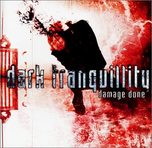
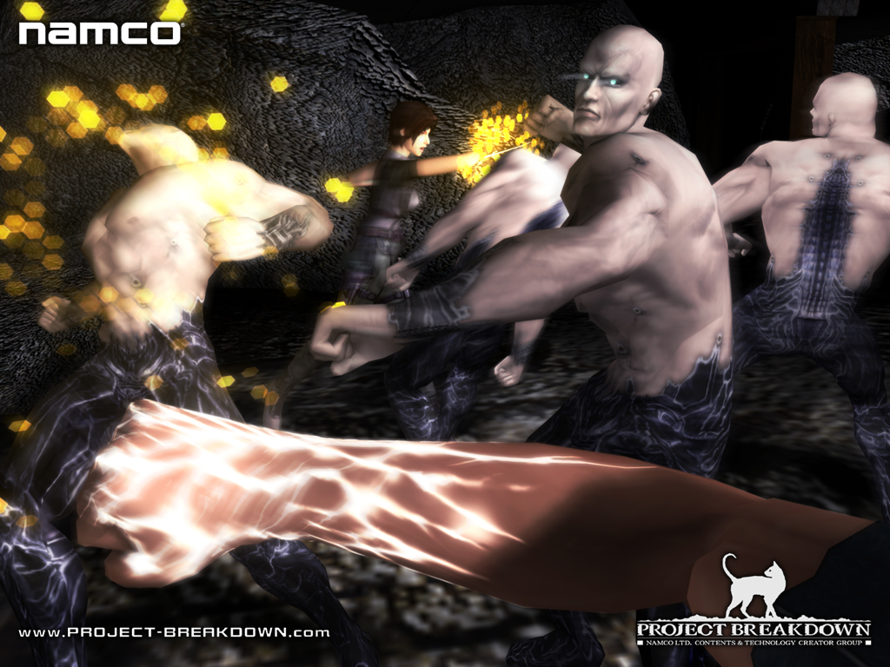
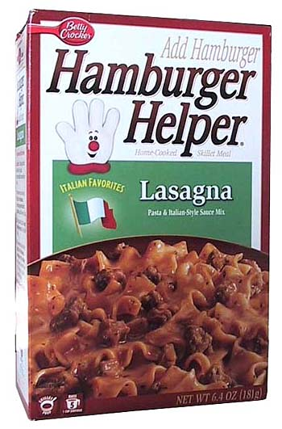
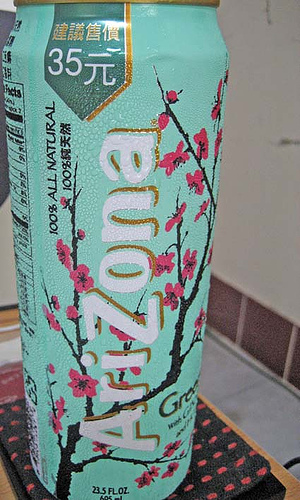

everytime i go onto numa these annoying pop ups come up everytime i click on something.....i click on a map and BAM another pop up....someone please look into this or tell me something...this is really really annoying....
my comp doesn't have a virus...
i ran every anti virus program and everything that i got and more !!!! but still pop ups everywhere !!!!
name your fav metal bands.....or the ones you hate....
my fav metal bands are:
- dark tranquillity
- as i lay dying
- opeth
- amon amarth
- bleeding through
- atreyu
- arsis
- bloodlined calligraphy
- cradle of filth
- demon hunter
- dimmu borgir
- shadows fall
- trivium
- unearth
my fav metal bands are:
- dark tranquillity
- as i lay dying
- opeth
- amon amarth
- bleeding through
- atreyu
- arsis
- bloodlined calligraphy
- cradle of filth
- demon hunter
- dimmu borgir
- shadows fall
- trivium
- unearth
wow.....that is alot of bands....and u said that we would get along....maybe, but there may be an age difference....alot of ppl on numa are young....and alot older....
the band disturbed is called disturbed for a reason u know....most of they're lyrics are different and some of them are disturbing.....thats why i dont like them too much....infact they suck ass.....
please check out all of my maps
please check out all of my maps
mcp3000 i do need help wit the siggy thing.....i dont know how to do that stuff....
i think i figured it out......

i did it.....i now have that pic for my siggy....yay me....as i lay dying is the best ever....get the song "confined" by them...
i sorda went through the same type of thing that LouDog004 went through.....but a bit different and much worse....it totally sucks....actually if i think about it my entire life sucks....everyday something bad happens to me....then something good....but then twice the amount of bad over good....
i have a pop up blocker....and its now blocking them...it wasn't before...but currently i cant even go to numa...its just not working...
mysterypower....your gay...why do u guys just make shit like this to make emo kids (such as myself) worse....it doesnt feel good to be mocked and made fun of....seriously...and by the way all emo's dont just mope around and slit their wrists...
thank you ngaged for saying "sorry if this offends anyone"...it really isnt funny to make fun of emo's....
Have you ever heard of Moe the Emo? When he walks down the halls of school, people stop and scream,
"EEEEEEEEEEEE! MOOOOOOOOOOOOOOOOOOOE!"
Yes that was bad. Sorry if it offends anyone and suff.
thank you ngaged for saying "sorry if this offends anyone"...it really isnt funny to make fun of emo's....
i have to agree wit mcp3000......
a scythe would be awesome....same wit bein a reaper....
A Scythe....(Dreams of being grim reaper)
a scythe would be awesome....same wit bein a reaper....
just because ppl are emo....it doesn't mean they have to cut themselves...ppl talk about emo music cause of they're lyrics....the alot of bands would be considered emo....for example....metallica has some sad type of lyrics and now that i've said that....OMG...they must be emo...u fags...
the principles and admin think that suspending u will give u time to think about wat you've done...but really their just giving u a vacation....i got suspended for doin bad in my classes...then i went to the office and said it was bullshit...after along talk...i was still goin to be suspended....then as i was walking out i said "thank you for the vacation"....that got them pissed off then they out me back in school....
I'm incapable of saying anything coherent or respectful so I won't say anything at all.
can u make me one....using the second one (death thing).....plzzz....they're so mezmerizing and cool....wen i saw the "death" one i was like....  as in ooooo so very cool....
as in ooooo so very cool....
as in ooooo so very cool....yay...as i lay dying is the friggin best....
Why would you burst out like that about pie? That's not emo, that's stupid.
i agree with clovic...thats stupid...
lol @ mcp3000 but that was sarcasm and im srry that i used the words "gay" and "faggot/fag"...
*Goes outside to play Kelly Clarkson*
Like, you put a dress on and skip down the road singing: "I never stray too far from the sidewalk."?
maybe mcp3000 is a chick...that would be weird...
nice secret message type thing from twistkill....highlight all of twistkill's paragraph then you will see this message
You're supposed to wait until after dinner when everyone else is watching TV and stuff and steal some.
You guys know this is a joke right?
i did....but im not so sure about the other ppl...
We don't want to start speculating again.
your right....im sorry....
what Burzum have you heard?
wtf is a "burzum" ?
im saying that its stupid to get mad over pie....i understood that it was a joke but im also saying it dumb to argue over pie....
I would guess... it's a metal band? Like the other obscurely-named bands you are talking about?
some names aren't that bad....but some are just weird.....for example-> burzum and there are a few others....i just cant think of them right now..
the first one is friggin awesome....and same to all the others...but how do i use the one i want for my siggy....cause i need the webpage thing don't i...
nvm i got it.....and thnx soooo much for the sweet siggy's......which one do u think looks better....the one wit the pentagram thing...or the one without....and srry for double posting....
EDIT: could u possibly make me an avitar too.....plzzzz
EDIT: could u possibly make me an avitar too.....plzzzz
which one of my siggy's do u think is better.....then one with or without the pentagram.......
does that mean you'll make me one....cause if it does......YAY.....
thank you soooooooooooo much....wen i saw both of these i was like oooooo *mezmerized*
mcp3000 is mad....
6th graders get timeouts....
EDIT: that was bad....im sorry...
6th grader not 5th grader...
6th graders get timeouts....
EDIT: that was bad....im sorry...
i so go wit rage against the machine....way better than radiohead....
where did i say i wasnt depressed.......
i totally agree with cheesegod on this one.....
someone is gonna take offense to the cutting thing soon....then this is goin to be locked or something.....
EDIT: i forget where, but theres this video on the internet...and its about an orange and an apple....anyways the apple dumps the orange....then it shows the oragne in its room and it cutting itself with an orange peel.....
EDIT: i forget where, but theres this video on the internet...and its about an orange and an apple....anyways the apple dumps the orange....then it shows the oragne in its room and it cutting itself with an orange peel.....
dont choose to be a vegan or a carnivor....be both.....just eenly eat veggies and meat....it works for me...
so sweet, so yummy. I would kill to have a pumpkin pie right now.
im with u on this one....pumpkin all the way....but bananna cream pie is good too....but pumpkin is still the best
its lacking color.....
umm....ooooook....wat r u guys talking about?...
i cant find anything on burzum.....maybe u made them up....
i think that he is emo....but not more emo than emoness.....thats just not possible....
i think your just screwed....that doesnt happen to me...
Video games are never good when movies. Example, Doom. Even if its a good movie, they're gunna fuck up the theme/story of the game.
they said they might be making splinter cell the movie.....talk about wrecking it..
it could turn out to be a really bad movie though....they could turn it into something horrible.....that could suck forever...and make all the fans go and like something else.....
ya....this whole thing is pretty weird....apperantly there is something in the bible that says: there was one small cow and one large cow....the small cow ate the large cow....wtf is that supposed to teach you....
EDIT: does anyone have any idea about wat that is supposed to teach you ?
EDIT: does anyone have any idea about wat that is supposed to teach you ?
Stardeash, just because you haven't done it doesn't mean that it isn't possible.
why did u say that....backing up your files doesn't always work.....and also wen u start N....go to configure and make sure its logged in as u and not someone else...or the annoymous user....cause if it is u wont have all of your progress....try that...
EDIT: that happened to me once....i went on and was pissed off cause all of the levels i finished were back to blanks....after checking configure...i had found out that my little bro was playin and he set up his own account....and so N was logged in on his account....soon i changed back to mine...and BAM i got all my game progress back...
im pretty sure im not talking about some "genesis" thing....thats just weird...
wow....great idea....
wow....u dont have to call me a prick because i said that maybe their made up.....and how long have they been a band ? cuz i know most of tha latest stuff and the old stuff....and i have never heard of them...
that was a really corny pun....just like all of mine...
wat about temporis....he's pretty good....
thnx mcp.....that gave me a really good laugh....and my dog too....(':l')
wow thats bright.....
not trying to be mean....but they sound like a wanna be dimmu borgir....
OH NO....no one cand stand up against the mighty temporis....AAAHHHH
its called an emo emporium because it has no emo stuff....R U DUMB.....do u read anything....
same thing....im used to talking on msn and stuff
this guy just logs on numa and starts to take ppl's maps and then mock them....right now he just put a map out and it says: fuck you formica.....wtf is with this kid....and he ripped off the improbability drive....this kid is truly retarded...
he got sniped.....so he's sniping...wow, someone has anger issues i think....
Just imagine...if those people were nicer in their commenting, and gave constructive criticism...this discussion wouldn't have started.something would have happened with someone anyway....it's how life works
horror movies are awesome....epspecially silent hill....and the ppl think this stuff up....cause its in the game...and still...if its a different horror movie and u think "how could they think of this"....its probly a remake from like 1914....guess wat....the movie "the omen" is about a devil child and its coming out on 666....thats sweet....
hmm...is great map maker....and one of my favs....and rates a fair share of my maps...
granted, but then the boots get a mind of their own and walk you off a giant cliff, where you fall to your death
i wish everything wrong in my life would be fixed
i wish everything wrong in my life would be fixed
i get that.....u like pie....wow....that took me a minute...
^banned for living somewhere other than canada...im guessing that he doesn't live in canada....
its all snuggley......the bunny is awesome but its all a little mushy.....8.5/10
i dont believe in god or anything like that....i think it just a made up waste of time
i think that this pie thing has come to an end....there's not much left to say....
i say 4/10 its really slow and all its a ball
^banned for having the computer slowing avatar and siggy.....
i know this.....the answer is pickles....i knew it.....do i get a prize...
my first map was like that too.....but it also got rated by three ppl....and one of them was atob and he put some weird poem or something about art school....
My First Map
.....please look at it.......
EDIT: even though some great map makers looked at my map...they didnt give me any pointers...or any advice on what to do to make my maps better....
My First Map
.....please look at it.......
EDIT: even though some great map makers looked at my map...they didnt give me any pointers...or any advice on what to do to make my maps better....
whats up with ppl getting banned then coming back...like someone gets banned for multi accounting....then they say srry and their back on....how do u know that their not going to do it again.... 
EDIT: does anyone think that i need a new siggy and avatar...
EDIT: does anyone think that i need a new siggy and avatar...
could u make a siggy for my frend ?
i need a siggy made for my frend....can someone please do it....
he wants it to say pimpdaddy31 on it across the bottom and a pic of a pimp in the background.....
a graffiti background.....pimpdaddy31 across the bottom.....and a pictue of a pimp....in like a pimpsuit.....possibly the same color as the graffiti or the font....if thats do-able....
im sure he wont mind doing siggy's for both of us...
I don't understand your jokes, Mysterypower.i agree with maestro.....i dont really understand mysterypower's jokes....
i dont think they even make sense.....
a sycthe slays all....it's like the mark of death used by the grim reaper....
...Death will be upon you all...
...Death will be upon you all...
im pretty sure there is a forum with that stuff in it already....
well atleast i hope that he wont mind doing them for us....
its a pretty good siggy....7.5/10....
@chasethebase....he wants a graffiti background and a pic of a pimp....and the words pimpdaddy31 across the bottom....possibly the same color as the graffiti...or the pimp....unless they are the same color...
i'll look for it....then i'll post a link when i find it...
thnx topolord...
my frend will soon be happy
@topolord........im not sure about the avatar....i'll let u know soon....
....he wouldnt mind an avatar either....u can get it done wenever u feel like it...thnx....>stardeash
here is a file....wit level codin stuff.....this is brttrx's metal head level....wit some added things...s.o.a.d. rocks.....
EDIT: the link one is the best
EDIT AGAIN: the level has a NaNed mine....crap....i hate those....
EDIT: the link one is the best
EDIT AGAIN: the level has a NaNed mine....crap....i hate those....
thnx for the siggy and avatar....
can someone make me a tileset....i would like a tileset of a broken heart....thnx if anyone can....i'll make a ded for the best tileset made....
and can the tileset be tiles....and not mines and stuff....unless they are inside the tiles....or somewhere else....thnx
EDIT: srry for the double post
EDIT AGAIN: please check out my 100th MAP !.....im having a contest....check out map for details....
EDIT: srry for the double post
EDIT AGAIN: please check out my 100th MAP !.....im having a contest....check out map for details....
i wish this was a better game
i like to watch horror movies and some of the old one's are funny because of the poor graphics and stuff.....now the producers are getting better and more advanced....and soon there will be horror movies that will prolly scare ppl to death...
wats so great about wat pariah said.....
c'mon ppl im sure that someone could make me a tileset for a map dedication....
EDIT: wow triple post...but this is really pissing me off....no one is answering my call for a tileset...
EDIT: wow triple post...but this is really pissing me off....no one is answering my call for a tileset...
why would u lick someone's face ????
ive changed my mind from the last post.....bowser is fucking awesome....and everything goes together great....8.5/10
well....weni was 7 i still knew better than to lick someone's face...
wat forum should this be in then....
so....how do i move it there then ?
ive been sitting here to long.....and now im goin to get on the bus and sit on it for an hour till i get home....then hope that someone left a post saying that they will try to make a broken heart tileset for me.....
EDIT: if u r goin to try to make a tileset for me....please pm me....tnx...>stardeash
EDIT: if u r goin to try to make a tileset for me....please pm me....tnx...>stardeash
this is a very dirty joke....
two white horses fell into some mud.....
two white horses fell into some mud.....
how does saying that help me with getting a broken heart tileset...
thnx zacko....but the tileset didnt work...so i ended up making my own....and it took me 3 hours to perfect....
everytime i put the level data into the box in the editor it changed the level...i dunno wats wrong...but the data is corrupted...so it didnt work...thnx though...
everytime i put the level data into the box in the editor it changed the level...i dunno wats wrong...but the data is corrupted...so it didnt work...thnx though...
im sure i did....the level just isnt working for me....so as i said before....i made my own....and it took me three hours....
the first time i loaded the level it was like scramled tiles.....so i copied the data again and got a better image...but it was still scrambled....then i fixed it and tried to submit the map i made on the level archive and it said my data was corrupt....so i started to make my own level.....and ya....
the first time i loaded the level it was like scramled tiles.....so i copied the data again and got a better image...but it was still scrambled....then i fixed it and tried to submit the map i made on the level archive and it said my data was corrupt....so i started to make my own level.....and ya....
wen i try to sign in on my account on the map archive...it says: authentication error....then under that it says: the username u entered does not exist.please try again....wtf is up with this....can someone tell me....if i am banned....can someone tell me y....
EDIT: if u know something can u please pm me....thnx
EDIT: if u know something can u please pm me....thnx
i turned the remember me thing off....my brother uses metanet too....so i dont want him screwin wit my file...
wenever i beat a square thing....its not counting....after i beat it it stays a grey color....and no...i dont have the level skip thing on....i would have beat the game...but wenever i beat a a column or anything...as said before...it stays this greyish color
METAL FANS
if u are a fan of metal music u have to check out these two bands......
- insomnium
- at the gates
get the song "black water" by insomnium, and get the song "the beautiful wound" by at the gates....they are the best ever.....

if u are a fan of metal music u have to check out these two bands......
- insomnium
- at the gates
get the song "black water" by insomnium, and get the song "the beautiful wound" by at the gates....they are the best ever.....
they're just jealous idiots who can stand good mapmakers.
well....everyone has different styles of map making...and the ppl who have been on longer know how to create better maps....so most of the snipers could be n00bs...or ppl who have been on here for awhile and are now getting lower ratings cause a n00b is making better maps....but there should be some kind of thing that says wat ppl voted on your map and wat they gave you....then there prolly wouldnt be snipers....but then i think that things might get more hectic....and ppl would be fightin about why the person gave them a low rating or something....but w/e right....its only my opinion....
>stardeash
who is the juggler like is he just someone on the forums....or does he make maps too....i've only seen his posts in a few forums....and they're usually great...adn i love his avatar and siggy....but to me this dude is mysterious....i just want some info about him....then i'll be good...thnx....>stardeash
like is he just someone on the forums....or does he make maps too....i've only seen his posts in a few forums....and they're usually great...adn i love his avatar and siggy....but to me this dude is mysterious....i just want some info about him....then i'll be good...thnx....>stardeashit not just about ratings u know....i like to think of it as something extra i can out on my resume...and its fun...and it brings out the artistic side of ppl....its not just about ratings....
there is this awesome metal band from england or something....and there called "spine" and the only song they have out is called "rising to my reflection" and its fucking awesome....but i cant download it...because it from different country and it not sell here....does anyone have any idea how to get it...or if u have it can u send it to me....oh and it was on the "amped 2" soundtrack for xbox....
slipknot is ok...i only like a few of there songs....i used to be obsessed but then they got old...so i stuck wit 3-4 songs....*coming from the kid wearing the slipknot hoody*
that doesnt really help.... 
i think he's awesome....and i want to talk to him....and see if he makes maps....
EDIT: and i want to know some other things too
EDIT: and i want to know some other things too
well....were all saying our own shit and thats only our opinion....thats why this is a forum...
not tryin to be mean...but maybe he got abducted....by the dark carnival....
dude i realize that....i just dont give a shit.... 
im in high school and ppl dont give a crap...the ppl in my school spread rumors bout everything but that...
OMG im metioned...sorry guys, but i forgot to say iwas leaving for awhile. But I'M BACK TO STAY
whats up britanniaWD, IM BACK
I guess we knew eachother a little bit. I've done alot of voting on your maps and prolly used a fw but other than that we nevr really said much to eachother.
WOW, this topic is still ging..it's been like a year..w/e..umm my dog ate my homework 


i was wondering about those dynasty maps that were supposed to come out...have they ? and is temporis gone or back ? and if anyone could explain the new things that have happened much thanks to them.
can someone please me me a siggy the same size as mine right now but its not for me, its for a friend...it needs to say: vermiLLion[2.0]
if possbl..thnx,
>stardeash
if possbl..thnx,
>stardeash
kirby is my friend
lol tom and jerry rule...9.5/100
EDIT:9.5/10 lol
EDIT:9.5/10 lol
wtf does that mean...5 something 5 ???!!?
nice zz9
8/10
EDIT: numbers aren't that appealing
EDIT: numbers aren't that appealing
there was another one then...ther had to be
lol my online school desktop..not much but w/e
can it have a darker background with red, grey, and black...and thats about it...oh ya..it has to say vermiLLion[2.0] on it too ! thnx britannia
>stardeash
>stardeash
do w/e you want as long as it has those colors in it for some kind of backgound...your pretty much free to do w/e you want to it...thnx
>stardeash
>stardeash
thanks britannia
HAS ANYONE HEARD OF A BAND CALLED: spine ?? and they have a song called rising to my reflection
Me and my gf were goin steady for awhile now then we went all akward for about a week then at the end of the week she dumped me because i wasnt right for her or something...then she went out with my fucking best friend...he is like an exact copy of me...seriously...i was pissed off for about a week after now im over it and i like someone else who is one of my friends...but somone else likes me who is a slightly close friend...and if i go out with the friend i like then my other friend who likes me will be hurt..WTF am i supposed to do ?? I hate hurting people especially my friends...but i really like the other friend.
This would all be alot easier if you knew me more but i dont thinkthat will happen cause noone of you live near me...anyways can i please get some advice or something to say to one of my friends that could help me. Thanks everyone...
>stardeash
This would all be alot easier if you knew me more but i dont thinkthat will happen cause noone of you live near me...anyways can i please get some advice or something to say to one of my friends that could help me. Thanks everyone...
>stardeash
so now 16 almost 17 is considered young ?
ok, but i dont like to be single and i want to go out with the person i like...but how can i do that without hurting the other person ?
lol @ mcp but jiggles im not going out with two people ho are like best friends...that would last like 30 seconds...i wouldnt do that type of thing anywa...but i have to figure this out soon..
nice kamikaze...can you help me lol...your emo ?
PICK TIF
RE doggy
im emo ---> ///_O
Tsukatu is going insane//but i think he meant cs 1.6 and my account name is vermiLLion[2.0] _ DeAgLe. ADD ME
granted, but then you become a n00b yourself
i wish i had an awesome gf that liked everything i did
i wish i had an awesome gf that liked everything i did
i had tm and gizmos and gadgets on my schools comps
tm for treasure mountain 
im 16 and she is 15
Let's just say that I'll believe it when I see it!
i agree
rocket buddy you remember me ? anways i was hoping you could make this pic my siggy ?

thanks guys
no problem rocket
no problem rocket
EDIT: sorry for the double post
EDIT: sorry for the double post
my desktop (oblivion icons and opeth background)
THANKS SO MUCH ROCKET....
")


")

")

This is almost exactly the same, except for new things in the dock...

holy shit sticks !! dude you could do some serious gaming on that thing...
i love this picture
EDIT: i just realized i was listening to the band "The Black Dahlia Murder" too !
EDIT: i just realized i was listening to the band "The Black Dahlia Murder" too !
use wayyyyy less emoticons, please.i may not have many posts but i have been here for a VERY LONG TIME...so i do know how many emoticons i can or cant use...and i dont think rocket would mind all the
and i just plain love it ...bright colors and nice design
9.4/10
...bright colors and nice design9.4/10
lol, and lets compare our posts...i have 36...and you have 1171
my new siggy (from rocket )
)wow, well i read this i found those in everyone sigs :S
well, i read all 12 pages and i cant think of anything
*slams keyboard*
I QUIT
*slams keyboard*
I QUIT
I LOVE YOUR NEW SIGGY ROCKET
granted, but you do the grind off the edge of a cliff cause you have the word noob in your name
i wish i was here !
i wish i was here !
my baby ...and btw does anyone know how to get the vista start menu without getting vista...if so PLZ TELL
...and btw does anyone know how to get the vista start menu without getting vista...if so PLZ TELL does anyone want any metal ? ....slipknot, children of bodom, insomnium, the black dahlia murder, etc...
get a screenshot
>Stardeash: You can find may Vista-style themes on DeviantArt, if you want the transparency, you need the full paid version of WindowBlinds 5.5.
....im not paying for that crap program...it f'd up my computer already...
Tsukatu's desktop. It's a vista imitation and rocket dock, too, not actually vista.
HOW ? tell me tell me tell me PLEASE
can you guys please tell how to get the vista imitation start menu PLZ PLZ PLZ
i was just gonna post this picture i drew to see what you guys thought of it
ITS MY BDAY TODAY
EDIT: Havent been here for a long time and just noticed the bday thread
EDIT: Havent been here for a long time and just noticed the bday thread
YAY ITS MY BDAY :D
:Dawesome screenshots

Sgt. Poptarts I LOVE YOU...i saved almost every single picture you've posted cause they are all so pro
0% -- your name looks like you were playing with yourself thought of the word condom and your fav number then changed condom to condog because you like to play with hotdogs and condoms
i was just explaining why i gave 0%
scythe33 = 100% (ive known you the whole time ive been here)
scythe33 = 100% (ive known you the whole time ive been here)
This thing called [yeah, it's a pyramid scheme] is supposed to be using a pyramid scheme to get people money and atm its free to sign up and everything but when you try to look at it it just seems like things are going in circles and it seems like it could be a big scam or real im not sure can someone look at this as well ? There are videos on youtube and stuff about it but everyone is having mixed feelings wether to believe this or not....and you can search it on google to find the site but it seems to load really really really slow or not at all whcih seems kind fish so yea please check it out and let me know what you guys think about this because some of my friends were thinking about it and i dont want them losing money or something like that on it.
Just wanted to know what you guys thought about the whole thing because im not sure what to think and all of my friends/fmaily have mixed feelings about it being legit.
EDIT: just research it a bit on google or check out the site and if this is the wrong topic then move it...just wasnt sure where to post this
Just wanted to know what you guys thought about the whole thing because im not sure what to think and all of my friends/fmaily have mixed feelings about it being legit.
EDIT: just research it a bit on google or check out the site and if this is the wrong topic then move it...just wasnt sure where to post this
He's realized that metanet forums dont compete with xbox live =/
id say 78%-ish since i havent really heard ALOT of things but ive heard some
note: love the member numbers and how that all the newer people who are a higher percentage than me are like 2000 users registered above me damn new people
note: love the member numbers and how that all the newer people who are a higher percentage than me are like 2000 users registered above me damn new people
I don't think it's a scam that'll make you lose money, but you'll never make much money off of it. The site gets people to shop out its junky little games to anyone and everyone (since you make money from hosting games) and in return, the people you usher in look at advertisements that make money for the site itself. You'll make pennies while the site owners roll in dough. In any case, the money made from this wouldn't even compare to something as easy as a part-time job.
i like how your answer is much more worded and better sounding then my post. But yea that does make alot of sense and they had a picture of the pyramid scheme saying how you would make tons of money from doing thi and saying how their games would be top of the line and from the screenshots ive seen it looks like somone playing pool off candystand.com or like miniclip.com yet it advertises itselfas something huge and breathe and money taking
Thanks for all of the feedback guys. And sorry about the first post with the company name and such should have edited that out. One of my moms friends was telling me how this was legit and how she has been making money off of one the these pyramid schemes for years...I thought that wasnt really possible and she told me it was something similar to this with all of the online games...
I play counter strike with a lot of my friends online and we have a clan going with a website and everything and i am a like super moderator on the forums and i can do everything and i went to go to the site today and this pops up and now i cant view the site. Everyone trying to access our site now gets this pop up. Anyone know the cause of this or someone who could have done it ?

Thanks for all of the suggestions people. I talked to one of the domain owners and they said that some retard kid they knew hacked into the forums and banned them from the forums and locked them out by doing what was shown in the picture. Kind of stupid in my opinion but now everything is fixed
Currently i am listening to:
- Darkest Hour
- Still Remains
- Death
- Unwritten Law
- Taking Back Sunday
- Saosin
- Gorillaz
- Aiden
Lyrics
Quite... Warm...
Unable to speak a single word
These white walls are taking me
Saying the words we mean to no one (we mean to no one)
It's the best way to kill the adolescent (the adolescent)
Familiar, restless, bleeding, constant
I've given my eyes away to darkness & locked all of the entrances
While visions of angels dance in my mind
Saying the words we mean to no one (we mean to no one)
It's the best way to kill the adolescent (the adolescent)
This world is a thief to our eyes
This world is a thief in disguise
If sight is lacking, take mine
If sight is lacking take my eyes
I can hear them calling
I can see them reaching out
They're speaking my name
They're pleading with my heart
These white walls are taking me
Familiar, restless, bleeding, constant
Saying the words we mean to no one (we mean to no one)
It's the best way to kill the adolescent (the adolescent)
I can hear them calling
I can see them reaching out
They're speaking my name
They're pleading with my heart
Youtube Video Still Remains - White Walls
The reason i've put the Youtube link on the bottom of the post is that i want people to read the lyrics before seeing and hearing the song. Most people will hear it and just say it sucks and sounds bad. Therefore lyrics first then video.
Quite... Warm...
Unable to speak a single word
These white walls are taking me
Saying the words we mean to no one (we mean to no one)
It's the best way to kill the adolescent (the adolescent)
Familiar, restless, bleeding, constant
I've given my eyes away to darkness & locked all of the entrances
While visions of angels dance in my mind
Saying the words we mean to no one (we mean to no one)
It's the best way to kill the adolescent (the adolescent)
This world is a thief to our eyes
This world is a thief in disguise
If sight is lacking, take mine
If sight is lacking take my eyes
I can hear them calling
I can see them reaching out
They're speaking my name
They're pleading with my heart
These white walls are taking me
Familiar, restless, bleeding, constant
Saying the words we mean to no one (we mean to no one)
It's the best way to kill the adolescent (the adolescent)
I can hear them calling
I can see them reaching out
They're speaking my name
They're pleading with my heart
Youtube Video Still Remains - White Walls
The reason i've put the Youtube link on the bottom of the post is that i want people to read the lyrics before seeing and hearing the song. Most people will hear it and just say it sucks and sounds bad. Therefore lyrics first then video.
Waking The Cadaver - Chased Through The Woods By A Rapist
EDIT: I dont even think that you would listen to this Vyacheslav
EDIT: I dont even think that you would listen to this Vyacheslav
Looks like its taken from all of the bands more recent music. I like their CD Hybrid Theory and then the remixed version of the CD Reanimation. Those are two good CD's from Linkin Park.
Dude thats only six songs in total and im sure they have a lot more than that considering they have like 5-6 albums out.
All Linkin Park songs look the same.
Ahaha, proof!
Dude thats only six songs in total and im sure they have a lot more than that considering they have like 5-6 albums out.
Check the following topic to see my opinion on this (http://metanet.2.forumer.com/index.php?showtopic=20671) Also dude you need to learn how to make better polls because you cant really choose from anything on there at all. Your comparing yes and no like 5 times then you just have the "..." option which means what ? I picked "..." hoping it was somewhere close to meaning "They're ok but not the best or favorite artist out there".
Sorry to bring an old topic back to life but i didn't want to make a new thread so i could be told there was already one made about this. I think Halo 3 isn't what everyone says or thinks it is. Sure it's Halo 3 but they took a lot of stuff out of the game that made it good that was better in previous version of the game (Somethings from Halo 2 and some from Halo 1 !).
Weapons - I heard about Halo 3 bringing back the Halo 1 pistol i got excited and thought "MAN ! I am going to own peoples faces with this thing". Then i played the game and it was slow as hell and now no one even uses it. Also the new sniper rifle. I like the look of it but it seems like there is a small issue in the new recoil they have for the gun. Recently i was playing Halo 2 and you will surely notice that you can shoot of your whole clip one bullet after another making then sniper better to use. As for Halo 3 you have about a 3 second recoil that often prevents you from getting the second shot on your opponent because everyone on Xbox live jumps around like there is a stick in their asses.
Vehicles - I think all of the new vehicles in Halo 3 weren't needed because they all suck.
Skulls - The skulls in Halo 2 were for fun and they made the game more fun when the skulls were found. Being a Halo 3 player even if i don't like it much you still have to find the skulls because they're awesome (or you thought that until now). I recently found all of the skulls in the game and they all suck. Every skull has negative effects and the only one that doesn't is the grunt confetti skull. While activated this skull makes confetti shoot in the air and the screams of little kids yelling "YAAAAY" whenever you get a headshot. This sounds cool the first time you hear about it but becomes a negative thing really fast (i get like almost all headshots because yes, i play the game too much).
EDIT: Sometimes a lot of lag on Xbox live as well. Several headshots with a sniper rifle have not counted. (Yes, i took pictures of them. The bullet goes right through a mans head and blood squirts out and no kill).

Weapons - I heard about Halo 3 bringing back the Halo 1 pistol i got excited and thought "MAN ! I am going to own peoples faces with this thing". Then i played the game and it was slow as hell and now no one even uses it. Also the new sniper rifle. I like the look of it but it seems like there is a small issue in the new recoil they have for the gun. Recently i was playing Halo 2 and you will surely notice that you can shoot of your whole clip one bullet after another making then sniper better to use. As for Halo 3 you have about a 3 second recoil that often prevents you from getting the second shot on your opponent because everyone on Xbox live jumps around like there is a stick in their asses.
Vehicles - I think all of the new vehicles in Halo 3 weren't needed because they all suck.
Skulls - The skulls in Halo 2 were for fun and they made the game more fun when the skulls were found. Being a Halo 3 player even if i don't like it much you still have to find the skulls because they're awesome (or you thought that until now). I recently found all of the skulls in the game and they all suck. Every skull has negative effects and the only one that doesn't is the grunt confetti skull. While activated this skull makes confetti shoot in the air and the screams of little kids yelling "YAAAAY" whenever you get a headshot. This sounds cool the first time you hear about it but becomes a negative thing really fast (i get like almost all headshots because yes, i play the game too much).
EDIT: Sometimes a lot of lag on Xbox live as well. Several headshots with a sniper rifle have not counted. (Yes, i took pictures of them. The bullet goes right through a mans head and blood squirts out and no kill).
indeed - i think they are alright but there is a lot more and better. your choices are a little likeWe cant tell if he likes them Cossack because he wasn't sure what to vote either as said in his post
yes
yes
yes
no
no
...
i take it you like them then?
Quote: "nninja"...
100% in my pants but only about 95% on the forums since you haven't climaxed on here quite yet
I've never heard of a "No Shirt, No Shoes, No Service" statement.
Are you serious Keron ? Dude, thats amazing. Sometimes it also depends where you live as well. Anyways, the only thing i found funny about it was:
The guide on how to minimize clothing while holding to "No Shirt, No Shoes, No Service"
Take off everything aside from your shirt and your shoes. EVERYTHING else. They can't use the old trick on you if you have a shirt and shoes, but no pants or underwear.
83.159795345%
I think that im not very well known because i stuck more to making maps then actually posting on the forums then i left for quite a while but im back posting a bit more now. And some of the more senior members know me (i think).
I think that im not very well known because i stuck more to making maps then actually posting on the forums then i left for quite a while but im back posting a bit more now. And some of the more senior members know me (i think).
Cardboard backdrop, bad quality film for added effects, plastic rocket ship, barely enough paid actors =/
LOL, does that count as being racist/discriminative against another member of the forums ? And @ Keron --> Im actually not surprised anymore about you never seeing a sign or hearing that phrase because it seems a lot of people from Cali dont wear shirts and walk around considering the temperature there compared to here. Outside of my house now everything is covered in snow and its just plain white. No other colors/shades just white.How to make a bunny dinner
You will need:
A bunny (or a mentally diseased poodle with big ears)
Carrots
A knife
Firstly, you have to decide whether you want to make a bunny dinner, or a bunny dinner. The same phrase means two things, so choice accordingly.
If you chose bunny dinner:
Cut the carrots up and feed them to the bunny. Then stuff the bunny in a box and ship it to your local hip-hop artist. If he doesn't know better, he'll let the bunny out, which will then probably throw up carrots on him due to your overfeeding.
If you chose bunny dinner:
Cut the carrots up and feed them to the bunny. Then run the bunny through with the knife and cook as needed. Prepare an argument for when the ASPCA comes over to your house to sue you for hurting wildlife without a proper cause.
you bitch. how could you eat a bunny. you bunny killer.
Are we supposed to care or something?
Its not really that interesting but some people might think so.
In my opinion that's 5 too many. Just me maybe.
I'm sure they're are more like that too.
I bet you could do this with a lot of bands though. People are just picking out certain artists they dislike then picking on them. I bet you could also do this with some of the music you listen too as well rocket.
Hasn't this ever been posted somewhere on the forums before ? Like seriously i thought it was one of the most known things about the high score part of the game.
77% Seems like your getting a little closer to the top every time you post or i see/hear your name.
Hopes Die Last - Call Me Sick Boy
This topic comes back every once and a while with usually no response from Mare or Raigan and if they do respond its never a straight cut to the chase answer. [/still haven't voted]
Life is truly the hardest enemy. But for this i'd say the gauss turrets
Immortal Technique - Freedom Of Speech
Im going to miss suki. But if he is focusing on his studies at Boston University then its all good because he is getting something good done with his life.
Through The Eyes Of The Dead - Two Inches From A Main Artery
the color blue
Decapitated - Spheres Of Madness
Ah, don't bother, wedgie. You know that someone's always going to try to revive this thread, even though it's hopeless. It's like using a defibrillator on a skeleton.
I know it's old and some people are still replying such as me and Django but his post is very true and no matter how old this post gets someone will either post on it or make a new one. Just like sticky it then leave it there for people to read once in a while. But move it to the proper part of the forums.
I'd say make a thread and sticky it. Then from there if it gets to be popular the maybe get people together for different topics that would go in that part of the forums and then figure some stuff out to see if it would work out in the end.
Where the hell did my post go ? [Honestly who deleted my post and why? It was between Electrical-Hazard's and Luminaflare's post.] I'd reply to yours again cossack but i can't remember exactly what my first one said since it appears to be gone so ya. Anyways im pretty sure that i said it was a crappy game and not crappy graphic wise. I just hate how they make everything have better graphics only supported on newer machines. They should let you trade in your old comps to the same company to get a rebate if your buying a new one from the same company. And let you keep the hard drives for information.
The only thing i would ever need would be shape shifting [including the voice change as well for who ever i changed into]
Couldn't you go into the person profile and see their birthday in that ? Well, anyways i'd say around 19 - 20
Gorillaz - 19-2000
I love custom built PC's. At the moment im using a dell with windows xp, service pack 2 and all default parts. 17" flat screen monitor, wireless mouse and keyboard. But anyways back to Crysis. I don't like the online play for the game because it seems to fast. Seems like you just run around shooting hoping to kill an enemy. Is it still like this or was it just like that while the online demo/beta came out ?
It was aimed at you Why Me. But your guess is close to my age. Im guessing Cossack is about 16-17.
I am 17 And Cossack im guessing 14 now because it just seemed like it for a second.
And Cossack im guessing 14 now because it just seemed like it for a second.Never really posted any pictures of myself on the forums before. My web cam doesn't have the best quality or color in the world but hey it's me right
Me in the morning just after i get out of bed.

Me like 30 seconds before this post.

Me in the morning just after i get out of bed.
Me like 30 seconds before this post.
Im pretty sure that snozberries are off of Willy Wonka. But it doesn't matter because you taste like Keith.
I hate this game to death and always will.
I don't usually care to much about the graphics but more in actual game play and how fun the game is. I like all of the Need For Speed games up to NFS: Most Wanted.
Can someone please post a tutorial for soft-modding an Xbox. Just a regular black original Xbox. I have been looking for this all over the place but i cannot find it. And possibly a tutorial for modding Halo 2 as well considering you have to soft mod your Xbox in order to do this.
Spine - Rising To My Reflection (Only Found In The UK)
Just press the search button, type you name into the appropriate box, and click a forum from the given list. Then calculate the posts through the number of pages, and I believe it is 25 posts per page except for the last.
I think that would be very boring trying to find where all of your posts were and why would you want to know how many posts you have in each forum and sub forum ?
Looks like it would be a lot of fun. I might try it out in a day or two.
Kind of a random spam type post for no reason and it wasn't even really related to the topic.
http://metanet.2.forumer.com/index.php?act...highlite=turtlePut Turtle in the "Filter by Member Name" box and leave the keyword box blank.

...turtles are slow
LOL, I would be surprised if someone actually did this.
Still, what would be the point of this ? It's like "Oh Man i have like 1337 posts in the sub forums under General !!!!1!!!!11!!!!one!!!eleven!!!!1!!!"Er...I'm not quite sure but I don't think it can be done. I guess just do a search for your name and click the forum to search in.It's a relatively simple mod you put into the HTML of the "Search Window" (or something similar) box in the ACP. I don't know the code, but I know it's there.
Bleh. I just think that there is no point in viewing how many posts you have in the foums/sub forums. And if you do this then you see some numbers and then you've completed what ? Honestly it doesn't matter how many posts you have in different parts of the forums cause its not like if you get so many someone and so many somewhere else you will get a prize. [/EndCockyness]
just so you guys know, that picture was from last year and like I had never played N yet back then
camera phone - I don't own a webcam, digital camera, or a new mac, so im obviusly not a nerd
im so cool
Well, my webcam is about 5-6 years old. I don't own a cell phone or a mac. And this makes me a nerd to own a webcam because my mom bought it to take pictures of things to sell on ebay ?
corn-diggity-doggy
- Gwar - Bring Back The Bomb
- Prodigy - Funky Sh1t
- Deicide - Fu<k Your God
- Waking The Cadaver - Blood Splattered Satisfaction
- Dying Fetus - Kill Your Mother; Rape Your Dog
It was a discussion of Guitar Hero. Im pretty sure i gave my opinion on this discussion. I know that is very cocky sounding so i will say this. The songs on the game are ok but i think it needs to have more hard songs like Through The Fire And The Flames. Or at least have some more fun songs like Trogdor from Guitar Hero II. It has a good selection but you should be able to add your own songs to it and edit the chords on the console your using to play it instead of having to use a PC version to add custom songs. It would add a whole new element to the game and you could download people's custom songs and play them online. That would be sick.
Just watched this and it was great! Loved it and posted on youtube as well.
I say just leave them alone. They are fine living without people shooting them. There was an incident where a huge whale died and got beached and the townspeople didn't know what to do with it and it stunk. They took dynamite and blew the whale up then buried it's chunks in the beach and a chunk that flew off when it blew up hit a car and crushed it. [/backontopic] It's bad and i don't think it should be allowed anywhere. Banned all over FTW.
What a bunch of killjoys lol.
crappitrash
Does that mean your emo like me ? Anyways i know some people who have tried to commit suicide and it was usually over a relationship that they had been in for a very long time. Usually about 2-8 years. It meant almost everything to them then when it happened and they split up one said to the other that they never wanted to be around them anymore. Could you imagine the pain someone would have to go through after being in a relationship for that long then you find out that the other person just lost interest in you one day even though you severely loved them. That could be a reason someone would commit suicide but even though it may hurt that bad it's still not the right thing to do.
Note: Maybe move this to Serious Discussion ?
Note: Maybe move this to Serious Discussion ?
Lamb Of God - Again We Rise
It would be nice is everything could be advanced enough to do that by yourself. Maybe an addition to GH4 (they will probably make like 9-10 of these games or other games like it because they are a hit among a lot of people).
Why do you also talk like it's 3rd person ?
I would give Kablizzy anything off of my special man services menu if he gave me a hug.
You taste of bong water... not that I know what that tastes like
...
...
...
...

Thats gross. You taste like a broken yellow battery charger that has one green and one red light with several holes and a bent plug in.
I don't believe in anything myself but at the same time i do. I can't just go with "everything just came out of no where". But i have several songs with lyrics that are against god itself (Christian kind of way) and say how he/she is bad and hates/ruins our lives.
God Hating Lyrics (Make Some Sense)
God Hating Lyrics (Make Some Sense)
Mcrappy
Calyx Ft Ill Skillz - Thru Your Eyes
Fondlecorpse - Twice The Hate, Twice The Carnage/ChoppingMall
I might not have much to say about this topic myself but watch the movies. Bourne Identity/Supremacy/Ultimatum. I think they will explain some things and also get you thinking about a lot of things and who actually controls us and has more power.
Dude, Banjo rocks and so do all of the characters in it. 10/10
(My avatar is my girlfriend by the way. Edited in paint to add the heart. Thats 100% pro right there)
(My avatar is my girlfriend by the way. Edited in paint to add the heart. Thats 100% pro right there
)Reverie Sound Revue - One Marathon
Well, what do you think of it ?
I thought it was on overall cool way to make a game. Gameplay looks good in the videos but when you actually go to play the game it seems too different. The wall running and everything is very cool (advanced parkour) but is very doubtable at a lot of times throughout the game. I also didn't get how the electronic part fits in with everything. That kind of confused me a lot.
I'd have to say 6.5-7/10
I thought it was on overall cool way to make a game. Gameplay looks good in the videos but when you actually go to play the game it seems too different. The wall running and everything is very cool (advanced parkour) but is very doubtable at a lot of times throughout the game. I also didn't get how the electronic part fits in with everything. That kind of confused me a lot.
I'd have to say 6.5-7/10
43% Mostly only in Messageboard Games
Inked In Blood - I Just Died In Your Arms Tonight
Brttrx what was one of the hit songs by Modest Mouse in i think 1999-2002 (i think there was like a boat in the video or something; anyways very catchy song and i wanted it)
Brttrx what was one of the hit songs by Modest Mouse in i think 1999-2002 (i think there was like a boat in the video or something; anyways very catchy song and i wanted it)
3. The first i got quite angry with because the cord was stuck behind the computer so i pulled on it really hard and the cord broke and the end was still plugged into the back of my computer. Second i did one of those mad smashing on the desk things and all of the keys went flying off of the keyboard never to work again. Third was a wireless and the batteries died while playing in a CAL - M match for Counter-Strike 1.6.
As I Lay Dying - Forever
The Black Dahlia Murder - What A Horrible Night To Have A Curse
I have the program GIMP and i know how to use it fairly well but i seem to have one problem over and over. Every time i go to save an image I've made i click save as then pick my directory then it saves fine but when i got to look at the image all of the image and coloring is all distorted. Like it will look fine in GIMP but as soon as i open the picture using anything else or post it on the internet it will go all bad and distorted losing lots of quality. Any help would be nice Thanks >Stardeash
Thanks >Stardeash
Damn, lol that made me laugh really really hard.
Here is my joke:

What do you think i should be saving the pictures as ? Currently i am saving them as Jpegs.
Lmao. I am having no problems with my gmail and I've never had problems with gmail. I think that is just one of those random errors some people get every once in a while that don't really mean anything and have no fixable solution.
What about Canadians ? Hmm, seems that you have forgotten to mention us.
Well, thank you for posting at least what you know. I will try this out and see if it works and if not then can someone else please post here to help me
Why hasn't this thread been locked yet? It's getting a bit silly now.The original post hasn't been resolved yet.
How come Mare and Raigan don't just come tell us to stop talking about it or announce something like a slight clue/teaser to throw us off their trail ?
Deicide - Scars Of The Crucifix
I know im getting Icemat Siberia's and a new cs account. Hoping for the 360 /w H3 FTW
LOL, Keron have you even tried fixing this problem at all or searching for why this error is coming up ? Like seriously google it and your problem could probably be over. And if you have and haven't found anything then really contact support because google should respond.
I got:
A DVD (Eye for an Eye)
SanDisk Sansa E280
And this toolbox thing... filled with chocolate o_O
Merry effin' christmas everyone
Sansa E280. Your lucky coffee. You can customize those until your dead. The newest theme's for them are the best. You should look into that. I also got like 50 boxes of chocolate and a DVD game disc.
Moldy fish dipped in ketchup.
I'm listening to people talk in my house because my family is over for Christmas.
Warhammer is pretty sick but i wouldn't spend that much money on that stuff because it's way way to expensive.
Ok, thanks everyone for that and i was also wondering one other thing. Does anyone know any really cool effects that they could teach me on GIMP ? Or some really cool brushes that i should download ?
How come Mare and Raigan don't just come tell us to stop talking about it or announce something like a slight clue/teaser to throw us off their trail ?PFFFT. By the time you we find out, M&R would already have grandkids.
LOL, so is that a vote for "yes" on your part ? I still haven't voted on this and i don't think that i will even if some news is spilled on this topic.
Microsoft should really fix things like this and repair things that people are having problems with or replace them because vista is total ass and is causing too many problems for everyone. Throw vista in the garbage. Go back to windows XP and play N until your 100 years old then pass it on to your grand children.
I was looking in Tests and Inquiries and i noticed this on the side where Harley's posts were. It appears he has a negative amount of posts lol.

Don't you think he has? Why would he be posting here if he could solve it himself?Well, i know some people that would actually do it to make some big deal out of nothing just to get some attention. I'm not sure if he is like that or not because i don't know him to well so I'm not directly saying he is doing that I'm saying that he might be. Here is what i found using gmail help.
Quote: Gmail: Help CenterIf you're seeing a 'Temporary Error (502)' message when you try to log in, it means that your Gmail account is temporarily unavailable. These errors generally resolve themselves within a few minutes, so please wait a bit before trying to log in again. Please note that while your account is inacessible, your messages and account information are safe.
If you continue to see this error over an extended period of time, please let us know so we can look into the issue.
They are also stating that if you contact them they will help with the problem. Although it doesn't really say they will directly help, It just mentions them "looking into the problem". I would still send them a few emails or contact them another way just to try it. They are google and they usually get things fixed pretty fast so just try it and maybe try it with a different browser ?
It's all good until you try to login in like 5 hours then your gonna be back to the same situation and that will be funny. Or you will end up getting some kind of new error that google will claim to be fixing.
Well... Here's what I got. It was an okay Christmas, I guess. *Sigh*Man, clothes!? Who gets clothes for Christmas? This is the worst one ever! =/
- A new iPod
- A Big Screen HDTV
- Three trips to Jamaica
- Fourteen X-Box 360 Games (Cuz I already have a 360)
- A Wii!!!!!!!
- Two digital cameras
- A llama to call my own!
- A brand-new shawl
- a double-digital super-mouse that can scroll diagonally and do my laundry (Even tho' my parents do that for me anyway, hehe)
- Seventeen DVD sets of "When Harry Met Sally"
- An African Slave named Pall
- A brand-new Rolex!
- Three Lexuses
- A $400 gift card to WHEREVER I WANT
- And some clothes. ;_;
What an exaggeration. I found it a little funny at the start but when it kept going it kind of got a little more boring and the things started getting less creative. If this is what you actually got for Christmas then take a picture of all of the things in the same room without editing and such to prove your very fake sounding Christmas list. Yes, i tend to be somewhat of a bad apple or fun ruiner.
I love you Cossack. 99.999% (Obviously round that off to 100% because your like pro now).
You will win a (.'.) (cookie)
Protest The Hero - Heretics And Killers
Changing to XP is good because i think it's better and a lot more people know how to use it but at the same time thats bad because vista is the newest installment and people should be getting used to it seeing it is going to probably stick for a while with upgrades and everything to fix all of windows problems with it.
Happy B-Day Vyacheslav 
pretty kitty 9/10
9/10Hey guys I'm Shark. I just found this place a couple days ago...I love N!
A couple days ago ? (This is kind of a belated post then hey ?)
@notkitt: That pretty much says it all dude. Stop flaming everyone for the fact your some kid who is a "straight up G" ok homie ? Peace out doggyou people are a bunch o nerdsRemember your place, kid. You're on a forum for a ninja game.
>stardeash a.k.a. Gangsta homskillet for life son
-I think 'blizz said it better. Don't try and start this up again, please.
Octopus chef with arrows shooting at it ? 4.5/10
Guylian Seashell chocolates are soooooooo good. I got 3 boxes

Some ideas:
- How Much Different Pop Rots Your Teeth
- Build A Mini Motor
- The Classic Lemon Power Electricity Thingy
- Prove How Forums Are Useful And Sitting On The Computer Won't Rot Your Brain
- Something To Do With Scripting/Game Engines
Super Mario Galaxy
Assuming you've played it by now, how is it ? It looks ok on the commercial i saw but i want someone's opinion on it. So is it good or just terribad ?
I tried two different browsers (and don't say "IE" >_>) and it was the same.
I'm curious to what browsers you were using. I don't use IE because i think it totally blows. Right now I'm using Mozilla Firefox.
I also have Super Mario Galaxy. It really isn't suited to the Wii. All you do with the Wii Remote is shake it.
[Off Topic]Wow, in the space of two days (or so) I have injured my arm playing bowling on Wii Sports. At least I'm a pro at it.[/Off Topic]
Umm dude, Isn't the only thing you really do with a wii remote shaking it and moving it in like small circles ? Honestly i had a wii the first day it came out then i sold it after a month because i was tired of most of the boring games they were making for it and making the same movements to all of the games because thats pretty much what you do.
Alexisonfire - It Was Fear Of Myself That Made Me Odd
First Entry:

Second Entry:

Ya ya i know no avatars along with it but i couldn't get them quite right so bleh. I can make the second one smaller because it looks a little bit to big. I think it would look a bit better slightly shrunk down a few pixels.
Second Entry:
Ya ya i know no avatars along with it but i couldn't get them quite right so bleh. I can make the second one smaller because it looks a little bit to big. I think it would look a bit better slightly shrunk down a few pixels.
Ya, it's pretty much your own decision. I would say XP but others will say vista and so on. Maybe take Atilla's idea and go dual-boot ? Either way computers are money consuming scams
You injured it for a cartoon bobble-head player on a wii that resembles you and a highscore ?
This sounds like it will actually go somewhere like N. I'll PM you later if i get the time to.
Honestly i liked you old one better. This one is still good though. 7/10
feist's new album is amazing,
'The Limit To Your Love' ~ Feist
I'm sorry but they are so annoying.
Flyleaf - I'm So Sick
KD (Kraft Dinner FTW)
Cannibalism would be an option. I would say "yes" i would do that right now but when it actually came down to it i wouldn't end up doing it at all. After about 3 weeks of like a rotting corpse beside me assuming that i killed them i might try it then end up like throwing up like some preppy girl putting something in her mouth that she thinks tastes bad then making some gagging noises. It would be a funny sight but i would end up starving myself or eating dirt.
Dimmu Borgir - Eradication Instincts Defined
Well is the other person a girl? Because, "You don't want to die a virgin, do you?"
Life or death and your worrying about someone being a virgin before they pass away ? lol.
Agreed.Need for Speed?Yes, the best racing series ever
But those screenshots of Gran Turismo 5 are amazing.
They are but i also think that when you actually get to playing the game it doesn't look "as" good as that but kind of close. I can get really high def renders for any game and say it looks like that. But if the actual gameplay is that good post a screenshot of someone playing it not one found on the internet that was taken and redone to look better.
Broken Social Scene and Gorillaz are good. There you go good music that i listen to that you also listen to so HA.
- Rise Against - Ready To Fall
- Silverstein - Smile In Your Sleep
- Linkin Park - Numb
- Glasseater - Art Of Communication
- System Of A Down - War?
Your Mean fretserererererer.
Between The Buried And Me - Alaska
Between The Buried And Me - Alaska
Devil May Cry Render with my own odd background but i think it fits together nicely.

Welcome back man. Not sure if you remember me since i wasn't to active but i sure do remember you
Cool! Those tile shapes are pretty awesome.
No offense but that almost looks like an automated post.
I whip out my grenade launcher with a net shooting attachment and capture cossack in the net while calling in a helicopter to come pick him up and drop him off in some miscellaneous spot by a swamp. >star takes the hill and gets his foot soldiers to plant land mines all around it.
You have been invited to join the "ROOSTER CLUB ". The title of the email contained that followed by this "8====D". I'm guessing it's not the kind of rooster that you have at a farm.
". The title of the email contained that followed by this "8====D". I'm guessing it's not the kind of rooster that you have at a farm.Wow, i totally know which one that is but i can't think of the name or column.
- The Thunderlords - I Like Dirt
- Amon Amarth - Runes To My Memory
- DJ Spectre - Hard Clan Mix
- Evergreen Terrace - Dying Degree
Jetman is an ok app but it's to easy. All you do is click and your little jetman goes up. Not too hard.
8.5/10 I like the design of it but it's a little bit too plain.
Thats not fair Krusch :'(
I live in Canada. It's aloud here. If it was illegal i would still download though.
Modest Mouse - Float On
Bayside - Masterpiece
So no, I'm not an illegal download guy. And I think if you do illegally download, you obviously don't value the music enough to pay a meager $20 or so.
What if you can't get the 20$ or so because you don't have enough money to spend on things like that even if you value the music.
- Evergreen Terrace - Sunday, Bloody Sunday
- Bullet For My Valentine - Tears Don't Fall
- Chevelle - The Clincher
- Red - Breathe Into Me
- CKY - Skeletor vs. Beastman
For Metanembers, you guys should have like a highlighted bright color like lime green, hot pink, etc..
I've got all of the games and I'll go retrieve my friend codes right now if the stupid thing lets me. I've been having an odd error with it lately where when i try to get to them for each game it won't let me or it hardcore freezes on me.
Worst dream i have ever had was when i was 7 years old. It was sometime during the day around 1PM i went to have a little nap. My dream was me running through this gigantic cave with what appeared to be a giant yellow cyclops chasing me. Around every five seconds it would try to hit me with it's giant horn but would miss and every time it would try it seemed to get a lot closer. Then right about when it was going to hit me i would wake up. Since i was a little kid it scared me and everything but the weird thing was that i had this dream several times throughout the period of about 2 months.
I just realized, that after playing N, and beating it, a new N version would be perfect, and, a bigger screen would maximize the playing, such as instead of a XX by XX, the play could be amazingly more complex and you could do so many more things in one game.
Meh, i think everything is fine like it is and either way you would still be playing N which makes me happy
Anyone who knows what MTV is can serious get all of the music they want. MTV puts like every single new album on their site in the section "the leak". From there you can listen to the whole album and download it. And downloading music illegally is still considered support by some artists. It also helps a lot of indie bands get out there too. You have to admit that if you have downloaded songs illegally that you have found some artists that you would have never heard before. Question: Can't you download music off of last.fm as well ?
- 2 Pac - Ghost
- 3 Inches Of Blood - Deadly Sinners
- Ablaze My Sorrow - Slit Wide Open
- The Academy Is... - We've Got A Big Mess On Our Hands
I guess I couldn't think of what else to say -- it might be interesting to know how the SAT tests are done? Our new method just uses linesegments rather than tiles so it's slightly more general, however it's almost certainly much slower..
If it's going to be better than the slowness is worth it isn't it ?
86.5 %
guns, to shoot down the people making an effort for the new walls
Halo 3 man cannon to launch the workers to the other side of the world
Alter Bridge - Metalingus
Please check out and possibly rate my newest map. This is my newest map in over a year so it might not be everything your expecting. Criticism is expected since i think it's not the best thing in the world and it needs little improvement but i can't think of what it needs.
Tileset: http://numa.notdot.net/map/112366
Playable: http://numa.notdot.net/map/112371
Tileset: http://numa.notdot.net/map/112366
Playable: http://numa.notdot.net/map/112371
Ouch, that sucks. I hope your recovery goes well.
You could always play N one handed, you know.
I don't think that would work to well depending on your control setup. You could always change that though. Invictus, that looks like it hurt like hell. I had my hand looking like that once and it was from punching a wall in frustration but i don't think it looked that bad. Also i never had surgery or a cast for mine i let it heal naturally kind of. Remember that if anyone bothers you about it you can hit them with a cast.
I think the the beady little red eyes of the guy staring at me are a little bit more standing out than the font. 8.9/10
Arsis - A Diamond For Disease
13 minutes of RAWR!
13 minutes of RAWR!
I think that it's almost an equal discussion going with and against the fact. Everyone can see their own way on it but in the end the vote comes down to about 50/50. I can totally agree with the fact the downloading music illegally is bad but then i will minimize the page and check too see if my songs on Limewire are done downloading yet. It's like when something feels good but it hurts, you want to keep whatever it is going but at the same time you want it to stop.
I just wanted to say that making accusations publicly is not a good idea. You can make yourself lots of enemies very quickly through one or two false accusations. Quietly PM Maestro and let him check it out instead of making a big thread about it.
I think this guy is a multi-accounter. All his maps are rated 4-4.5 with 9-13 votes and 1-3 comments. None of his maps are particularly amazing, especially not his latest tileset, which anyone could've done in a few minutes.
Agreed, but it also might give the courage to someone else who found something similar happening. As for enemies who would they be ? I think the only people who would actually end up hating you would be the people multi-accounting themselves because i don't think that anyone would have any other reason to hate you for someone else being caught. Unless the person multi-accounting was also rating that persons maps with their many accounts.
It's pretty hard to get a high score though. My new best is 1482.
I know some people who are the 24/7 facebook type and they pretty much have every application added to their profiles and they sit there all day adding new things and updating everything. Some of them have scores up to 10,000 on jetman and other application games.
That would be by far the best color. I think it would be a privilege to be part of a group with a hot pink color. Also other groups might get jealous of their awesome color and want something more amazing than hot pink, but thats not going to happen if hot pink it actually picked because nothing beats the brightness of hot pink.
Sp do you guys have expensive webcams ? Yours take these great pictures and mine end up really fuzzy. This is my webcam. It isn't the best but i expected it to take better pictures than it does.

Wow, lovely tile set. The map's good, too.
Thanks, I thought the tileset was pretty good but the actual playable version of the maps seems to only look good. It plays through too easy i think.
Exactly what the title reads. We should start a new signature contest. I have no idea about the theme or who should do it but i think that it would be a good idea.
NOTE: We officially have permission and will be starting within the next week so get ready image makers.
So far we have a small list of people who will participate but it's still a list.
Current Hosts:
NOTE: We officially have permission and will be starting within the next week so get ready image makers.
So far we have a small list of people who will participate but it's still a list.
Current Hosts:
- >stardeash
- southpaw
- >stardeash
- The New Harley
- Condog
- southpaw
- darn_hippie
- Animator
- XiAH
- T3chno
- Ignate
- Chase
Just delete all of your PM's or copy the one's you want to keep and save them on your computer. Also every time you reply to a PM it takes up more space in your inbox doesn't it ?
P.S. Topic should be moved
P.S. Topic should be moved
I'm always up for a collab. PM me if anyone wants to do one.
Entire album "Suicide Notes And Butterfly Kisses" by Atreyu
97% - How come everyone rates mosh so highly even though he rates everyone else lower than him. Honestly I've never seen him rate someone that high at all. (No Offense).
It's an icon. Like the icons for your desktop for My Documents or My Computer. It's just for N and it looks really nicely done.
Yes southpaw. I just think that there should be one every month or so. Then it will keep the image makers busy and creating new things all the time and a lot of cool and custom pictures/signatures/avatars will end up coming out of this. I would manage one with some help from a few people if they were interested. Add my MSN if you want to help manage this with me. Highlight the text --> atram3ntis@gmail.com
Happy B-Day Topolord
Mine are just random pieces of bad and just flat out suck compared to the others wow. Seriously lol, it's true.
Ok, I'm good with everything and I'm sure that we can get quite a few people to do it. I also see no reason why rocket wouldn't let this happen.
If i took a picture with a digital camera it would be huge. Also i don't want people taking pictures for me because then i would have to explain why i am taking a random picture for a forum where the kids/adults don't even know me.
10/10
System Of A Down - Metro
I think it would also be cool to to have a banner with an assortment of backgrounds to fit the theme's or whatever the current contest was going on.
I second that. Let's go start a protest.Hmm. If you live in British Colombia, you might be close enough to me. If not, I'd rather not waste my parents' money.
Lets do it, where are you at ? I'm close to Kelowna.
I'm not going to edit the current map or re-release it but i will keep the suggestions in mind. I usually had hidden enemies in my maps because i thought i was just a lets say fashion for a little while and I've been out dated on it so now I'm guessing it's back to classic show the enemies ?
Hmm... I've never known him to actually be a NUMA multi-accounter (although he has multi-accounted here once in the forums.) He has claimed to have left entirely, so any left documents or punishments may be useless.
Although, I never said the search would not be worthwhile.
He might just be doing it for fun waiting until he gets caught then doing it again using a different handle or IP. He could also be one of those people who does it for fun until getting caught then they just move on to the next thing continuing annoying people on forums/games until he gets bored of that then moves on the next best thing: mocking people on xbox live. And so on.
Good News For People Who Love Bad News by Modest Mouse

- Lumidee - I'll Never Leave You
- Silverstein - November
- Billy Talent - The Ex
- Underoath - Reinventing Your Exit
- Aiden - Knife Blood Nightmare
- Beastie Boys - Intergalactic
- Callahan - Cover Story Glory
- Deicide - Blame It On God
- Ensiferum - Into The Battle
- Flyleaf - I'm So Sick
- Gorillaz - Clint Eastwood
- Haste The Day - All I Have
- Inked In Blood - These Sonnets Of Our Lives
- Jibbs - King Kong
- Kalmah - Hollowheart
- Lamb Of God - Again We Rise
- Mindless Self Indulgence - Bring The Pain
- Necro - Light My Fire
- Opeth - Ghost Of Perdition
- Pendulum - Hold Your Color
- Quest Of Aidence - 7th Target
- Red - Breathe Into Me
- Silent Civilian - The Song Remains Unnamed
- Through The Eyes Of The Dead - Beneath Dying Skies
- Unearth - Black Hearts Now Reign
- V-mob - Blackheart
- Waking The Cadaver - Blood Splattered Satisfaction
- XdeathstarX - Die To Remain
- Years Spent Cold - Cut In Half
- Zombie Apocalypse - Morti Viventi
your mom in...
I've never made a race map. I think i will accept and try this one.
But you would have to do something 1337 first.Do you automatically get a custom title when you have 1337 posts, then it goes away? Because I had a custom title for about five minutes.
If thats true then when you get to a 1337 number of posts just post in BnT, TnI and MG.
We could do that if people wanted it. Switch everything around every contest or just make small changes such as "you must have a cow in the signature". I'm cool with that and it gives new challenge to everyone who is included in the contest.
I edited my first post and put the list of everyone who is participating in making the images and the people willing to help set it all up, a.k.a. Hosts.
I edited my first post and put the list of everyone who is participating in making the images and the people willing to help set it all up, a.k.a. Hosts.
Senses Fail - Institutionalized (Suicidal Tendencies Cover)
No, you may order some kind of title that describes you the most, but first, you must do something 1337 (leet) worthy. For example, you could have... made a skin, or made a new rule, or maybe make online/off line buttons for that matter.
Hey, wait a minute...
Someone sounds like their hinting at something. Anyways, i think it would be hard to do something leet now days because a lot of things have already been done. Just have to be really creative i guess. Back on topic, will the Metanembers get a color ?
flying in space...
okay, here are some of my ideas.Honestly i don't really like any of them because it seems that if you were to add those to the game it would just make N into a stereotypical marketed game. Then it would end up being the same like everything else out there. Having N what it is now makes it stick out and differ from other games, even if it's just the games simplicity.Those are some of my suggestions for now, tell me what you think
- When you hold down on the keypad, N falls into a kind of horizontal sliding posistion for slipping through small gaps
- When you hold down in mid-air, you also fall into a horizontal 'dive' posistion used for jumping through mines or rolling on contact with the ground.
- rolling when you hit the ground: The idea is when you dive in mid-air, when you hit the ground from a high jump, you roll kind of like in parkour, making large jumps with a wider landing area survivable.
- Interactive objects: being able to break through blocks, objects you can throw at enemies or mines to break/explode them, a drone exploding when hitting a mine or a laser, and movable keys and switches are some of my ideas.
- Trap laser: kind of like a trap door, it would be imbedded in the wall, nearly impossible to see until it charges up and fires when you cross them.
- Possibley an item that replaces gold in the sense that it gives you more life, the gold would be used in a shop to buy flavours, levels, cheats, and training areas.
i am falling
So far we have a small list of people who will participate but it's still a list.
Current Hosts:
Current Hosts:
- >stardeash
- southpaw
- >stardeash
- The New Harley
- Condog
- southpaw
- darn_hippie
- Animator
- XiAH
Other, definitely Woody The Wood pecker.
Every time i see the name i think of the word "dingo". I'd say 5.5-ish/10
Edit: I'm stating this now so no one who posts after me will get in trouble. Some people when mad at me will call me stardouche. Yes, it's funny so go ahead and have yourself a laugh at it, but please don't call me that ok. It's kind of getting really old now.
Edit: I'm stating this now so no one who posts after me will get in trouble. Some people when mad at me will call me stardouche. Yes, it's funny so go ahead and have yourself a laugh at it, but please don't call me that ok. It's kind of getting really old now.
No offense, wasted power is something i get when i leave the lights in my house on too long. 4/10
Can't someone change that ? I don't think it would be that hard would it ? Wouldn't it just be changing the color for a group then it's done ? Or is it actually harder than i thought it would be ?Back on topic, will the Metanembers get a color ?Unfortunately, that is unlikely, as stated earlier.
Ouch, that sucks. I hope your recovery goes well.Oooh. Perhaps we could make a contest about playing N one-handed.
You could always play N one handed, you know.
One problem with that. How would you know the person was actually playing one handed ? Video tape yourself playing N ftw.
You know you've been with Metanet too long if you're reading this.You could have just crushed the hopes and dreams of all those users and the makers themselves. [/OffenseTaken]
This game is supposed to be a 5 minute game, not some serious game with thousands of devoted players! LOL
Honestly why can artists get away with having lyrics like this for their songs. Do they actually get off on writing this kind of thing or what ? And it isn't just the artist used here for this example, there are many bands doing this with their lyrics.
Lyrics removed. They would've been considered distasteful in B&T - they're certainly not appropriate outside it. Next time, just make a general point rather than quoting an example, please.
Sorry about that Atilla.
Lyrics removed. They would've been considered distasteful in B&T - they're certainly not appropriate outside it. Next time, just make a general point rather than quoting an example, please.
Sorry about that Atilla.
I really like the idea of the signature but the picture is a bit stretched and pixelated. 8.5/10
I had a lot of metal that a bunch of my friends sent to me and i just listened to it and never bothered to try figuring out the lyrics. Then i just decided to look them up and i was surprised by what i saw then i realized that everything they sent me had lyrics like this and so far that is about 15 artists. Some of the other artists aren't as much about gore and necro type things but about hating things such as religion.
Sorry for the double post but i just thought of a sick idea that need it's own post and not to be added to an edited one. For the first signature contest if were aloud, given permission from r_t. We should make signatures for Mare and Raigan. I think that would be an awesome first signature contest. Maybe with matching avatars or something but i think it would turn out great. Maybe like 2 signatures for each of them. One having something to do with N and the other just freestyle ?
Thats because you haven't quite confirmed your map yet. If you would like to see the picture just right click on it and click "open in new tab/window". Yes, this should happen to everyone who does this. Also when you hit back and it says the page has expired try hitting "refresh" sometimes that will actually load the page again with the data included.
You sound like I'm the apprentice and your the master teaching me. I'm not really the one to think outside of the box to get things done but when i do they are usually very good ideas so we'll see what happens in the end.
Dark tranquility Albums: Damage Done and Character.

Put your mouse over the image and click with the scroll wheel. It'll open in a new tab.
Does that work in IE ? I thought it only worked in Mozilla Firefox.
a while back
- Insane Clown Posse - Nothings Left
- All That Remains - The Air That I Breathe
- Deicide - Scars Of The Crucifix
- Amon Amarth - Bloodshed
- Black Dahlia Murder, The - Virally Yours
- Dimmu Borgir - Hybrid Stigmata/The Apostasy
- Dying Fetus - Killing On Adrenaline
who's Mare and Raigen? And what's a couple?
Banned. (Honestly, if your talking truth then ya.)
Aiden - I Set My Friends On Fire
"Someone stole all my credit cards, but I won't be reporting it. The thief spends less than my wife did."
That was ok i guess.
your really odd
Thats it ? I thought it was going to be something cooler than that.
Also known as an acute, grave, grave accent, left quote, open quote, or a push, the back quote or backquote is a punctuation mark ( ` ) found on the same computer keyboard key as the tilde. Below is an example of a Perl syntax that uses back quotes to execute a system command and loads it into a files array.
@files = `dir /b c:\windows\temp`;
Although not as common as the above alternative meaning this mark is also sometimes referred to as a back glitch, back prime, back spark, back tick, birk, blugle, quasiquote, and unapostrophe.
Found at This website.
@files = `dir /b c:\windows\temp`;
Although not as common as the above alternative meaning this mark is also sometimes referred to as a back glitch, back prime, back spark, back tick, birk, blugle, quasiquote, and unapostrophe.
Found at This website.
We should make signatures for Mare and Raigan. I think that would be an awesome first signature contest.I think that would be a good start if southpaw is ok with it. If we can get the go-ahead by r_t or someone else. Does anyone think we would get in trouble if we made an official unofficial SOTW contest ?
Is a color really considered that much of a perk ?Can't someone change that ? I don't think it would be that hard would it ? Wouldn't it just be changing the color for a group then it's done ? Or is it actually harder than i thought it would be ?It's easy to change, but I'm guessing it has probably been decided that metanembers have enough perks. Otherwise a color would have been implemented already.
Off Topic: Is your avatar that dude from CKY ? Raab or something.
- Get A Job
- Finish My Schooling
- Stay With My Girlfriend For A Long Time (Hopefully far into the future)
- Get My License
- Gain a little bit of weight since i am 17 an only weigh well not too much
Tsukatu is gone for the time being because he has decided that he needs to focus on his studies at Boston University.
Thats not what obby said !
Eminem - Criminal
I would have to say 100% for scythe. It seems like everyone knows you and your a good guy.
And formica's 'The Crazy Miner?'
I would have to say that this was my all time favorite race map ever. 5/5
Honestly that is kind of old to me. Also if you don't leave edit mode while playing the loaded map fast enough it will kill you anyways when you fall back down from getting to the door.
Pay attention and not be so rude maybe ? I think it's only a few posts up saying things are moving slowly and someone also said they just finished someone's request off of the first page.
EDIT: My god your sig and avatar are demanding.
EDIT: My god your sig and avatar are demanding.
POSW = Joke Fraud.
Calvin & Hobbes and Garfield. Best of both worlds.
Slipknot - Everything Ends
Happy B-Day max_ride
I'm listening to my girlfriend talk to me on the phone *happiest person ever right now*
*happiest person ever right now*97% - Honestly your getting more known
I love most of them but there are some that just don't cut it for me.
Happy Birthday TEFLON EAGLE. 1 year old! He joined when he was -6 months old, and i think that a lot of skill.
Wait, what ?
69%
If anyone else wants to add their images they better do it fast because according to my time the contest if over tomorrow.
... Back on topic, will the Metanembers get a color ?... Can't someone change that ? I don't think it would be that hard would it ? Wouldn't it just be changing the color for a group then it's done ? Or is it actually harder than i thought it would be ?... Is a color really considered that much of a perk ?You're unusually insistent for a regular member.
I fight for what i believe in. I just think that it would be cool for them to have a color and i do have my word in even if it doesn't count as much as an admin or actual Metanember.
1. ability to record replays without beating level. like if u have some crazy glitch, or some insane dodge or something, but later on u die, u can still save it.sorta agree woth him.
2. make it so that bombs and drones and other enemies only respons when u r touchihng them. sometimes u die if u r really close but not touching.
3. make the levels just a couple blocks bigger around. so there is more space to build and play.
-thanks
I only have one.
1) I think their should be moveing tiles almost like twumps
The moving tiles sound cool to me but i don't think that they would actually be needed. Plus i think that they might add lag to the game if running a slower computer.
Reverie Sound Revue - Walking Around Waiting Downtown
I fail. It's fun but i appear to be very bad at it. 4.5/5 (Move to the Other Games section)
Thine Eyes Bleed - Regret Your Fear
Jumpers are always fun and i sometimes like them more than actual enemy evading maps.
REALLY? I'd just drink all the saltwater I could. Then I'd go crazy, hallucinate and think that I was in a building full of dogs doing people's work, then jump out of the building in my dream, which would probably be like jumping off any trees on the island, and then fall to the rocks below and die. I love saltwater.
In all reality, I'd speed up the process of search and rescue. I'd get my partner and myself to try our hardest to set the whole island ablaze, or at least a large chunk of it, saving only a few things that might be worth chewing on, just in case help doesn't come for another day or so.
Also, you should have had a set number of days. Rescue after "a certain number of days" makes it sound like you could go the 1-2 weeks without eating and be saved.
and catching fish might be the best option. Regardless of how hard they are to catch you would have to find a way to do it if you truly wanted to survive.
How would you manage to get a fire started ? And the saltwater would eventually end up making you lokk like some kind of hermit.
Debut Album by Alexisonfire [Someone commented on their music sounding like 2 catholic schoolgirls in mid knife fight]

Hopefully i will get to spend new years with my girlfriend if her parents decide that they want me there They haven't seemed to want me around much lately.
They haven't seemed to want me around much lately.Oh, are we doing sick baby jokes?
In that case i know lots of them.
Whats funnier than a dead baby ?
A dead baby in a clown suit.
I honestly don't like the Wii even though i own one. My favorite console would actually have to be the original Xbox or the Nintendo 64. My reason for liking the original Xbox is because you can softmod it and make it your own (Don't ask about softmodding if you don't know what it is, just use google please)
(Don't ask about softmodding if you don't know what it is, just use google please)This is going to be extremely interesting.
As I Lay Dying - Confined
Behemoth - Slaves Shall Serve
Carcass - Heartwork
Dream Theater - Constant Motion (Hard to choose one specific song from DT)
Emperor - The Ancient Queen
Fear Factory - Replica
Gorillaz - Clint Eastwood
Hot Hot Heat - You Owe Me an I.O.U.
In Flames - Cloud Connected (or Crawl Through Knives)
Judas Priest - Breaking the Law
Kaiser Chiefs - Saturday Night
Led Zeppelin - Kashmir
Marilyn Manson - (s)AINT [and a lot of others]
Nine Inch Nails - Something I Can Never Have
Opeth - In Mist She Was Standing
Pantera - Walk
Queen - Stone Cold Crazy
Rage Against the Machine - Wake Up
Slayer - Angel of Death
Trivium - Ember to Inferno
Unsane - Commited
Ventures - James Bond Theme (
Wheatus - Teenage Dirtbag
Xasthur - Erblicket Die Tchter Des Firmaments
Y - (No artists beginning with "Y")
Zelda: Ocarina of Time - Spirit Temple
Bahaha, what a random list.
Honestly, i love your entire playlist.
The entire album "Shadows Are Security" by As I Lay Dying
Ya, r_t they were quite distasteful when i read them. If you want i will PM you the lyrics so you can see that they are nothing close to "gangster" lyrics.I'm going to assume there were some sort of "gangster" rap lyrics here.I saw them. They're basically a graphic description of necrophilia, rhymed.
, I love that were doing this and i think that it's going to turn out really good.Who? Under which rock have you been hiding good sir, or did you get a name change or something?
32%
I could say the same to you. I have never seen you before or even heard the name.
33%
Edit: nvm
Ah, fuzzy image hurts my eyes.
Greenday - Letterbomb
Greenday - Letterbomb
What's the difference between a dead baby and a trampoline?
Spoiler: Answer
When you jump on a trampoline, you take your boots off.
Omfg, I've never heard that one before. Thats a first. I have one but i think it might be a little inappropriate.
Whats white and bobs up and down in a baby's crib ?
Spoiler: Answer
A pedophiles ass.Whats the difference between cutting up an onion and a dead baby ?
Spoiler: Answer
I cried when i cut up the onion.What do apples and dead babies have in common ?
Spoiler: Answer
They both look good hanging from trees.Honesty they are all gross jokes and some people find them amusing but i think that should be the end of the dead baby jokes. Maybe we can get some better jokes coming through here now like this one !
A few days after Christmas, a mother was working in the kitchen listening to her young son playing with his new electric train in the living room. She heard the train stop and her son said, "All of you sons of bitches who want off, get the hell off now, cause this is the last stop! And all of you sons of bitches who are getting on, get your asses in the train, cause we're going down the tracks."
The mother went nuts and told her son, "We don't use that kind of language in this house. Now I want you to go to your room and you are to stay there for TWO HOURS. When you come out, you may play with your train, but I want you to use nice language."
Two hours later, the son comes out of the bedroom and resumes playing with his train. Soon the train stopped and the mother heard her son say, "All passengers who are disembarking from the train, please remember to take all of your belongings with you. We thank you for riding with us today and hope your trip was a pleasant one. We hope you will ride with us again soon." She hears the little boy continue, "For those of you just boarding, we ask you to stow all of your hand luggage under your seat. Remember, there is no smoking on the train. We hope you will have a pleasant and relaxing journey with us today."
As the mother began to smile, the child added, "For those of you who are pissed off about the TWO HOUR delay, please see the bitch in the kitchen."
All of the evidence of his banning was deleted because, well, it wasn't suitable for the forums. Which explains the banning, I think.Seriously, blue_tetris knows a lot about bad maps. More about making them, really. It's all relative. On topic, whatev'. He got what he wanted.
Also, his maps weren't that good.
Is that like a friendly joke or are you actually flaming an admin ?
Fondlecorpse - Feral Mutant Attack
I don't have any to upload, sorry. But i use G-Mod and it's fun as hell and you can do everything in it I love attaching balloons to vehicles and driving them around like hovercraft's. Also attaching explosives to almost everything
I love attaching balloons to vehicles and driving them around like hovercraft's. Also attaching explosives to almost everything Aiden - I Set My Friends On FireAnal C*** - I Lit Your Baby On Fire
Damn it, you seem to have beaten me. I would post anything from Anal C***'s "It Only Get Worse" Album but i don't feel like getting a warning today or anytime soon.
- Bring Me The Horizon - Pray For Plagues
- Bring Me The Horizon - Black & Blue
- Bring Me The Horizon - For Stevie Wonders' Eyes Only
- Bring Me The Horizon - Who Wants Flowers When You Dead ? Nobody.
- Cradle Of Filth - Suicide And Other Comforts
- Otep - Ghost Flowers
- Opeth - April Ethereal
- Opeth - The Grand Conjuration
- Opeth - Demon Of The Fall
I would have the hihgscore if i wasn't so twitchy while trying to play it and i don't know what i did but i miss-clicked and got a score of -4000.
all these jokes suck
balls
^that was funnier then most of your jokes
If all of these jokes suck balls then post something that is funnier than all of them and that will make us all laugh and reply with "LOL ZOMGZ THAT WAS SO FUNNIES ROFL !!!!1!!!11!!!one!!!1!!eleven!!!!
"Actually similar things like this have happened in my school. In my case both kids got the same suspension. As for this one I'm not sure. You could say that it wasn't good for the white kid to say something like this at all and that the black kid over-exaggerated but in truth he was being racist and racism isn't that great of a thing and it was supposed to be more removed from the public voices. It just depends who had the higher opinion on the situation. Someone like my dad for example would look at the situation and say "The stupid racist white kid had it coming; Good job for the black kid teaching him a lesson". Other people may look at it as a hate crime as well, maybe even assault or even self defense. It could be taken a number of ways.
I think that if i were to make the decision on this one it would have to be and equal suspension for both kids and the kid using the racist terms/jokes would be talked to about it and would probably be smart enough not to say it again knowing the black kid would punch him in the face if he ever heard it again. So i don't think it was quite justified but it's the higher persons opinion that counts right ? Unless over ruled by the majority. He had all the right to punch him and all the right not to punch him.
I think that if i were to make the decision on this one it would have to be and equal suspension for both kids and the kid using the racist terms/jokes would be talked to about it and would probably be smart enough not to say it again knowing the black kid would punch him in the face if he ever heard it again. So i don't think it was quite justified but it's the higher persons opinion that counts right ? Unless over ruled by the majority. He had all the right to punch him and all the right not to punch him.
You don't have to be good at telling jokes to be able to see when some jokes are bad or tasteless.
I was just saying i don't think he should exactly bash our jokes and then not post one himself. Also if he was to say our jokes sucked then posted one that was way better he would get more respect out of it than just popping in to say something sucks then leaving IMO.
As I Lay Dying - Forsaken (Better than "The Sound Of Truth" IMO)
You do mean Gmod 10 right?
Oh and does no one see the search function >_>
On the first page about 5 results down searching for gmod
LOL, i have to do some of those things
And nice screens btw.ZZ9 didn't you used to have like a little robot for your signature and avatar ? (Thought you did)
The Network - Teenagers From Mars
The Network - Teenagers From Mars
God damn, 89% I've gotta hand it to ya Mosh, your well known.
- Ensiferum - Sword Chant
- Black Dahlia Murder, The - Deathmask Divine
- Dimmu Borgir - Architecture Of A Genocidal Nature
- Insane Clown Posse - Halls Of Illusions
- In Flames - Man Made God
- Prodigy - Fire Starter
Granted, but it breaks 30 seconds later and it only came with a 25 second warranty.
I wish i could ride on Falcor from the Neverending Story.
I wish i could ride on Falcor from the Neverending Story.
WooooooooooooooooooooooooYuck, i couldn't play it that long lol. I'm still waiting to see if i can go somewhere with my girlfriend.
Going over to my friend's house in a little bit!
GUITAR HERO TILL MIDNIGHT!!!
10 hours and 30min for me !
Me and >Star used to chill after dark...
but when she took my heart...
that's when we fell apart...
Oh...55%
Excuse me ? What gender do you think i am Shark ?
Anyways, 64%.
Did you look in this thread ? http://metanet.2.forumer.com/index.php?showtopic=5000&st=690 Look about half way down the page then you will get all of the information you need.
I'm assuming the band in question was Cannibal Corpse?
Not even close to Cannibal Corpse. The band i was referring to was Waking The Cadaver.
That would be cool. It would save the demo data until you beat the map then would ask you if you want to save it or not. If you didn't it would just clear and if you did then it would now be in the shuffled list of demo's that play when you start everything up.
7 Hours and 40 Minutes and i don't get to spend it with my girlfriend because here mom is a MEANIE who comes up with lame-o excuses 


Making a reference to Marilyn Manson ? Some aren't just gore writing lyrical bands either. The band "Deicide" is against Christians an Christianity (maybe some slight satanism in this band too). A few or their songs include:Shock value is why death metal bands do lyrics like those. I personally don't like it. I think that 1. It gives metal a bad name and 2. They get old, and have been old since right around 1995.Death metal has been around since the mid-1980's. Some bands do it to offend people, some really believe in Satanism and such.
I'm assuming the band in question was Cannibal Corpse?
- When Satan Rules His World
- Blame It On God
- Bible Basher
- Kill The Christian
- Scars Of The Crucifix
- F*** Your God
- Death To Jesus
- Slave To The Cross
- Bastard Of Christ
Granted, but your pony gets eaten by a orc-like creature.
I wish i could spend new years with my girlfriend
I wish i could spend new years with my girlfriend
Protest The Hero - Turn Soonest To The Sea
Couldn't it just record until your done the map or die ? Then when your done or you die it asks you if you want to save the data and you pick "yes" or "no".
x-dude was really known for his images. He made some damn fine images. Now x-dude is x_x-dude.
I would have to agree with that. I think he also made 2 of my signatures in the past as well.
Happy New Years all. Not for me though. I just got my game progress and all of my records in the userlevels wiped when my dad ran CCleaner on my computer,hence, the "warning" addition to my sig. I re-completed 22 episodes in about two or three hours, But still. I was on episode 58.
Well, thats really crappy but now you have something to add to your new years resolution right ? Complete all of the columns you had previously done plus one or two more.
Honestly never heard of you ever. 20%.
7:35PM here...on new years eve
Happy B-Day Wasted Power
Finally i get to post. HAPPY NEW YEAR EVERYONE.
To me that looks a bit close to Salad Fingers. I will watch because Tim Burton is awesome.
Climate change is a serious issue, but I doubt the results will be as apocalyptic as some people claim.
I agree, it's not like something really really terrible will happen like an explosion.
It's literally meant for all ages, from 3 year olds to 80 year olds to make computers easier to use.
I think that is completely stupid. They should just make something for a younger group separately and if your old and don't know how to use things then use the younger groups one so you can learn.
I can't really pick "one" poll option because i play and edit N constantly. And when it's not constantly playing it's just random times.
My new desktop image.

He only found out what they said after he listened to them. And he's trying to get a discussion going on the subject, I think.If it's gross, then don't listen to it.Ya, r_t they were quite distasteful when i read them. If you want i will PM you the lyrics so you can see that they are nothing close to "gangster" lyrics.I'm going to assume there were some sort of "gangster" rap lyrics here.I saw them. They're basically a graphic description of necrophilia, rhymed.
It sounded ok to me and i was just curious about the lyrics and then i looked them up to find things about forcing pipes down people's throats until they choke and die on the "pipe"
.I can't say i like anything from 2008 yet since it's been less than a day for me. As for 2007 i liked these albums:
- "Count Your Blessings" By Bring Me The Horizon
- "An Ocean Between Us" By As I Lay Dying
- "Serpent" By Still Remains
As I Lay Dying - Behind Me Lies Another Fallen Soldier
Link rocks my socks. 9.5/10
You beat me to it eternal. Happy B-Day Kamikazee
I don't think this will happen. Mare and Raigan work independantly and have there own style that they work with. If they stare hiring other members that just sla the Metanet logo onto it, Metanet wouldn't be very... Metanet.Indeed. Indie developers tend to stay just that : Indie-pendant.
Thats a really bad pun
But it's true that most indie things usually go independent all the time instead of trying to go big with a lot of things.For my age i've had a lot of relationship experience and similar things have happened to me. My ex girlfriend has recently found out how much one fo my friends was like ma and she got to know him better and decided he had more than i did and dumped me to go out with him. The worst thing about the whole thing is that she didn't even try to hide it either, she just like clung on to him then they started dating like 2 days later. And the even worse thing about this is that they dated for a year and my buddy was getting to really really like her and she just lead him on to do the same thing she did with me to him and she dumped him for one of his friends. This time she isn't going to public with it because her friends are hating what she's doing and she finally realized that. If this happens i would say it's best to drop them as a friend considering what they're doing.
In your case i would explain to the girl that i actually really had feelings for her and that i wanted our relationship to last because it meant a lot to me. Depending on how she is she will care that you care or just do otherwise to kind of show thats not quite what she wants right now. Also you should realize that she chose YOU over your friend, and that means that she has to feel something more for you right ? Honestly tell her how you feel and if she has no interest in it then it's your decision on what to do after that. If she likes your friend and goes out with him i have one thing to say about that. Don't totally dump her as a friend because if your the type to do so you can make her really jealous. Just stay friends with her and really show her how good of a person you are and what she's missing by going out with your friend instead of you. In the end it's your decision of what you want to do either way. Good luck with everything and i hope it turns out the best way possible.
>stardeash
In your case i would explain to the girl that i actually really had feelings for her and that i wanted our relationship to last because it meant a lot to me. Depending on how she is she will care that you care or just do otherwise to kind of show thats not quite what she wants right now. Also you should realize that she chose YOU over your friend, and that means that she has to feel something more for you right ? Honestly tell her how you feel and if she has no interest in it then it's your decision on what to do after that. If she likes your friend and goes out with him i have one thing to say about that. Don't totally dump her as a friend because if your the type to do so you can make her really jealous. Just stay friends with her and really show her how good of a person you are and what she's missing by going out with your friend instead of you. In the end it's your decision of what you want to do either way. Good luck with everything and i hope it turns out the best way possible.
>stardeash
Best song of 2008 would have to be:Lets hear it. I want to see how good you actually are.
"Pff chka pff pff"
A beatboxing sonata performed by, yours truly, Mosh.
Hands-down victory.
Not to mention the fact it was released at exactly 12:00:00 AM, January 1st.
EDIT: Also forgot to mention an album that i like that came out in 2008. "Fortress" by Protest The Hero. It comes out January 28th. You have to love the internet and people who leak things
a kra/ctr dda with a rocket in front and a rocket behind the ninja.
chase the rocket ahead of you and run from the rocket behind you.
that's what I want.
That would be something to see. Do you know how hard that would be though ? And actually getting it looking good while it being a good map.
Damn, i haven't seen you in forever man. 45% because of the in-activeness.
4/10. Is it a guitar hero controller without 4 buttons on it ?
*wonders why were all technically talking but with stars before and after what we say*
Granted, but the admin changing you to a "Metanember" makes a mistake and you become a "Metanumber".
I wish my "so called" annoying friend Jesse would stop spamming my msn for me to dos something with him.
I wish my "so called" annoying friend Jesse would stop spamming my msn for me to dos something with him.
Sorry for the double post but it's to get the topic read because this post is important. We do have permission and we will be starting the contest by the end of the week. The first week's theme will be on Mare -OR- Raigan. Just letting you know now so you can get a little bit of a head start on things with some brainstorm ideas. GL HF.
>stardeash
>stardeash
Granted but the iPod iDied.
I wish the forum background colors didn't just change.
I wish the forum background colors didn't just change.
It looks fairly edited.
@Gloomp --> Aw, i can't see you it's too dark.
@Gloomp --> Aw, i can't see you it's too dark.
Nope.
Cossack
Cossack
Damn, thats a good prize. Congrats for winning Maestro
Thanks alot guys. @Keron: I've thought about it and it seems he lives thru me. He trys to slow down my life so he can be 'as good as me' or whatever
I think I was just over reacting because she was being really weird... I went to the beach today with her and we got to it in front of everyone
~Harley
Good going Harley
+10 points. One of my friends started up a band a little while ago and has had a little bit of trouble getting started but he is getting there and is now getting on his way. He is starting a metal band called Morning After Massacre. He recently sent me this recording and i thought i would show it to you guys as well, with his permission of course. So far the recording is a little scratchy since it was recorded using his computers microphone. The track is currently just guitar and a little bit of vocals. It's nothing professionally done so don't expect 100% sound quality and such. I would have to say it's very good for a start and GL to Morning After Massacre.
NOTE: Remember, this is just a demo with guitar and vocals that isn't completely finished yet. Also it was recorded on a computer so don't be too harsh when criticizing.
Download Link/Morning After Massacre's First Slight Demo
NOTE: Remember, this is just a demo with guitar and vocals that isn't completely finished yet. Also it was recorded on a computer so don't be too harsh when criticizing.
Download Link/Morning After Massacre's First Slight Demo
The official post will come at the end of the week to get things started. But the theme will be a signature with or without an avatar for Mare -or- Raigan, not both.
Try some of my tilesets maybe ? That depends if you want something really open or closed as well.
Some tilesets you might like:
http://numa.notdot.net/map/112366
http://numa.notdot.net/map/45399
Some tilesets you might like:
http://numa.notdot.net/map/112366
http://numa.notdot.net/map/45399
Welcome to the all new Sig of the Week (SOTW) contest, brought to you by >stardeash and southpaw. This will be somewhat similar in style to the original SOTW made by rocket_thumped. There are a few changes from then to now but it will basically be the same concept. We will be using a point system like past versions of SOTW. Make sure to read all of the rules and have fun!
---
Spoiler: [color=BLUE
Point System[/color]]1st - 5 points
2nd - 4 points
3rd - 3 points
4th - 2 points
5th - 1 point
everyone else gets no points.
---
Spoiler: [color=BLUE
The Rules[/color]]1. PM your entries each week to southpaw with either a direct link to the image or the image itself. Only one entry per person.
2. You must have created the signature yourself. No stealing. If you think someone has stolen someone else's signature, PM me with your complaint, be sure to give me a link.
3. You must follow the theme for the week. No exceptions.
4. Your signature must not be any bigger than 600 pixels wide and 200 pixels tall.
5. You cannot switch or substitute your signatures after they have been submitted.
6. All tie-breakers will be decided by a set panel of 3 people, if they entered a signature and it just so happens to tie, someone else will be substituted in their place to vote.
7. Your signature must be in by Friday of that week. No exceptions.
8. Previously made signatures will not be allowed.
9. If one signature doesn't get more than half the votes, the best two signatures from the poll will go to a panel of judges.
---
I will be keeping a list of each persons scores for the past week and the month. Every month a person will be recognized as the winner of that month, as well as earn a free signature OR a dedication map. An overall score sheet will be compiled so that everybody can see how many points they have accumulated per week. The total scores at the end of the month will be posted as well. Good luck and have fun.
---
Monthly Score
Spoiler: [b
January[/b]]Week#1
1. T3chno - 5 points
2. southpaw - 4 points
3. >stardeash - 3 points
*. darn_hippie - 3 points
5. Chase - 1 points
Week#2
1. >stardeash - 5 points
2. Condog - 4 points
3. darn_hippie - 3 points
4. Cossak - 2 points
5. Harley - 1 point
Week#3
1. Condog - 5 points
2. Harley - 4 points
3. Southpaw - 3 points
Week#4
1. southpaw - 5 points
2. fingersonthefrets - 4 points
3. Condog - 3 points
4. T3chno - 2 points
*. darn_hippie - 2 points
Week#5 Tie-Breaker
1. Southpaw - Winner of first month
Spoiler: [b
Febuary[/b]]Week#5
1. Condog - 5 points
2. T3chno - 4 points
3. darn_hippie - 3 points
Week#6
1. Animator - 5 points
2. southpaw - 4 points
3. T3chno - 3 points
4. Condog - 2 points
Week#7
1. Condog - 5 points
2. T3chno - 4 points
3. Animator - 3 points
4. southpaw - 2 points
Week#8
1. Condog - 5 points
2. T3chno - 4 points
---
Spoiler: [color=BLUE
Overall Score[/color]]1. Condog - 29 points
2. T3chno - 22 points
3. southpaw - 18 points
4. darn_hippie - 11 points
5. >stardeash - 8 points
*. Animator - 8 points
6. Harley - 5 points
8. fingersonthefrets - 4 points
9. Cossack - 2 points
10. Chase - 1 point
---
[spoiler=[color=BLUE]Winning Signatures[/color]]
Week 1 - Mare -or- Raigan
By: T3chno
Week 2 - Stars

By: >stardeash
Week 3 - Duotone

By: Condog
Week 4 - Pimping

By: Southpaw
Week 5 - Music

By: Condog
Week 6 - Winter

By: Animator
Week 7 - Unknown Video Game

By: Condog
Week 8 - Photo Manipulation

By: Condog
I like, but I think that I need someting more closed. it's too open, but i'll try
Just a suggestion, you don't have to use them or try to. Just go on NUMA and search for tilesets. I think that would be the best way to find something you want.
His music isn't the best thing in the whole wide world but it's ok. I like most of his lyrics because you can relate and agree with them.
Are you trying to tell us something, Octopod Squad?No, just saying. But I got that covered.
Odd.
Why does someone always say they want kablizzy ? Anyways i am currently dating but i did not pick that answer. Instead i resorted to picking a hopeful future answer. I went with engaged hoping that would happen in the near future and possible throw off the poll results a little bit.
Granted, but someone eats it since it's bitesized and then no one notices that you had another bitesized map.
I wish that i could see what would happen in my relationship in 3 years.
I wish that i could see what would happen in my relationship in 3 years.
Kind of creepy. 7/10
Dying Fetus - Fornication Terrorists
I told you it didn't have the best recording quality dude. Seriously it was recorded off of a default Microsoft microphone that came with his computer and just recording out loud for the guitar but i think it's fairly good for something made with almost nothing and if he actually had a chance to record better without the scratchiness that it would be something good and i think it will go somewhere.
I'm listening to a lot of "Protest The Hero". I loved them way back when before they were more mainstream now their like blowing up a bit more and becoming more popular and all the people who said they hated them before now like them. It pisses me off when people do things like that. Stupid stereotypical friends.
They could be. I will contact them about it. Check the thread for sig of the week since it's now posted. Only one entry per person. http://metanet.2.forumer.com/index.php?showtopic=20934
nopeCondog ?
I am single, but working on a few possibilites... but they don't really have to do with love as much as they have to do with lust.
Horndoggy ?
You know, that helps as mainly meaningless criticism. Honestly listen to the song and say what you think about it other than the fact it is a bit bad quality because of how it was recorded.
Engaged.
Ok, see that people. He said he is engaged that means you can no longer be with him because he wants someone else so quit fantasizing about it and find your own special person
You live in the states. I would send you cookies but by the time they got their they would be stale and gross. Secondly, if i sent you money i would be ripping you off since our dollar is officially higher than yours.
I didn't mean to lean towards dropping them now. I still listen to and like the band but it just pisses me off when that happens. It has been happening a lot lately with several different things.
Proof - I Ain't Scared
I have glasses. But to spite the fact of them being lame mine are Oakley with transition lenses best for turning into sunglasses when needed. 500$ pieces of crap in my opinion and i would much rather prefer contacts.
If you like Paul Oakenfold you have to get the song "Read Steady Go" by him. Currently listening to a bit of Paramore, Taking Back Sunday and Silverstein.
I am super underweight. Honestly, i am like a stick man and my ribs poke out a bit and i don't really like it. I need to gain weight and it doesn't work. I can eat all i want and feast for days eating straight crap food that will make any other person overweight and i stay the same. Stupid metabolism.
i dont like it
Well, i don't like your signature of the American flag with swastika's instead of stars. Anyways back on topic. I think that he might write some of his lyrics to surprise people or cause controversy but i think he writes most of them after what he believes in.
Methodic, whaleshow, formica, Cheese_god, Temporis, and does atramentis still map ? If not then him as well.
All enemies shoot some kind of homing device that speeds up as the time goes on with it chasing you.
- Black Dahlia Murder, The - Thy Horror Cosmic
- Bring Me The Horizon - Off The Heezay
- Borknagar - Resonance
- Graveworm - Outside Down
- Immortal Technique - Diabolical
- In Flames - Come Clarity
There is also a topic for this already in BnT.
 , But the point was if some one could come back again to make maps right ? If he somehow returned it would also be triumphant in a sense.
, But the point was if some one could come back again to make maps right ? If he somehow returned it would also be triumphant in a sense.Fo' sho'
My sig is in dawg.
Lmao, gangsta. And @ southpaw we need to talk for a minute, I'll be in IRC a bit later so i guess we'll see if we can talk then.
- Protest The Hero
- Dark Tranquility
- Reverie Sound Revue
- Ensiferum
- Calyx
- Deicide
- Graveworm
- Moonspell
- Kalmah
- Arsis
Arsis - Roses On White Lace Cover
I think I hit 1000 posts in a month when I first got here. Something along those lines.
Wow, i thought i was posting a lot lately but i don't think i could even do that. I think the other methods when not using post count get abused more because it's easier to spam them and such. Like if your posts are being rated for quality then you could just multi-account to get what you wanted or to at least get what you wanted a bit higher rated.
Either way, if they hire people or not i think it will turn out great for them in the end. And all of us are here to support them all the way so it's all good
I think it looks ok but it could be a little bit more amped up if you know what i mean.
To me that looks a bit close to Salad Fingers. I will watch because Tim Burton is awesome.No, no, nothing like Salad Fingers. This has multiple speaking characters and a formula.
EDIT: This would fit better in Arts, I think.
I didn't say it was made like Salad Fingers i just said it looks similar with the drawings and everything. It looks like the same type of design they used for Salad Fingers. I think they are ok but it's not the best thing.
the inbox is laughingly small, it's only like 1MB. Is there any way to increase it? I mean, your inbox is full in weeks.
It's small so every user doesn't hold like 1000 messages in their inbox making everything go slower. And some of the more privileged users have bigger inboxe's.
Didn't make a wish so your just corrupted yourself therefore dying.
I wish i wasn't so bored right now with my grandma
I wish i wasn't so bored right now with my grandma
Heh. I remember 'Blizzzy's pre-hax post count was immense. I think he also set the record for the most posts in a day.My god, where did you find that wedgie ?
/me checks. Heh, yeah, almost:
Quote: WikiaKablizzy has been a prime contributor to the N community as a whole. He joined initially on September 8th, 2004 and founded the NTTS, or the NUMA Time Trial Society, within his first month of activity at the Metanet Forums. On the forums, he was the first to reach both 1000 and 5000 posts, the only member to reach 1000 posts and 2500 posts twice, and once held the record for most posts in a 24-hour period, with 159 posts on September 17, 2004.
I don't think that many people actually entered this week so you do have a better chance. And i didn't enter so you also have a better chance because of that
http://now.eloqua.com/e/es.aspx?s=524&e=E1...0F17C49F22C81C7
The online version of the only spam mail I got today. Pretty funny, since the iPhone isn't sold in canada ...
I'm not sure if i trust the "spam" email link. I wouldn't exactly go to it since it came as spam and everything.
I'm such a genious. What if you could use demos from Ned, so you could have a crazy demo of the ninja flying around, reincarnating several times, etc.? Maybe too complicated, but it could really spice up the main menu.
Uhh, flying around ? I'm sorry but "flying around" seems kind of lame to me. It wouldn't take up that much space to have your own demo's playing and i think it would be a good idea and you could have a number of slots where the demo's are. Have say 10 slots for your demo's and it will cycle through them and you could maybe add some of the top players/mapmakers demo's as well.
Yeah. Standard members have the smallest size inboxes. As the ranks go up, you get more inbox space. I personally have space for 5000 messages.
/me flexes.
 So how many messages do you actually keep in there anyway ?
So how many messages do you actually keep in there anyway ?Aren't some of the people on the forums rather smart ? If i was them i would at least want to meet with a few people off of the forums because there are a lot of smart people on here that could really help them and probably would if they were employed for them or not.
SHUTUP!Wtf is wrong with you ? I just said you would have a better chance because there aren't that many entries. I was trying to raise your confidence a bit more. Also i made a joke about myself but thats about it. Jeez. Also where it says "i don't think too many people entered this weeks o you do have a better chance" i didn't mean for it to say that you had a better chance because you weren't good, i just meant it would be easier for someone to win since there were less people in. I do like your images and i think a lot of them are great, i wasn't trying to diss you in anyway. I'm sorry if it came off that way.
SHUTUP!Wtf is wrong with you ? I just said you would have a better chance because there aren't that many entries. I was trying to raise your confidence a bit more. Also i made a joke about myself but thats about it. Jeez. Also where it says "i don't think too many people entered this weeks o you do have a better chance" i didn't mean for it to say that you had a better chance because you weren't good, i just meant it would be easier for someone to win since there were less people in. I do like your images and i think a lot of them are great, i wasn't trying to diss you in anyway. I'm sorry if it came off that way.
It was kind of meant to be that and a slight confidence booster but i don't think i will do it again since i got an odd reaction.
It's much easier to help if your there in person so you can see things yourself. Everything is plugged in you said but is everything plugged the right hole ? There are lots of speakers that just plug in and don't say which hole to plug it into. Also, it could just be a simple problem with hitting a button on the back of the speakers.
@southpaw, They go together quite well except for when Immortal Technique decides to pop in while on random.
Mayhem - Necrolust
Mayhem - Necrolust
Methodic, whaleshow, formica, Cheese_god, Temporis, and does atramentis still map ? If not then him as well.
I said Temporis in this post which reminds me of something. Temporis had to leave and he was one of my favorite map makers like ever. Soon after he left there was a new user named Tempus_Fugit. I'm not sure if this occurred to anyone else but to me it seemed as they had the exact[/b] same style of map making. Just seemed a little bit odd to me and i thought i would bring it up as long as the name Temporis was up in the air.
Clash, The - Rudy Can't Fail
As I Lay Dying - Comfort Betrays
- Opeth
- Pronobozo
- Spine
- Killswitch Engage
- Amon Amarth
- Dimmu Borgir
- Thunderlords, The
Who the hell uses iTunes ? I think it's total crap since it came out. Honestly, i don't use it and never have even when i had my iPod. Plus i'm not going to use it to buy music either because thats bull.
Never heard of him. I might have seen the album before but i can't see the picture so.
Good album.
Converge - Eagles Become Vultures
Converge - Eagles Become Vultures
Just testing out some signatures and such. Criticism is welcome.
NOTE: Some of the images will have names on them and stuff, they were just made for friends. I aslo made eternal_moonlight's new signature which i will post as well.


Thats all for now but i assure you i will add more later. Also thanks to southpaw for some of my backgrounds.
NOTE: Some of the images will have names on them and stuff, they were just made for friends. I aslo made eternal_moonlight's new signature which i will post as well.
Thats all for now but i assure you i will add more later. Also thanks to southpaw for some of my backgrounds.
ZOMGZ!!!1!!11!!1 HAPPY B-DAY lord_day
What font do you have in the signature right now ? And machine-like as in "tech" kind of ?
As for the userbars i don't think that they would be to hard to find anywhere but i can make some if you want and i will attempt at a signature a little later.
I use Gimp lol. Just getting used to everything still. I don't know too many effects on it so i have to play around somewhat still. Yes, who doesn't know what free rider is ?
Taken off of my lovely girlfriends Nexopia page. Me with my girlfriends cat Paris.

I was awesome at making cave designs. If i don't get one in by the date then GRR. I will start working on it slowly right now.
- East Clubbers - All Systemz Go
- Slipknot - People = Sh*t
- Ludacris - Growing Pains
Banjo, but he is getting a bit old. 7/10
Wow, i didn't think you guys had that much more. My inbox = 7 messages = 7% full.
I think that they are a little bit busy with everything but i think they might be able to do something like that along the future. That would also be pretty cool
Bottom of my neck. Nice and where i like it but my mom is all like "get a damn haircut jarrett it's too long you look like a hippy". I'm getting it cut soon to be like half way down my ears
Everyone knows you (Well at least i think that). 93%
Rise Against - Paper Wings
I'm fine with an average built person. If they are skinny or fat does it really matter ? It's the inside that counts ! (ROFL)
I was looking at everyone's entered maps so far and i clicked on Yahoozy's and it appears to be non-existent.
You definitely got text down, no doubt. A skill which I am deprived of. ;_;
What you need to work on is blending the render in. Look at the first sig for example, blood spatter brushes in the back. Then you just put the render on top. You need to make it so that the render is part of the background. [you should also scale that render down too].
Hope that helped. I want to see more of your work.
Thank you for all the criticism/comments everyone. I will attempt to improve my image making. And the image that i used with the blood splatter was like 100000000x1000000000 so it was like impossible to make any smaller because it seems when i make things to small they start to lose a lot of pixelation.
Good luck to everyone who entered this weeks competition and vote vote vote ! (Number 3 FTW, it's not mine by the way...it's better than mine.)
There's nothing special about the video anyway. The guy only gets about four kills, and he's using the AWP, basically a one-shot-kill sniper rifle, the most powerful weapon in the game. You can see one part where he shoots a guy in the stomach and kills him - that's how powerful it is. You don't need a good shot to win with this weapon.How long did you play the game ? The AWP can be considered a "noob" weapon yes but it's not as simple to use as everyone says. Especially if your playing in CAL matches because that is an important weapon to get to win. If you can't use it properly you could forfeit the match for you team. Also while playing in a pub you will get mocked for owning with it because people can't defend themselves against it. I know my CS because i am very skilled player
And i have been playing for a long time and know pretty much everything there is to know about it (From starting versions to 1.6, currently working on source).P.S. The video was badly recorded. Check out my Cs 1.6 ACE (with deagle) on youtube.
http://www.youtube.com/watch?v=rmOc_D_Stms
Here is my first submission. http://numa.notdot.net/map/113131 This is one of my first maps in a long time where i actually tried and failed because i tried too much Don't be too harsh i will get my skills back eventually
Don't be too harsh i will get my skills back eventually I was going to get this but i wasn't sure. It looked fun but i wasn't sure about gameplay and other things but you guys make it seem worth while. I will rent it and if i like i will buy for PC. Then maybe give a better review of what i think later.
Officially engaged. A metanet dating service wouldn't go to well in my opinion.
Use elastic bands. You get a paper towel tube and tape it to the end of a Kleenex box. String the elastics from the end of the paper towel tube to the far end of the Kleenex box. Home-made guitar thats hella fun.
I think that if I were a game developer working on N, no one would be on these forums...
Is that because your a prune ?
Your face was horribly recorded, well, if I had cameras on the tip of my penis, that is.
Good lord dude.
Bina. rad.Incroyble = Verm<3 says:
i love you
iNfLeX; (crovean) *Loves|Bina* {ILYSM} | stardeash says:
i love you too
i love you
iNfLeX; (crovean) *Loves|Bina* {ILYSM} | stardeash says:
i love you too
Spine - Icewalk
Its wrong. If you have made a commitment to someone, you should honour it.
I definitely agree with condog on this one. It's not right to make a commitment with someone and then go and play around with somebody else. You can ruin perfectly good relationships this way and make things happen that you will REALLY regret. It's not worth losing someone over. Also no matter how much you think you won''t get caught in the end you will and it won't just let you off with ease. Don't do it, plain and simple.
You should regularly keep a backup file of your progress to make sure this doesn't happen and if you don't do that then there is really no way to get your progress back unless you deleted the file and it's in your recycle bin. In that case right-click on it and restore the file.
I think that if you incorporate that into N the next thing that will happen is everyone will be jumping on top of drones heads and they will be falling because you have killed/stunned them. And then there will be flowers coming out of tubes and bigger pieces of gold that can make you grow bigger.
alias +duck_run.fP3 "alias cl_rebuy duck_run.fP3; cl_setrebuy PrimaryAmmo; rebuy; duck_run.fP3" alias -duck_run.fP3 "alias cl_rebuy; -duck; alias dr_cycle.fP3 dr_loop.fP3.00" alias duck_run.fP3 "dr_cycle.fP3; wait; rebuy" alias dr_cycle.fP3 "dr_loop.fP3.00" alias dr_loop.fP3.00 "+duck; alias dr_cycle.fP3 dr_loop.fP3.01" alias dr_loop.fP3.01 "-duck; alias dr_cycle.fP3 dr_loop.fP3.02" alias dr_loop.fP3.02 "+duck; alias dr_cycle.fP3 dr_loop.fP3.03" alias dr_loop.fP3.03 "alias dr_cycle.fP3 dr_loop.fP3.04" alias dr_loop.fP3.04 "alias dr_cycle.fP3 dr_loop.fP3.05" alias dr_loop.fP3.05 "alias dr_cycle.fP3 dr_loop.fP3.06" alias dr_loop.fP3.06 "alias dr_cycle.fP3 dr_loop.fP3.07" alias dr_loop.fP3.07 "alias dr_cycle.fP3 dr_loop.fP3.08" alias dr_loop.fP3.08 "alias dr_cycle.fP3 dr_loop.fP3.09" alias dr_loop.fP3.09 "alias dr_cycle.fP3 dr_loop.fP3.10" alias dr_loop.fP3.10 "alias dr_cycle.fP3 dr_loop.fP3.11" alias dr_loop.fP3.11 "alias dr_cycle.fP3 dr_loop.fP3.12" alias dr_loop.fP3.12 "alias dr_cycle.fP3 dr_loop.fP3.13" alias dr_loop.fP3.13 "alias dr_cycle.fP3 dr_loop.fP3.14" alias dr_loop.fP3.14 "alias dr_cycle.fP3 dr_loop.fP3.15" alias dr_loop.fP3.15 "-duck; alias dr_cycle.fP3 dr_loop.fP3.16" alias dr_loop.fP3.16 "alias dr_cycle.fP3 dr_loop.fP3.17" alias dr_loop.fP3.17 "alias dr_cycle.fP3 dr_loop.fP3.18" alias dr_loop.fP3.18 "alias dr_cycle.fP3 dr_loop.fP3.19" alias dr_loop.fP3.19 "alias dr_cycle.fP3 dr_loop.fP3.20" alias dr_loop.fP3.20 "alias dr_cycle.fP3 dr_loop.fP3.21" alias dr_loop.fP3.21 "alias dr_cycle.fP3 dr_loop.fP3.22" alias dr_loop.fP3.22 "alias dr_cycle.fP3 dr_loop.fP3.23" alias dr_loop.fP3.23 "alias dr_cycle.fP3 dr_loop.fP3.24" alias dr_loop.fP3.24 "alias dr_cycle.fP3 dr_loop.fP3.25" alias dr_loop.fP3.25 "alias dr_cycle.fP3 dr_loop.fP3.26" alias dr_loop.fP3.26 "alias dr_cycle.fP3 dr_loop.fP3.27" alias dr_loop.fP3.27 "alias dr_cycle.fP3 dr_loop.fP3.28" alias dr_loop.fP3.28 "alias dr_cycle.fP3 dr_loop.fP3.29" alias dr_loop.fP3.29 "alias dr_cycle.fP3 dr_loop.fP3.30" alias dr_loop.fP3.30 "alias dr_cycle.fP3 dr_loop.fP3.00" bind "x" "+duck_run.fP3" --------------------------------------------------------------------- cl_cmdrate "101" cl_updaterate "75" fps_max "75" rate "25000" max_smokepuffs "0" max_shells "0" gl_texturemode "GL_LINEAR_MIPMAP_LINEAR" developer "0" ex_interp "0.01"
HAPPY B-DAY thecalcgenious and Orange-Subs
Use elastic bands. You get a paper towel tube and tape it to the end of a Kleenex box. String the elastics from the end of the paper towel tube to the far end of the Kleenex box. Home-made guitar thats hella fun.No, just no.
Why not dude ? It's a premium idea.
Currently i am listening to a lot of Killswitch Engage, Rise Against, Quest Of Aidence and Six Feet Under.
Listening to my girlfriend talk to me using a voice call with MSN.
The signature is nice EXCEPT for the nasty looking tape holding it up. 6/10
Snow stormy type thing here.
Lmao. Anyways the thing with nevermore making over 200 posts in one day. I have to ask, does that incorporate any double posts or even triples ? And if not then other people would have been posting repeatedly as well. There would have had to been enough posts made by others that he could respond to and that seems very unlikely.
/me copies one post and pastes it into every post count thread on the forum to get over 200 in one day
He would of had to do something similar to that I'm thinking.
/me copies one post and pastes it into every post count thread on the forum to get over 200 in one day
He would of had to do something similar to that I'm thinking.
Ok, one last thing then. If your this "manly orange" then how come no one would be on the forums ?
Nothing good can come from it.I think that sums up my view on the subject. Excellently said.
However, i must confess i have done it, once. I dont intend ever to do it again, and am currently activly avoiding it with one particular girl... a girl going out with someone else, that is.
Lol, that seems a little bit odd to me brocerius.
Insomnium - The Day It All Came Down
I don't want a job. I know thats bad and i know that i have to get one but i really don't want one. I had one previous job and they fried me for eating too much of their food (Fast food place obviously). I need to get a job soon and i want to but at the same time i really hate it.
Honestly, i think Obama will win this one.
AMD all the way. Far better.
Intel all the way, far better.
I can't believe how incredibly shallow some of you guys are.
You could be thinking the exact same thing but none of us actually know because you can post pretty much whatever you want since it's a forum and not some mind reading thing.
That would be much more easier but there is something about the "out and being in the air" about the spray that doesn't seem to work for me but pills would be better.
Well, true. I am an honest guy, but all you have is my word. Take it or leave it.
From what i've seen i like it and i would take you as my man/woman (lol)
#1
- Devil Driver - Digging Up The Corpses
- Rob Zombie - House Of 1000 Corpses
- Amon Amarth - Bloodshed
- GWAR - Slaughterama
- Wintersun - Winter Madness
Poker, Go Fish (with my grandma ) and last but not least 52 card pick up.
) and last but not least 52 card pick up.I was wondering if someone could cut out these images for me (so the image is like a render). I tried myself but i failed horribly. Please and thank you.
Image #1: http://img137.imageshack.us/img137/4259/talzc0.png
Image #2: http://img137.imageshack.us/img137/8445/peach1hc3.jpg
Image #1: http://img137.imageshack.us/img137/4259/talzc0.png
Image #2: http://img137.imageshack.us/img137/8445/peach1hc3.jpg
Just 5 songs i had listened to before this one.
Arsis - I Speak Through Shadows
Arsis - I Speak Through Shadows
Kirby but low quality. 5/10
but low quality. 5/109/10 Even though i made it. It's not a 10 because i forgot to add a border.
Lol, Princess Peach looks cockeyed.
Thanks a lot Octopod, now i can't use that picture because she is like a cockeyed freaky looking weirdo.
I have a quick question about the "hacking" that went down. Since it was before my time on the forums, what exactly happened ? Like was is just someone/a group that took over some accounts and changed a few things or did they actually like do a fair amount of damage to the forums ?
Not really sure if this is exactly crazy but my friends dog can do a few amazing tricks. The dog will literally do a superman when you tell it too. Also if you say "WOO" then the dog will jump into the air and do a 360.
- Killswitch Engage - My Curse
- King Diamond - Welcome Home
Rock/Alternative
use to be a rap fan
I used to be a HUGE rap fan but then i kind of lost interest in it and i became a metal fan. I still listen to a little bit of rap but not too much. Metal, Indie, Punk/Emo, Techno.
Nice double post. Anyways i keep playing this game more and more. Every time i play it i get frustrated because i can't get over my old high score because i suck at finding the little black dots.
- Haste The Day - Blue 42
- Twiztid - Serial Killa's
- Trivium - Washing Away Me In The Tides
- Ten Second Epic - Your Famous Last Words
Damn, 90% of the votes so far are for Obama.
They are the Banjo game characters.
Banjo: http://img.engadget.com/common/images/7548...339504011601457
Mumbo: http://content.answers.com/main/content/wp...njo-Kazooie.jpg
Gruntilda: http://img506.imageshack.us/img506/573/grunty3uq.jpg
Banjo: http://img.engadget.com/common/images/7548...339504011601457
Mumbo: http://content.answers.com/main/content/wp...njo-Kazooie.jpg
Gruntilda: http://img506.imageshack.us/img506/573/grunty3uq.jpg
The news...it's freakin' annoying.
- Muse - Bliss
- Muse - Pink Ego Box
I don't live there either but i think Obama will win. From what I've seen he looks like the best candidate so far.
nobody knows
Ok then. Anyways thanks for the link about the hacking and the extra one about Kablizzy
The hacking fiasco is quite interesting though. Gave me something to read for the night and now i am informed of what the whole situation was about.I heard something about this on TV. $200 for the computer with this OS.
=/ It looks ok to me but i don't think i would really use it for anything. It's made for some people but I'm not one of them.
pamela anderson screwing me
Gross, just gross.
Walked in the lunchroom chantin' spells
With bamboo bitches and voodoo bells
Got my own food, who wants some?
I got possum nipples and raccoon tongue
A non-believer once started to laugh
So I launched a fireball up his punk-ass
Then everybody heard him squeal
"This voodoo shits for real!".
Hell no for Clinton, vote Obama.
Mare, Raigan...I might live by you. Maybe in the future we could do a collab ? Honestly, i know there are other tutorials on the forums already about making reflections and some stuff about gloss but i tried them and they didn't seem to work but this one does appear to work for me so all i can say is YAY to Sniperwhere. Thanks for the tutorial dude.
Same thing i said on the other post by you. http://metanet.2.forumer.com/index.php?showtopic=21036
I won't be gone for that long. Anywhere in the range from 2 days to a week or two. I am having troubles at home right now. I currently just got kicked out of my house and am trying to find somewhere to stay for the time being. I hope everything works out for everyone. Sorry southpaw, i will get back to SOTW as soon as i can get everything going again I am worrying more about leaving the forums and the SOTW contest then being kicked out, nerd much ?). Anyways GOODBYE for now everyone , talk to you all later.
>stardeash
>stardeash
So, as some of you might know i am on the edge of getting kicked out of my house. There are also a lot of small things in this that aren't really helping the situation either. One of the other more serious things happening right now is a giant fight with my girlfriend. We are currently engaged and fighting non-stop. Yes, i still live with my dad and I'm engaged and going to school, so f***ing what thats not the point. On top of being kicked out of my house my girlfriend is telling me I'm not being committed to our relationship at the moment because I'm worried about being kicked out of my house and having no where to go. She is freaking out at me and saying all these things and they're making me feel like sh*t because she thinks that i don't care about her as much. What the f*** should i do ? I want to find out whether I'm getting kicked out or not and my girlfriend is at my back saying I'm not paying attention to our relationship and a little bit of trouble with school all mixed in one giant ball of sh*t. Honestly i need to figure out something fast because if i don't I'm going to be shooting straight downhill from here on and i don't want that. Please help guys.
>stardeash
EDIT: Kind of edited the profanity. Also if this gets sent to BnT it seems like it's being considered as "not important" and then that helps the person who posted it, you know
>stardeash
EDIT: Kind of edited the profanity. Also if this gets sent to BnT it seems like it's being considered as "not important" and then that helps the person who posted it, you know
I'm not exactly back but i will be on and off in the next while. Read my post in Serious Discussion to get up to date on everything. http://metanet.2.forumer.com/index.php?showtopic=21047
Our Lady Peace - Thief [Best song to listen to while in the emo (W_O) mood]
EDIT: Followed by the more angry music.
Behemoth - Be Without Fear
EDIT: Followed by the more angry music.
Behemoth - Be Without Fear
New avatar and signature. Pretty much made out of lame rage taken from the current situation I'm dealing with.
Kind of interrupting to the SOTW contest in my head but i guess i will give it a try. A whole page ? Still confused about the dimensions somewhat. My creativity should do well with all of my current emotion.
Getting kind of old now, you need something completely new and not cartoon themed. 6.5/10
Will 800x600 work ?
Wow, that was moved to the "everything in here is mainly pointless" part of the forums pretty fast. Should have known better than to post it in Serious Discussion because apparently it's not quite serious enough. Yes, i am being cocky and a dick about this because exactly what i thought would happen just did (forum wise that is.) Sorry for posting this in Serious Discussion when it is not that serious. I'm sorry for wasting whatever time the Mod had to use to read this then decide it was in the wrong section. It seems that I'm losing everything i ever cared for. Have a good f***king day everyone, unlike me.
Late,
>stardeash // [star-D-ash]
Late,
>stardeash // [star-D-ash]
Well, er, I was the one who moved it into Bash and Thrash. This doesn't lessen the value of your post in any way whatsoeverthat certainly wasn't my intention and I apologise for making you think is what's going on. I moved it because, as Twistkill pointed out, your post contained a considerable amount of (at the time, uncensored) profanity, which I considered might be unsuitable for younger/more-easily-offended members of the community. I also thought that you would be more offended if I jumped into your post to edit it rather than move it to a different forum. I was wrong, and I apologise. You've censored yourself, anyway, so I've moved it back into Serious Discussion (whose title isn't intended to suggest that discussion in other parts of the forum isn't serious ).
Sorry to freak out about the whole thing but it seems that everything in BnT is just meant to be taken like a joke or totally taken down 5 notches on the "Serious Level". I don't really see anything to Bash and Thrash about in my post. I did have some swearing in it but i fixed that as you've seen but is that really what makes it go to BnT ? A few swear words that I'm sure any kid on the forum has seen/heard/said before ? Anyways back on topic here.
Currently I'm sitting at somewhere around 90% on the getting kicked out meter. I don't know what to do or where to go because I' not really the popular kid with friends that can just go stay at anyone's house. I was talking to southpaw earlier about possibly moving into my girlfriend's house but right now we are in a big argument as stated before. In august i will be turning 18 and i will be able to sign for an apartment but that is quite a long time from now. As for the situation with my engaged girlfriend, she just hung up on me and said that she would phone back later wanting to talk. To me this is considered pretty bad since we were exchanging harsh words to each other. She told me that i wasn't respecting our relationship enough because i was worrying about being kicked out. She replied to me "just because something like that is happening in your life doesn't mean you have to treat me like sh*t." I don't see how i am treating her like sh*t when i myself and being a pile of it right now because of everything going on. I really need some advice on these things. I'm looking forward to a few replies. Thanks for all of the help and sorry for the whole "freak-out" maestro.
I said that i was in a tough situation before and she ended up saying that it was nothing and she and people she know have gone through it before and i was overreacting and making to big of a deal out of it when it truly was something serious to me. Yes, I'm still in high school and I'm 17, i should be gradding this year but I'm not due to some previous things happening with my dad (i was very unstable and not paying attention to the important things like school and i ended up f***ing myself over in the end because now I'm gradding a year late and some people REALLY hate me.) So I'm one year behind in grad and for the whole getting kicked out thing, no there aren't any homeless shelters by my house or i would have been there already, trust me.
Me and my dad never seem to quit fighting for one second and I'm not sure if i said this but guess why the fight started where he said he wanted to kick me out of the house. I was using the computer and i was on msn, some forums, etc... He asked me what i wanted for dinner. I replied with "I don't know" and then he started freaking out on me. He was yelling and saying things like "how the f*** and i supposed to feed you if you don't know what you want to eat ?" And some other things along the lines of "i can't just go ask someone else because you the one is is f***ing hungry." After that it old him to listen to what he was arguing over and he flipped again. This time he was pushing me, yelling at me, starting to try and throw punches to start something, the usual. And i didn't react this time so he was getting madder that he couldn't start me up. (Yes, i am saying that my dad is being abusive and attacking me and yelling. I have already gone to the police once but we had a problem there so they didn't take any action. I went to the station crying and they told me they couldn't do anything about it because i have no proof it was happening. You can't blame the skinny kid for not bruising.)
I'm sure you guys are kind of getting tired of my life's story so i will stop posting pretty much useless sh*t about myself unless I'm replying to someone else's post. I could bring everything down into more detail but i think that people would start making no sense of what i have to say and just be like "suuuure" when they read it so i stopped. Hopefully i can get some help and support with everything in the near future. you guys and thanks for at least reading the post and letting me get a little bit of everything out, it really helps.
Me and my dad never seem to quit fighting for one second and I'm not sure if i said this but guess why the fight started where he said he wanted to kick me out of the house. I was using the computer and i was on msn, some forums, etc... He asked me what i wanted for dinner. I replied with "I don't know" and then he started freaking out on me. He was yelling and saying things like "how the f*** and i supposed to feed you if you don't know what you want to eat ?" And some other things along the lines of "i can't just go ask someone else because you the one is is f***ing hungry." After that it old him to listen to what he was arguing over and he flipped again. This time he was pushing me, yelling at me, starting to try and throw punches to start something, the usual. And i didn't react this time so he was getting madder that he couldn't start me up. (Yes, i am saying that my dad is being abusive and attacking me and yelling. I have already gone to the police once but we had a problem there so they didn't take any action. I went to the station crying and they told me they couldn't do anything about it because i have no proof it was happening. You can't blame the skinny kid for not bruising.)
I'm sure you guys are kind of getting tired of my life's story so i will stop posting pretty much useless sh*t about myself unless I'm replying to someone else's post. I could bring everything down into more detail but i think that people would start making no sense of what i have to say and just be like "suuuure" when they read it so i stopped. Hopefully i can get some help and support with everything in the near future.
you guys and thanks for at least reading the post and letting me get a little bit of everything out, it really helps.1. Halo 2
2. Halo 3
3. Doom 3
4. Counter-Strike
5. Counter-Strike: Source
6. Amped 2
7. Mercenaries
8. Ninety-Nine Nights
9. Twisted Metal Black
10. Mario 64
2. Halo 3
3. Doom 3
4. Counter-Strike
5. Counter-Strike: Source
6. Amped 2
7. Mercenaries
8. Ninety-Nine Nights
9. Twisted Metal Black
10. Mario 64
Thanks for all the the responses guys. Also about talking to my dad, it's not going to happen because he isn't the kind of person to do that. You try to sit down and talk to him and he will start freaking out about whatever your talking about. I went in the house today after school and i had my headphones in listening to music and it was loud so i could block out everything. I walked into the front door and took out the headphones and then started to turn off my Mp3 player and then my dad said "turn that f***ing noise off." I just walked into the door an was turning it off and he started freaking out. After that he started freaking out about random things for no reason and it appears that everything i do is wrong and it seems to be getting worse each day. I have to go so i will post the rest of what i wanted to say later.
It seems pretty fake to me. Just looks like a joke trying to be put on by some people and it's probably not even actually join-able. It's just to appear join-able so people will think that it's real and not some random forum bullshit.
I was wondering if there were groups and stuff at everyone else's schools/areas. My school includes some of the following groups:
- Emos
- Jocks
- Preps
- Metal-Heads
- Pot Smokers
- Druggies
- "Those Kids" (the kind of odd ones who are like groups of 6 kids)
- Loners
I have to say 100% buddy Your around all the time and it seems that everyone now knows you. I love you con diggity doggy.
Your around all the time and it seems that everyone now knows you. I love you con diggity doggy.I will be on most of the time again thanks to my moms laptop with wireless. It makes me happy that i can almost be a regular again. These forums are kind of the only thing going good right now so treat me well, please ?
Theme is stars so i should win Anyways my entry should be in soon and hopefully i will be on a lot more to help you with this again southpaw
Anyways my entry should be in soon and hopefully i will be on a lot more to help you with this again southpaw No problem there, but i love my 800x600 image Do you mind if the picture has my handle on it ? Or should it just be the image without it ?
Do you mind if the picture has my handle on it ? Or should it just be the image without it ?- Brian Eschbach (Black Dahlia Murder, The)
- John Kempainen (Black Dahlia Murder, The)
- James Malone (Arsis)
At the moment i would have to say "Follow And Feel" by Saosin and "Sunday, Bloody Sunday" by Evergreen Terrace.
This should keep me good for a couple of hours.
- Arsis - A Diamond For Disease (13:00)
- Behemoth - Inner Sanctum (5:01)
- Beneath The Sky - 7861 (4:41)
- Opeth - Wreath (11:09)
- Opeth - The Roundhouse Tapes CD#1 (1:00:00)
- Opeth - The Roundhouse Tapes CD#2 (35:17)
I would have added "Normal Kids" but there wasn't enough room in the poll. Just state what group your in if there isn't one on the poll that you want to pick from. I could have added over 30 in total but the poll can only do 10 so i had to cut it down quite a bit.
Thanks for all the the responses guys. Also about talking to my dad, it's not going to happen because he isn't the kind of person to do that. You try to sit down and talk to him and he will start freaking out about whatever your talking about. I went in the house today after school and i had my headphones in listening to music and it was loud so i could block out everything. I walked into the front door and took out the headphones and then started to turn off my Mp3 player and then my dad said "turn that f***ing noise off."Stop. Now say; "Yes sir." Then go to your room. 20 minutes later come out and ask if there are any chores that need doing. I guarantee this will help you to reconnect with him, seeing as most cases of this happening are often brought on be teenagers generally being surly and such. Try being subordinative for once.
If i asked him if any chores needed to be done he would say something along the lines of "do we need to go to the hospital and get your medication again ?" He would literally think that i was doing drugs and then get mad at the fact that he thought i was doing them. You can't really do anything to actually please him. No matter what you do for him he finds something wrong to pick at and then starts something out of nothing. Seriously he is like that and thats why my mom ended up leaving because he just started way too many fights that would end up with them yelling at each other about how worthless they were, and all of this would come from something like "put your glass in the dishwasher" then someone would reply with "in a sec" and he would just start freaking out for no reason saying how that was too long and then change the topic and start yelling about how he hated you and such. He is just a non people person.
I chose 2 different one's for that because in my school there are kids who only smoke pot and don't do anything else and then there are the druggies who try something new every weekend and look like they have been doing meth since they were 3 years old. On top of the pot smokers we also have hippy kids who smoke pot all the time but they aren't like the pot smokers because of who they hang out with and their popularity and such.
Honestly, i love song lyrics but if your going to post them in your description, don't. Just post a link to the lyrics. If someone has any interest then they will click the link and read the lyrics and if not then big deal. I made 2 previous maps where i put the lyrics in the description and it was absolutely terrible and annoying. From then on a made a note to myself: Post a link to the lyrics.
You guys have to meet him and you will see what i mean. He always says stuff like "when i was raised if someone didn't want to do something you would smack some sense into them." He is that kind of person and believes that i should quit school and get a full time job so i have money for when he kicks me out. He is terrible and he is a problem. Just saying he doesn't like too many people and I'm not one of them. My girlfriend is fighting with me non-stop as of about 2 days ago just before i posted this. We are slowly working on fixing things and it is kind of getting better.
EDIT: By the way I'm not making up excuses and stories for things, this is what he truly does and the actual things that happen. I'm not joking.
EDIT: By the way I'm not making up excuses and stories for things, this is what he truly does and the actual things that happen. I'm not joking.
hmmm... You all seem to assume that every parent is loving and will start caring about their child if their child just does what they ask.
But I think you are all trying to make a sensible conclusion out of a situation that doesn't apply to that conclusion at all. If >stardeash's dad is seriously that insane, I suggest he gets therapy first before >stardeash tries to build a relationship with him. My stepdad is verbally abusive when he doesn't go to therapy, and there is no reasoning with him, even though he has been in my life since I was 3. When he goes to therapy he starts to use his words and communicate better.
>stardeash, if your dad doesn't want to communicate then that means there is something he needs to work out in his life before he can focus on helping you in yours. Don't think that this is completely your fault. From what you have told us it sounds like your dad needs to sort out things with his life.
Plus, to everyone, >stardeash's mom just f*cking left his dad. How do you think his dad feels? Probably like sh!t. Logically it would seem that the dad needs to do something about his argumentative nature before >stardeash can sit down and have a conversation with him.
We had a family therapist before. It didn't turn out like anyone planned. It was for me, my mom and my dad (my brother was no part of this because nothing ever happened to him at all, no fighting, no getting picked on, etc...NOTE: He is one year younger than me.) We were supposed to go 3 times a week and all 3 of us actually went to about 4 in total. Then my dad just decided to not go anymore so it was just me and my mom going talking about my dad then my mom couldn't go anymore because she was working twice as many hours so she could save up the money to move out. So in the end i ended up going to this guy and pretty much sitting there talking about nothing because the people who actually had to talk about the problem left. From the point where i was sitting by myself with this person to about 1 year ago my doctor had me taking ritalin. They prescribed this to me because of my not the best school grades and because i would fidget a lot. I would fidget because i was nervous just sitting with one person talking about my life and then they assumed i had A.D.D. So from then on i was put into "easier" classes at the school that put me back forcing me to do the easy classes then re-do the class with everyone else afterwards, putting me behind by all of my classes. Since then my dad has used my school problems as an excuse to get mad for no reason. Damn, this is like my life's story. Only one was allowed to move with my mom when she left and my brother called it because he wasn't the "problem child." Once again i will post more later when my fingers don't get as tired from typing this much

Damn it, i forgot to add "Nerds". Not trying be be mean or anything thats just what they're considered at my school. I am also part of that group =/
It's just for like a week or so then I'm getting sent back to the layer of yelling and evil (my dad's house) so i can get all of my stuff together and find somewhere to possibly go for a little while. I will not end up like wasted_power because I'm not [insert giant enormous flame here].I'm quitting, this will be my last post. I made a stupid mistake that got me banned several times over. I have made a poll and found that 80% of the people wanted me banned. Since i'm so disrespected, I don't see much point of being around. Leaving forever to find a better game to play...
What a bluff. Seriously, you say you're leaving, yet you continue to post here. You're hooked on the forums, man. Disrespected or not. You contradict yourself to, when you've already admitted that this is the best game ever. Look at all your posts. ALL of them.
How does one admit they're leaving for good, when there still coming here. Seriously.
@stardeash: You're with your mom? That's nice. It's permanent, or is it like a sharing divorce? We will treat you well, so long as you don't end up as wasted_power, okay?
Note: i didn't uber flame p there ^^ i just did that so someone can insert whatever they feel like saying about him without having to get me in trouble by posting it.
Dying Fetus - Absolute Defiance (3:53)
It was ok, i have played some better games. 8.5/10
I love the joking sarcasm about this. I find it really cool that you think i am coming up with excuses while it's the total truth. It's great when you post something to kind of get it out and maybe get opinions on it then the people start to say how your making excuses and not trying. Also how i only say something like this on a forum because it's the only place that I'm comfortable saying that there is a problem because no one else seems to be caring/wanting/trying to help me even though i ask. From here on in then i guess i won't resort to asking people for help or posting problems assuming that i will get some more smart ass responses to something that i find quite serious. Just because your life is going better than mine doesn't mean you have to bash me about it and tell me that I'm doing things wrong. F***ing later.
>stardeash/xX_crovean_Xx
>stardeash/xX_crovean_Xx
LoveHateHero - A Last Farewell (3:48)
In my opinion, it looks a little crammed.
Would something like this work ?

Please give all criticism and don't say it looks good if it truly does look like ass. As for the real name, i am fine with giving my first but not my last. Jarrett a.k.a. >stardeash
Please give all criticism and don't say it looks good if it truly does look like ass. As for the real name, i am fine with giving my first but not my last. Jarrett a.k.a. >stardeash
It looked terrible, i just didn't want to straight up say that because i have some respect for things. I don't really think that anything fit together to well in it and the colors were kind of bad. I don't think I'm doing very well with the new SOTW theme
Here is my entry for SOTW week#2 Theme: Stars
I think we both might be a little caught up in things right now. Just give it some time (i know it's been a little while but if he forgot then just remind and I'm sure everything will be all good.)
I still can't really achieve the gloss look with photo shop or GIMP.
It's like my ring of friends has gotten smaller and tighter.
That sounds odd
Anyways, in my school the preps and jocks were all that and lately people have been paying less attention to them and they are almost losing their "we own the school" status. For my school this is good because everyone will be equal for once and it will be a very nice change.Behemoth - As Above, So Below (5:01)
Behemoth - Decade Of Therion (3:18)
Behemoth - Decade Of Therion (3:18)
I will be gone this upcoming Sunday/Monday. For those of you that live in B.C. i am going to Kelowna. I have a dentist appointment a 4 hour drive from my house I will be here until then but then i will miss 2 whole forum days That seems like a lot to me. Anyways Just letting you know I'll be gone those 2 days.
I will be here until then but then i will miss 2 whole forum days That seems like a lot to me. Anyways Just letting you know I'll be gone those 2 days.I had everything done, but thanks to a raging father, he decided to delete my account on our computer. I have to start all over again but i enjoy it so it's all good in the end.
Banned for having a fairly ugly right-side cut off signature.
Heh, Twistkill, I am actually using the gunslinger as my main character at the moment. He is a level 27 gunslinger with full gunslinger armour and the judgement rifle.
I have Veradux and Amber as my team-mates. Veradux is at level 27 with full paladin armour and the judgement rifle. Amber is a level 27 assassin with full 100% assassin's armour and weapons. Veradux's poison attack and Ambers attacks when she uses the speed up thingy do some crazy damage. Especially if I have given one of them the aggression ability too.
My gunslinger has some good moves. His magic level is 291. So a maxed out magic bolt attack can do anywhere between 500-1000 damage depending on the enemy and if there are any multipliers on the enemy.
I completed this just yesterday, too. Very fun and addicting game.
Wedgie has everyone beat, damn. There are also a few strategy guides on the site below the link for the game. I will post my stats as soon as my computer loads faster.
Go talk to your school counselor, they would have most likely delt with a similar situation and be able to help. That's a simple thing to do, there isn't really any reason why you can't at least try this.I do talk to my school counselor a little bit. The one problem with talking to him is that he wants to bring in my parents to talk about it. Since it's just about my dad mainly he will bring him in and my dad will say how stupid it all is and get up and leave. And the one thing that does happen is when my dad will actually talk and agree with these people then when we get home he will start freaking out and saying things like "why would you have to go tell someone like that and lie to them about what really happens you f***ing c**ksucker." Those are his 2 favorite words by the way. He will agree and i will have like a 3% positive thought in my head that maybe this one time he will tell the truth and do something about it but then repeatedly he just agrees then does nothing. Then we will go in again to get the same thing making him mad at me for making him go in again.
@Cossack: This weekend i am going to Kelowna for a dentist appointment and i am going to bring my girlfriend along and everything should be good and all get worked out. I am hoping it will be a good trip and possibly fun, that is if my dad doesn't decide to tag along with me, my girlfriend and my mom last minute. Hopefully he will just stay home and get mad at the floor (he is taking out the carpet and putting in hardwood floors.) I will let you guys know how everything works out after the trip is over and i will talk to my school counselor again to see if he can maybe get my dad to come in and talk about it, hoping this time he might keep his word to try and help things out.
Silverstein - My Heroine (3:27)
- Adam Dutkiewicz (Killswitch Engage)
- Joel Stroetzel (Killswitch Engage)
- Mike D'Antonio - bass (Killswitch Engage)
- Sam Rivers - bass (Limp Bizkit)
- Nick Wiggins - bass (Aiden)
- Angel Ibarra (Aiden)
- Jake Wambold (Aiden)
- Evan White (As I Lay Dying)
- Brandon Hays - bass (As I Lay Dying)
- Jasun Krebs (As I Lay Dying)
- Patryk Sztyber (Behemoth)
- Tomasz Wrblewski (Behemoth)
- Adam Darski (Behemoth)
Black Dahlia Murder, The - To A Breathless Oblivion (4:57)
You continue to tell us we're giving bad advice and we don't understand your situation. It's stupid. You wanted our help, and then you refuse it.Always the person trying to push farther tetris (now with TERRIBLE name change.) I went to the police and told them about what happened and my dad denied doing anything because i didn't have bruises to prove anything actually happened. I was sitting there crying while my dad why denying everything i just told them. Also since my mom is living with my brother they can't just push me into her trailer and tell me to live there. I have to go catch the bus for school, 7:30AM here. I will finish later.
Moreover, this happens once every one or two months on the forums, because some attention whore would rather have a pity party than take action. Just stop this bullpocky before we lose any more respect for you, pretty please.
Yes, i used to be quite monkey-ish so people called me that about 5 times.
Insane Clown Posse - How Many Times? (6:19)
Get one done from someone else. I honestly don't really like any of them, they just aren't really in my liking style of pictures. The 3rd one looks the best though.
Just bumping up this topic, as it deserves it.
Maybe a feature at around 3000/4000 posts gets you the 'Uber Member' title of sorts, with a banner, and extended Metanember features?
Also, maybe the addition of a pin for this topic?
I think that would be good, along with the "do something leet" one added in there as well.
Well, apparently you've done something "leet". I was pretty much told do something "leet" or just plain ask for one. But I'm not sure if this is a 100% so i can't say much else.
Calling homosexuality an "anomaly," and blasting it for "Not helping us survive to carry on the species," is ridiculous. Must we really judge the goodness of a thing by its ability to prolong the species? Is reproduction all that matters? Is it more important than (gasp) love?We're talking about evolution here. And biological means or prolonging life, the basics of nature. Not a human emotion.
Both are good points though. They both make sense in their own ways but in this case it would be best to say "go with reproduction" because men were made to fit with women (also vise versa) so it seems thats the way it should be done. I don't think that it is wrong to differ from that, it's personal preference really.
My grandma is probably going to have one of you soon. 5/10, thats terrible.
1/10, honestly i hate everything about it and the swastika's in the American flag. The dragons are way old and the bunny is cute but it looks like it got side raped and it's off by like one line. One point for Meta City.
I like the anime theme of this. 8.5/10
How about a stardrone and a splinter cell drone (Sam Fisher.) And last but not least a metal-head drone.
My new avatar and signature, as you can see. Made by me
@Octopod Squad: If southpaw doesn't submit the signature in about 3 more days i will make one if that is alright with you.
@Octopod Squad: If southpaw doesn't submit the signature in about 3 more days i will make one if that is alright with you.
Any solo from Arsis or Insomnium.
- Insomnium
- Suicide Machines
- Suicidal Tendencies
- Anthrax
- LoveHateHero
- Hopes Die Last
- Demon Hunter
- Skillet
- MxPx
I keep getting these emails telling me that i can buy a bran new computer with vista for 49$ and i get a 30$ rebate off of that. I also recently received an email from "Sherley" and the message read "Hi, this is Bill and Ted the owners of msn. We are doing a new survey that requires you to log into this site [insert email/pass taking site here]."
I officially change mine from gauss turrets to mines. I'm not the best mine jumper but i like them and they challenge me until i can't beat one level then it gets me annoyed and angry at the game forcing me to quit for a little while.
Who dare pin this and wage against the mighty triumvirate of the Roman empire?
*cliiiiiiii----ck* *click*
I'm sorry, i have no idea what that means. Wait, does that mean your starting war with wedgie ?
N doesn't need to fly. Plat former = jumping, etc.. not flying and seeming pointless.
Coffee is gross, i may only be 17 but i will never drink it. It is a brown substance, first of all that is nasty. It just tastes bad too even if it is flavored.
Ya, it should be.
Listening to my mom talk to me on the phone (7:47)
Listening to my mom talk to me on the phone (7:47)
Obviously every single metal band. Here are just a few for now.
- Arsis
- Insomnium
- Black Dahlia Murder, The
- As I Lay Dying
- Opeth
- Slipknot
- Reverie Sound Revue
- No Warning
DQFEHow come people don't just use deviantArt and link to it instead?QFE.
OMG shut up with your QFE's (it rhymed.) Anyways, people post their pictures on here because if they just posted their deviantArt link then they know that only 3 or 4 people would look at it. If they post the actual images then they can see all of their spectacular work without having to get directed to another website. Also, deviantArt takes a long time to load anything sometimes.
Ok, so where's your entry Harley ? And i know it doesn't look the best thats why I'm trying to make a new one so ya.
Anything with
- Harry Potter
- Pokemon
- Digimon
- Anykind of farming
- Racing games all together
Quick question. What the hell does number 5 have to do with stars ? And Chase we will talk via PM or IRC if you prefer.
Maybe we should actually offer an opinion as to why we hate these games instead of just listing them... someone's bound to say "What? How could you hate *game*?"
That being said...
What? How could you hate Soldat?
Post your reasons for hating Soldat. Also, why do you hate battlefield 2 Arona ?
To me it didn't look like that and it looked like some kind of ghost or blob. It's hard to tell.
He should do them with different helmets, E.V.A. and whatnot.
That would be a little bit hard don't you think ? Also, Looking forward to Sam Fisher drone (splinter cell) and possibly a >stardrone.
Saosin - Follow And Feel (3:24)
Southpaw, you can delete the scores in your other post. I moved them to the first post and for everyone else to know the new weeks theme will in the secondary topic title from now on. Also, i am having a little bit of trouble understanding week#3's theme. Would you mind explaining it a little bit more please?
It's good that it's pinned so you can see it when you enter this part of the forum. And by now everyone knows all of them anyways right. There are enough people on the forums that i could go into one topic and see what all of the member titles are because most of the people are spread around with that as far as i know.
I hate typing tests. I can type faster than it says on the typing tests because if i know what I'm typing in my head it will go a lot faster than trying to type some silly sh*t about zebra's. I can regularly type around 80 WPM, i don't expect to get close to that since it's a typing test though.
Note: The first typing test is the actual only one that seems the best to take. It's not too long or short and you can pick around 6 topics to write about.
Net Speed: 63 WPM
Accuracy: 97%
Gross Speed: 64 WPM
Note: The first typing test is the actual only one that seems the best to take. It's not too long or short and you can pick around 6 topics to write about.
Net Speed: 63 WPM
Accuracy: 97%
Gross Speed: 64 WPM
So, anything with more than one color in it, color fading, etc.. ? I am getting worse at making signatures because i don't know how to add borders and make cool backgrounds, someone make a tutorial !
It also might of gotten hidden somehow. When you run your search make sure to also check through hidden files and folders just in case.
Ugh. I clicked on it while it was there and didn't actually go into the part of the forum then i clicked out so i never saw that.
Splitter cell. (Cause I'm tired of drone puns. Not 'splinter', splitter for this drone.)
Dude, it's too pro. I love it.
Banned for having a user bar with "i love america" in it.
I was wondering if anyone knew of a program or tutorial for removing watermarks on pictures. I do not want to remove the watermark because i want to "steal" the picture, i just want the watermark removed os i can use some of the pictures for my desktop. Any help would be much appreciated, thanks.
>stardeash
>stardeash
I did that. It comes up with a bunch of websites that have nothing on them. One thing was for linux and the others were spam posts on forums made by bots. It says go to our site and buy this program and then i went there to read everything about it and it just says that there product adds watermarks to thing sand doesn't remove them. Not very helpful.
Here is a link for the image. It appears that they have 3 watermarks on it. The first one being the top left corner (company name), the second being bottom left corner (website address) and the third being in the bottom right corner (alternate company name). It would much appreciated if somebody could remove these or let me know how to.
Here is the URL for the image. This is a screenshot from the game Breakdown (xbox).
Here is the URL for the image. This is a screenshot from the game Breakdown (xbox).

RHCP should be in here for sure. Morning After Massacre is also a must have for this one.
No, I don't Beleave they are.
LOL, you realize this thread might as well be considered dead right ? Everyone has their own opinions but this isn't really going anywhere then once in a while someone posts something then it comes back for a few posts then it's dead again. Mare, Raigan please give us some hints or at least a tip off.
wedgie, I LOVE YOU Do you think you might be able to do about 2 more as well ? If so let me know. IF you used photoshop to do that then i can't do it myself because i don't own it. I used to have it but my computer refused to run it any longer so i use Gimp at the moment.
Do you think you might be able to do about 2 more as well ? If so let me know. IF you used photoshop to do that then i can't do it myself because i don't own it. I used to have it but my computer refused to run it any longer so i use Gimp at the moment.Hopefully these will be done too. There are 4 more and thanks again wedgie. I hate how they are in .jpeg form. Thanks to wedgie for the conversion also. If someone else does them can they also conver tthen to .png as well. Please and thank you.
Were not idiots because you like these horrible games that were posting. Maybe your an idiot for liking bad games ? Anyways, i hate Tony Hawk: Downhill Jam, Tenchu: Return From Darkness and 50 Cent: Bulletproof.
Well, what do you think. I think this stuff is especially good and a little bit salty, but good.
Note: The picture is just a random box of it, there are many flavors and other kinds.
Note: The picture is just a random box of it, there are many flavors and other kinds.

Slipknot drones. One for each member of the band.

I use gimp. Also check the my first post for the updated scores
Modest Mouse - Bury Me With It (3:49)
I don't like you^. Anyways, i like screamo music and i listen to quite a bit of it. It's good music and i think that it's not getting enough credit given to it.
19 running 1024x768
I thought they were kind of funny when the whole thing started up but now it's getting repeatedly annoying. People just keep saying the same jokes over and over cause they're all done. Just come up with something new that people think is funny and it's all good because it was just like a 1 month trend at my school then everyone got really bored really fast. Now the new thing at my school is the color pink and the jocks who wear it are "cooler" because of the color. LAME.
I didn't really mean it. I just meant the article was funny.You should have stated that in your first post because now it makes it seem like this was a worthless thread for people to reply to since "you didn't mean it".
Well, i didn't make it past the first level because i wear glasses and have bay eyes already so ya. Wait, i thought there had to be some way to get far on it because i knew there was even with my glasses problem. I am a Mozilla Firefox user but for this game you need to use Internet Explorer 11. Open up the page with IE and look at the bottom right corner. You can zoom in on the tiny game up to 400% so it gets quite a bit bigger and is way easier to play. [/EndOfFunWrecking]
So i know most people probably think that i am making shit up by now but I'm not. So me and my girlfriend figured everything out and all is going WAS going well for the time being. It seemed that everything was going good then it turned around again. This time there wasn't anything wrong on my side but my girlfriend's side. She has been having trouble with her mom lately because her mom's boyfriend thinks differently than her and her mom. Her mom cares for her boyfriend a lot so he pretty much takes advantage of that. This ends up causing a lot of problems. My girlfriend and her mom have been getting in a lot of fights over these things and it's been getting worse but neither of us (me and my girlfriend) thought nothing of it because it wasn't really too bad.
Pretty much after we got home from our trip her mom started fighting with her again and it was pretty much the same. This time her mom continued to pick at tiny things that weren't important. She was tired of fighting so she asked her mom if they could continue talking another time or later that day and her mom started to freak out at her. They were pretty much using everything they could against each other to try and win against one another. Towards the end of the fight something was brought up about me and me getting kicked out and her mom thought getting kicked out was the right idea. So now she is kicked out of her house as well. She recently moved into her dad's house and can't live there for too long. She can't stay at my house because i don't have close to enough room and we don't really have too many friends who will let us stay anywhere so in the next while she will end up being screwed over.
As far as this goes i was just wondering what i could do to help support her. Should i try and move all of the stuff in my house to see if there will be enough room for her ? Also do you think it would be a good idea for me to talk to her mom about everything that happened and try to explain her side of things without getting into a fight. I wanted to do these things but I'm not sure if the second one would be the best move, just wondering if anyone had an opinion on it. Thanks,
>stardeash
Pretty much after we got home from our trip her mom started fighting with her again and it was pretty much the same. This time her mom continued to pick at tiny things that weren't important. She was tired of fighting so she asked her mom if they could continue talking another time or later that day and her mom started to freak out at her. They were pretty much using everything they could against each other to try and win against one another. Towards the end of the fight something was brought up about me and me getting kicked out and her mom thought getting kicked out was the right idea. So now she is kicked out of her house as well. She recently moved into her dad's house and can't live there for too long. She can't stay at my house because i don't have close to enough room and we don't really have too many friends who will let us stay anywhere so in the next while she will end up being screwed over.
As far as this goes i was just wondering what i could do to help support her. Should i try and move all of the stuff in my house to see if there will be enough room for her ? Also do you think it would be a good idea for me to talk to her mom about everything that happened and try to explain her side of things without getting into a fight. I wanted to do these things but I'm not sure if the second one would be the best move, just wondering if anyone had an opinion on it. Thanks,
>stardeash
• SlipknotTheir DJ is pathetic. Check out the Invisibl Skratch Piklz for a group of truly talented turntablists.
Their DJ doesn't get to really do much in the band. The newer albums out by slipknot barely use him anymore and before they just got him to make random sounds that went good with there random yells and smashing of the guitar. I'm sure that if he actually had a chance to preform, he would w be better than everyone thinks.
Modest Mouse - The World At Large (4:32)
You have to listen to the 3 best bands ever. (Wtf, can't make a list...)
- Modest Mouse
- Children Of Bodom
- In Flames
- Modest Mouse
- Children Of Bodom
- In Flames
I like the picture. It looks good. I wouldn't like something like that for myself but i think it would fit some people's styles on the forums.
my desk broke
Halo 3, mainly because of the competitive online play.
Shit. Gmail made me lose ALL my mail. If this is a prank i'm sueing.
nah i can't sue
How did it make you lose all of your mail ? You can't even select all mail and delete it. You have to select every email that you want to delete separately so either you were really dumb and selected all your mail or someone found our your password because I'm pretty sure your mail can't just "get deleted" or disappear.
Actually, yes.
If you get a pci.sys error when installing Windows XP, you need a Service Pack 2 disc for install.
I think a computer help section would be nice but at the same time, how many people would actually use it for GOOD questions ? I have a feeling that if we did get it, more of a majority of the things that would end up being posted in there would be 5 second google answers.
Also, if your using shortcuts to copy and paste the data make sure that your not also putting in an extra "V" or "C" while attempting to copy or paste things.
Modest Mouse - Ocean Breathes Salty (3:49)
Sh*t, nice. I like that one a lot
I wasn't sure where to post this. Lyrics = Music but i wanted to discuss the lyrics because they caught my eye (maybe Off Topic ?). What do you think about the idea of the lyrics and where they go ?
Modest Mouse - Bukowski Lyrics Woke up this morning and it seemed to me, that every night turns out to be A little more like Bukowski. And yeah, I know he's a pretty good read. But God who'd wanna be? God who'd wanna be such an a*shole? God who'd wanna be? God who'd wanna be such an a*shole? Well we sat on the edge of the river, the crowd screamed, "Sacrifice the liver!" If God takes life, he's an Indian giver. So tell me now why, you'll tell me never. Who would wanna be? Who would wanna be such a control freak? Well who would wanna be? Who would wanna be such a control freak? Well see what you wanna see. You should see it all. Well take what you want from me. You deserve it all. Nine times out of ten our hearts just get dissolved. Well I want a better place or just a better way to fall. But one time out of ten, everything is perfect for us all. Well I want a better place or just a better way to fall. Here we go! If God controls the land and disease, keeps a watchful eye on me, If he's really so damn mighty, my problem is I can't see, well who would wanna be? Who would wanna be such a control freak? Well who would wanna be? Who would wanna be such a control freak? Evil home stereo, what good songs do you know? Evil me, oh yeah I know, what good curves can you throw? Well all that icing and all that cake, I can't make it to your wedding, but I'm sure I'll be at your wake. You were talk, talk, talk, talkin' in circles that day, when you get to the point make sure that I'm still awake, OK? Went to bed and didn't see why every day turns out to be a little bit more like Bukowski. And yeah, I know he's a pretty good read. But God who'd wanna be? God who'd wanna be such an a*shole?
I love Gorillaz. Some of their better songs are: 19-2000 and Clint Eastwood.
The song is called "Pigtails Are For Face F***ing" By Waking The Cadaver. A lot of people just assume by the name of the song it's going to be something totally bad but i have lots of songs with similar names and most of them are really good in my opinion.
Well, i picked it up from other kids at school. I had heard it from my parents before that but didn't really think anything of it until it was the "cool new word" that everyone used.
Modest Mouse - This Devil's Workday (2:19)
Thank you very much wedgie. I would have replied sooner but i was too busy helping out in hard wood flooring and i didn't get to use the computer
Modest Mouse - Blame It On The Tetons (5:24)
Get the Orange Box. Also get a better computer while your at it, if you can't handle direct X 8.0 then your kind of screwed.
I could name a lot of good metal bands that a lot of people would like on here but I'm not going to do that right now. Maybe i will post something like that later.
I laughed as well. I know that they are bad and that "people shouldn't think of these kind of things" but i laughed really hard at the part where it said:
She tried to scream, she tried to fight.
But I plugged her throat.
With my ten inch pipe.
I know that it's terrible but it made me laugh even being as bad as it is. Maybe they make loud angry music with lyrics to go along because they are lacking something themselves ?
Those are absolutely sick lyrics, but for some reason they made me laugh. despite the foulness - they have imagination...
I laughed as well. I know that they are bad and that "people shouldn't think of these kind of things" but i laughed really hard at the part where it said:
She tried to scream, she tried to fight.
But I plugged her throat.
With my ten inch pipe.
I know that it's terrible but it made me laugh even being as bad as it is. Maybe they make loud angry music with lyrics to go along because they are lacking something themselves ?
If they live in Canada, who cares?O_o
Are people in Canada like, subhuman to you or something?
So, your on these forums for a game that was created by Canadians and your pretty much dissing them. Also, whats wrong with Canadians? Technically we are currently better than "unspecified" and Canada rocks. We don't have a stupid president, things seem to run more smoothly, we have no reason to feel scared...therefor we don't carry guns around, we totally live in igloo's and we ride polar bears around instead of using cars. We rule.
It seems that this topic is slowly dying since it's going off topic and no one really has to say much since nothing has really been said. Hint please
(I still haven't voted.)Question, How many levels/maps are actually in the real version of Portal ? I know it's more of a puzzle game but to me it seems quite easy. I played the game for about an hour and i just sailed through it. It seems that if i were to buy the game i would end up beating/finishing it in one or two days for the amount of hours i put into gaming.
@BeSilence: If you can't afford The Orange Box then i wouldn't suggest getting Portal by itself. It seems that you would just beat it to fast and then have nothing to do because you finished it too fast and wasted a chunk of your hard drive.
@BeSilence: If you can't afford The Orange Box then i wouldn't suggest getting Portal by itself. It seems that you would just beat it to fast and then have nothing to do because you finished it too fast and wasted a chunk of your hard drive.
I like how these look Happy. What are you using to draw these with ? @heartattack: BnT stands for Bash And Thrash, not trash.
Note: Someone should move this to Arts.
Note: Someone should move this to Arts.
So according to your signature DW40 is the bigger fan and this topic is over. I voted for option number 3 because honestly this is lame and GoldenEye 007 was the best 64 game out there so you all fail.
Question, How many levels/maps are actually in the real version of Portal ? I know it's more of a puzzle game but to me it seems quite easy. I played the game for about an hour and i just sailed through it. It seems that if i were to buy the game i would end up beating/finishing it in one or two days for the amount of hours i put into gaming.I think it has 18 or 19 levels. The last three or so are harder and longer than the rest. After that, the game goes into an unstructured part that's as long as the levels. Then after that, there are bonus and advanced levels. If you finish all those, you could even go online and look for custom levels.
The game has plenty of gameplay in it.
In that case, it would be worth buying just Portal by itself and not spending the extra? on The Orange Box.
There are a lot of good screamo bands and then there are the screamo bands that just sound like some guy yodeling into his mic while screaming half ass mixed with yelling and distorted noises that sound like bad sex. If you are looking for something like that then you can listen to "Zombies Advantgarde" By Et Tu Brute.
Well, I think Portal is worth the $20. But if you don't have Half-Life 2 already, you can get that plus Episode 1 plus Episode 2 plus Team Fortress 2 for just $30 more. Portal's good on its own, but the box is a great deal if you don't have Half-Life 2.
I like the idea of The Orange Box but i don't think that they should have put Half-Life 2 in it. The game came out by itself and after about one week there were so many exploits found for the game it isn't fun anymore. For example, in one of the levels you can shoot a grenade half way across the map and blow up a barrel causing a giant chain reaction making you able to skip the rest of the level. There are several of these throughout the game which makes it less fun. Team Fortress 2 is definitely worth it though. Classic fun brought back with more fun.
Bullet94 appears to be competing with these two as well. 5 posts and a bigger Banjo fan then both of them =/ Maybe they just decided to make an account they could share and by making this account they both agreed that it would be the "ultimate Banjo Fan account". Something seems suspicious.
Happy B-Day Twistkill
I'm sure you know what he meant by that lord_day. Also, they are just writing those kind of lyrics so they will get more attention from everyone. Some people i know just listen to music with lyrics like that. They refuse to listen to music without vulgar lyrics. The metal bands with lyrics about kingdoms,mystical things, large battles, past things, etc.. are cooler IMO.i just started a death metal band... and i dont really like the idea of rapping dead bodys....Fact: Dead people can't rap.
Huh?also i have listened to too much gangsta rap blizz, my brothers into that kinda thing.BANANJAHANAHAAHJAAJAGHAJAHJAGAGHJAHAA!
Could it possibly be a mod spamming for post count ? Or he might just be a little bit "special" if you know what i mean
I voted for number 2 because it seemed to stick out more than the others IMO. Number 3 also looks good and number 1 just seems to obvious and not the most original thing.
Everyone make sure to get your votes in for week #3. Also get ready for week #4! The theme is Pimping
I know this is kind of a stereotypical question but how about a Master Chief ?
But if they did wouldn't they say something to us about it ? Or they just think this is amusing and they just sit back and laugh at us. They have responded to this topic a few times though so i don't know.
And people! We are not here to discuss what's better than BK or "suspicious" goings on. Stay on topic.
Animator, Atilla, >stardeash
Animator, notice the -2 sized font though. He is directly talking to me, you and Atilla. Something is up and i refuse to drop it since the topic has been figured out. Neither of them are the bigger fan so there is nothing left to discuss with that so it's now onto the 3rd person (Bullet94) and the suspicious acts and bad hints given by Condog and DW40.
9/10. I would have given it a ten but there is too much glare coming off the top IMO.
I like it. 10/10
Well, i didn't make it past the first level because i wear glasses and have bay eyes already so ya. Wait, i thought there had to be some way to get far on it because i knew there was even with my glasses problem. I am a Mozilla Firefox user but for this game you need to use Internet Explorer 11. Open up the page with IE and look at the bottom right corner. You can zoom in on the tiny game up to 400% so it gets quite a bit bigger and is way easier to play. [/EndOfFunWrecking]
Quoting myself ftl. Anyways everyone should quit complaining about the size of the game and make it bigger and go for the high score. If you get it big enough it's also harder because everything is pixeled and it makes for more of a challenge.
If it helps, the ending song for portal is really good.
LMAO. I'm sorry but i don't think that helps at all. It sounds like your saying "there isn't really anything good about the game except for the song at the end."
I was thinking somewhere along the lines of:
- Behemoth
- Ensiferum
- Wintersun
- Insomnium
- At The Gates
Glasseater - Break Away (5:02)
You realize that this is probably another thing like This. Move this to BnT ?
It's fair. I like the Scooby drawing as well.
- Rock Band
- GH1
- GH2
- GH3
- NFSU
- BlastCorps 64
Insomnium - Black Water (5:00)
Lamb Of God - Omerta (4:46)
I don't like the idea of standing around with a plastic guitar. Also the games have terrible music on them. Maybe one or two good songs through out all of the games but other then that i think they are crap and really boring. I don't see why it's such a big fad.
Sounds like they made some lame thing up for us to find out but no one really wants to so thy keep posting things to make it seem suspicious when it's really not ? Kind of lame IMO. Anyways Banjo sucked and was a horrible 64 game. Play some Goldeneye 007, Mario Kart 64, NHL 99:Blades Of Steel, Zelda, Mario 64, Forsaken, Quake, etc...
These games disgust me and i don't see how anyone could like them. They suck and all should be burned
- Banjo-Kazooie
- Banjo-Kazooie: Grunty's Revenge
- Banjo-Tooie
- Banjo Pilot
- Banjo-Kazooie 3
Glasseater - At Your Own Risk (2:53)
Listening to Modest Mouse (still), Glasseater, Insomnium, and Lamb Of God.
Well, voting is almost over in my time zone. Hurry up and vote everyone
I never heard anything about this either. You think if there was something like that it would at least be on the news somewhere closer to here. Usually that kind of thing is on the news here bit i guess not this time hey. From the picture it looks like they were HUGE fires. How far did they stretch out too (like length/miles) ?

These games disgust me and i don't see how anyone could like them. They suck and all should be burnedVery well. Any reasons?
- Banjo-Kazooie
- Banjo-Kazooie: Grunty's Revenge
- Banjo-Tooie
- Banjo Pilot
- Banjo-Kazooie 3
Yes. It's plain stupid. The main character of the game is named after a type of instrument and wtf is a kazooie ? All of the levels in the game are repetitive and annoying. Some parts of the game are just plain boring and were like every other game out there at the time. And i searched google for "banjo kazooie sucks" and found this quote posted on a message board.
Quote: first google result for "banjo kazooie sucks#125 -> blow face - January 20th, 2008 at 10:17 pm
banjo blows face and kazooie sucks ass PLAIN AND SIMPLE
Nice animations and nice quad post Anyways, i took a bunch of computer courses in my school and we did like 4 months with flash. You can also find free version of flash to download so you don't have to pay for it all. Much more effective but it's harder to find. I will see if i am still successful with making .swf files.
Anyways, i took a bunch of computer courses in my school and we did like 4 months with flash. You can also find free version of flash to download so you don't have to pay for it all. Much more effective but it's harder to find. I will see if i am still successful with making .swf files.Er, so your calling everyone that bought Halo an idiot, simply because you didn't like it? That doesn't sound right at all. I don't see what point Attila was trying to make, but if 8 million people buying a game doesn't prove once and for all it's a great game, I don't know what would. If S.T.A.L.K.E.R. was a better it would have sold more copies, no?8 million (or so) people wouldn't buy a crappy game.No, but 8 million idiots would buy a crappy game.
Yes. It's plain stupid. The main character of the game is named after a type of instrument and wtf is a kazooie ? All of the levels in the game are repetitive and annoying. Some parts of the game are just plain boring and were like every other game out there at the time. And i searched google for "banjo kazooie sucks" and found this quote posted on a message board.
It's charming in my opinion. A kazooie is also an instrument, just not as common as a banjo. Can you give me any examples of areas you found boring?
I found the entire game boring. Also there is no instrument called "kazooie", I'm pretty sure it's just a kazoo.
I think that John is a good guitarist but i don't think he was the best of '07. Sure he is good and popular because of Dream Theater but i do think that there are some other guitarists that deserver it more than he does. Maybe someone who can get 100% on Through The Fire And Flames deserves it ?
I'm still listening to Modest Mouse Also listening to Hopes Die Last, Children Of Bodom, Morning After Massacre's demo song, Slipknot, Reverie Sound Revue and Saosin.
Also listening to Hopes Die Last, Children Of Bodom, Morning After Massacre's demo song, Slipknot, Reverie Sound Revue and Saosin."Pimping", anything to do with pimps, leopard skin gangsta suits, you know ? Like pimps and ho's type thing without vulgarity and nudity.
Dude, what can i say...I LOVE THEM. They are really good and a lot of people like the tribal kind of drawing like that. Like i said before, my friend draws like that too and it looks really nice. Are you taking any requests or are they just to show off for the time being ? Cossack
CossackWait a dang minute. Isn't 'college' in England like 'highschool' in America?
If that was true it would make a whole lot more sense to me. Also, BWD I'm not sure if you were here when i cam back but i did and an now active. Also SOTW (Sig Of The Week) is up and running again thanks to me and southpaw. Lots of new releases are out now too. Check them out because N is important
If they are a couple, then they'll probably tell us later when like they release the next game.
Possibly.
That doesn't really make any sense. Why would they do that ? They could also have some ultra super secret forum puzzle that no one has even noticed because it's so hard to figure out since it tells everyone whether they are a couple or not.
My bad, I'm just too lazy to care. =P
Your entitled to your opinion, I'm just too tired of debating to try and change it.
The thread is called "Name the 5 games that you hate with a passion". If i hated these 5 games with a passion i would see no reason to like them because of someone else's opinion on a forum. Therefor i will continue hating these terrible games
I will vote on the map if i think that it is really good and if i don't like it enough to vote on it i will post a comment.
My sexy con diggity doggy 9/10
I like it but it's a little bit too cartoon-ish for me. 7/10
Yucky, Mario Sunshine. 6/10
I voted for other. I thought someone should be added to the list who wasn't there. My vote is for Temporis. I loved his maps and you could clearly tell they were his whenever a new one came out from his "essence". For those of you who don't know who Temporis is, check the spoiler part of my signature. (Click on it then check the user names at the bottom. His is first on my list.)
8/10Rate the Avatar above you. Not your own.
it does have to do with n.
sharp corners.
right colour.
right size.
but bad, not animated.
10/10 Awesome!
Lmao, he keeps rating his own stuff. Whats the point of rating your own avatar and signature ?
@Condog: Ew, Banjo. I'm getting tired of the whole Banjo thing and you have a secret ? I would like to hear it. 5.5/10
Honestly, i love it. I think that nothing really needs to be improved with it at all. 10/10
I have to say that since i heard Weisslenny0's "sad song" i loved it. Thats currently what I'm digging.
Atreyu's Curse CD (43:59)
Dude, what can i say...I LOVE THEM. They are really good and a lot of people like the tribal kind of drawing like that. Like i said before, my friend draws like that too and it looks really nice. Are you taking any requests or are they just to show off for the time being ?
Quoting myself
Anyways, about that request thing, i was being serious. I sent some of the pictures there to my friend and he would like to see if you could come up with something for his band logo. Something along the lines of a wolf with a moon or a howling wolf. If you could that would be pretty cool and if not it's all good.I have a few pictures of things. It's not the best camera in the whole wide world so yes, the pictures will be a little bit fuzzy but i can't really do much about it because i don't have any programs to edit the images with. Also ignore the dating on the bottom of the pictures. Every time i turn on the camera the date resets and i just hit the ok button to the new one so ya.
The pictures are in this order.
#1. My new shoes
#2. The cover of "Good News For People Who Love Bad News" CD By Modest Mouse
#3. The top of my bed with my teddy bear and my desk (In my room like #4-6)
#4. The wall above my desk with pictures and stereo
#5. The door in my room and the wall behind it
#6. Badly taken picture of me using the mirror in my room (Taken sideways)


The pictures are in this order.
#1. My new shoes
#2. The cover of "Good News For People Who Love Bad News" CD By Modest Mouse
#3. The top of my bed with my teddy bear and my desk (In my room like #4-6)
#4. The wall above my desk with pictures and stereo
#5. The door in my room and the wall behind it
#6. Badly taken picture of me using the mirror in my room (Taken sideways)
You know Temporis was back a little while ago, I don't know if he's around now or not, but whatever.
Are you serious ? How long ago was it ? I heart him.
New pictures of me without glasses! Just to let you know, they were taken with the same poo-kitten camera as usual so they aren't the best quality but it's me


This was one of the most queer things i have ever seen. That little voice is stuck in my head and i repeatedly keep saying "My Name Is Nathaniel". Kind of lame you know =/
Very well known but a lot of the newer members might not know who you are. 95%.
Nice. NFSMW ? 9/10. One point off because i absolutely hate all kinds of racing games.
Very nice. Well made and not too crowded. 9.9/10.
Happy B-DAY jtbandes
Dude i have been waiting for this movie for the longest time. I saw the preview last night. /me so happy
This sounds like that terrible movie with the witch thing where the people run around in the woods with a camera. They do it in a city this time ? And instead of some witch rumor it's like Godzilla ? Lame.
Heatwave, are you by any change running vista on your PC ?
System Of A Down - Metro (2:59)
Salvator deash
woah, i just scrolled down the page and saw a lot of me.
and Harley, how hve you managed to get -369 posts?
Dude, use the search button, this was already discussed in several other threads.
Well, right now both of us are kicked out of our houses and we are trying to figure things out. She is with her dad and i am with my mom. After this semester ends in school i am going to start looking for a job. Hopefully i will be employed then both of us will have jobs and money. Then in August when i turn 18 both of us are going to move in together in an apartment with some friends and share the rent. Then after that everything should be running more smoothly then now.
I'm currently skinny like a stick man and i eat constantly and am constantly hungry.
Beneath The Sky - A Grave Mistake (3:41)
There is a slight problem in this though. I'm not very people friendly. Like if i had a job at a fast food place for example and a customer was being cocky i would probably get mad at them instead of actually doing my job. Also if i was working in the back i would sneak food when i got hungry and then i would get fired form that too. There aren't really any other places to gets jobs around where i live either so it will be tough but i can try my best right ? If not does anyone have any suggestions on how to deal with people like that while working ?
I'm gonna be taking a little break and be posting less.(Let's see how long this lasts.
Come back soon sniper.
Diddy kong racing was pretty good...
This is for naming games that you hate. While I'm here i will have to add these to the list. Every single Sims game and expansion ever made.
There is a slight problem in this though. I'm not very people friendly. Like if i had a job at a fast food place for example and a customer was being cocky i would probably get mad at them instead of actually doing my job. Also if i was working in the back i would sneak food when i got hungry and then i would get fired form that too. There aren't really any other places to gets jobs around where i live either so it will be tough but i can try my best right ? If not does anyone have any suggestions on how to deal with people like that while working ?Wait. Let me get this straight. You come here asking for help, and when we finally suggest that you do something useful, like getting a job, you tell you that it's impossible because you aren't people friendly? Sheesh. Dave was right.
I didn't say that it was impossible i just said that I'm not very people friendly and chances are i will get made at some random customer being a dick and then i will end up getting fired. Then i will add working at that place to my resume for more experience and then they will see that they fired me and no one wants to really hire someone thats been fired from places before.
LOL. I laughed really hard even though it's not the coolest thing.
Spiderman sucked. When i was little the only character i actually liked was Iron Man. Everyone said how he was cheap because of the metal suit and the jetpacks but he was pro.
Hmm, i was sure that if you searched "negative post count" it would come up but i guess it doesn't. Well, he wanted to prove that post count didn't matter therefor taking a negative post count. This way he could show people that he didn't care about it but it seemed to get him more attention
What kind of advice does this kid want? I feel like we've given all we could.The only thing you've done is been a total ass. So far you said the same thing as other people then you complained about me. If you don't believe that this stuff is happening and things aren't really going like this come down and see for yourself. Come and visit me in Genelle, British Columbia, Canada.
Demon Hunter - My Throat Is An Open Grave (3:54)
Corndog.
I don't really have any power to change the situation. So tomorrow i have an exam for school then i have one the day after. I was passing both of the courses i am taking then each course had a test on the last day and i failed both. I am now going into my exams with VERY low marks because of the last test in each course. I read all of my notes repeatedly and i SEE what i am supposed to know but it doesn't stay in my head. I write it over and over, i look at it and i say it out loud and nothing is working. Anyone have any good study tips because i need to get my final few hours in and so far it's not going as planned.
Also, the suggestions people are giving me have been used before but have failed many times. I guess that i am just used to being shot down so many times that when i try it's like why even bother because i am just expecting to get shot down again. This happens to me a lot. Should i just push more for what i want ? Because if i push i don't want something good to happen at the cost of something good being taken away. I like most of the things in my life right now and if i had to lose any of those good things i wouldn't be in the best mood.
Also, the suggestions people are giving me have been used before but have failed many times. I guess that i am just used to being shot down so many times that when i try it's like why even bother because i am just expecting to get shot down again. This happens to me a lot. Should i just push more for what i want ? Because if i push i don't want something good to happen at the cost of something good being taken away. I like most of the things in my life right now and if i had to lose any of those good things i wouldn't be in the best mood.
According to my clock it's January 23rd. Just wondering if they were all being judged or what was happening.
Classic controller ftw.
Usually edit my posts once but i sometimes edit them two times.
I'm listening to a train drive by my house. *Choo Choo*
Is the voting out today or tomorrow?
It should be out right now but southpaw is a little bit busy ? I'm assuming that nothing bad is happening and it's just a little bit late.
Sendy, your latest picture kind of reminds me of a crazed mad Frodo.
Your kind of a repeat spammer so far. You made like 3 threads in the same spot and this one should be in images. Also use the search button tof ind out weather something has been made already and remember more things that you've already made.
Arch Enemy - We Will Rise, Silverwing, Heart Of Darkness
gay hentaiThat's called yaoi, not hentai.
For the sake of me not explaining how I learned that, don't ask how I learned that.
/me clears his throat
All your sins are forgiven you.
EDIT: Ugh, you're going to ask, aren't you?
http://www.ddrfreak.com/phpBB2/viewtopic.p...r=asc&start=201
That is like a half porn anime thread.
Killswitch Engage - The Element Of One
AMD/nVidia
75% Nuff' said.
Paramore - Crushcrushcrush
I like it. I don't think that the violence is an issue; depending on what type of audience your going for, it might. 10/10 in my books.
1162x864. Right-click, Customize, Display Settings...Vista sucks ass.
It's the same as it was, but without the apostrophe. I believe it's because someone was using an in-game browser which wouldn't accept apostrophes, and wanted to access B&T.
You can use them on systems and stuff so i don't see why it was changed in the first place.
I don't plan on going to watch it. I think it will just be another fairly bad parody movie that people think is -ok-.
DUDE, #1 FTW. The Pink Panther is totally pimp. My second choice would be Huggy Bear and then T3chno...possibly.
I don't think that any of these has all of the artists consent.
I admit it. I'm a Halo fanboy. 3 was just the perfect way to end the series, and I loved every minute of it. And Forge just blows my mind with what I can do. (Chasing friends with teleporters never gets old...)
Honestly, i thought the storyline was terrible and you can't really do much in Forge which sucks some major ass.
I will be updating the main post when i get home from school today. Exam week at school and it sucks Hopefully i will pass all of my courses and talk to you all later.
Hopefully i will pass all of my courses and talk to you all later.Chase, the point was to see who was going to win the monthly prize. Unless you were saying they should both get one ? I'm not sure. I was thinking a sig-off but because Condog is busy maybe post 2 of the previous images the user has made and then get people to vote and which set of 2 they like more ? Just a suggestion.
No problems with that one for me, must be you.
I'm not getting that one either so ya.
GIMP is awesome. Also I'm pretty sure that you can get scripts for GIMP or skins so all of your windows will open as tabs on one window. I have never use Photoshop for making signatures and I've always stuck with GIMP. It's the way to go.
Emery - Don't Bore Us, Get To The Chorus
I straight up ^^ know my poodaloo. I'm like my school's nerd for stuff like this. I'm like my city/towns nerd for this.
#2 all the way. I can't stand most low-fi music.
I think it's pretty nice. I am going to install it because it's cool and because it will be quite handy because i have tons of shortcuts and stuff i can add to it.
Either way i hope it comes out because that game was hella fun and everyone liked it. His catch phrases were also funny too. They were also explicit as well.
Saosin - Some Sense Of Security (4:00)
Depending on what the first listen sounds like i will think about subscribing.
As much as i like all of Southpaws, I am going to have to go with the underdog vote for this one. Condog's Week#3 and Week#4 just make it for me. Huggy Bear and Black and White Clockwork ftw.
I got the same error as above with all of that junk lettering. I just copied the link for this post and opened it with IE then clicked on it and it worked fine.
I loved these one's to death. My favorite by far was "Reflections". Good job, keep it up. 10/10
- City In A Sip
- The Requiem
- Ankaeo Digital Media Parkour Wallpaper
- Reflections
- Sucker Punch
So far all has been going good. Now it's on to Week#5. The theme for Week#5 will be Music. Get started and have fun.
Southpaw and Cossack. Thats just on the forums though. In real life outside of the forums i would have to say my doggy (mans best friend you know) and my girl-friend/finace.
I would show up if i didn't live in B.C. I am in the first province of Canada, why do you guys have to be so far away.
I don't mind techno. I'm good with everything but Country and music that goes with the Polka.
Well, i would think that would be ok if you haven't already released the picture. But if it's already released then i would have to say no.
I saved them all on my computer and I'm cycling through them as my desktops
Saosin - Collapse (3:15)
If you haven't used the picture for something else like an image gallery or another website then yes, but if you have already released it in an image gallery or shown it to people then no.
Anberlin Cities Album
This has also happened to me a number of times too -but- i never figured out what did it or how to restore them.
Q: Do you even get to see the monster throughout the movie ? And Is this actually based on Godzilla or is that just what people are assuming ?
Gross, no one should use iTunes because i HATE IT SO MUCH (except for Lenny's podcast). Here is my WMP 11 with the Blackbar add-on.

Saosin - Come Close (3:16)
HA, i made one, take that corndog
Lmao, and he indeed is a corndog. Also i am thinking of entering this as well. It would be a last minute entry since I'm starting it right now. I wasn't at home so the computer never had GIMP so i couldn't make any pictures and it made me all sad.
Well, i opened my Firefox today when i got home and it loaded up Metanet forums and then crashed. I re-opened Firefox and i went to my favorite list so i could click on my Metanet Forums link and they were all gone again. This is sadly sucky. Is there any chance that it has something to do with any of the Firefox add-ons ? I have a few add-ons for Firefox and every time my list has disappeared they have been running.
I have run these add-ons:
I have run these add-ons:
- BilleoToolbar 2.0.0.8
- ChatZilla 0.9.80
- DOM Inspector 1.8.1.11
- Talkback 2.0.0.11
Freakin' Chase and his border obsession. Anyways, i agree with southpaw on this one. Neither of them look too good IMO. Also try some better dimensions.
You would have to be more specific. I like the idea of video games as a theme, but do you want it to be just characters or levels or what ?
#5, meet you out back in an hour ?
Oh no, any video game in general. Gives the person a whole window of choices. It could be from a Mario level, metriod, tetris, anything, really.
And I'm participating. Zippity do-dah.
I like this, but this is whats going to happen. I will make that my theme for Week#7. So now that Week#7's theme is decided you can wait until it starts to submit your entries. Also, i think the same amount of people will enter like usual and half of the signatures will end up being some stupid over talked about and over played game. It will end up being a lame week with expected signatures. To me this is going to be a stereotypical Week#7. Maybe we need a more creative and outside the box community for this ?
Muse - Bliss (4:14)
I think that i currently have 30 something GB's of music. Also, 9 IM's is nothing compared to what i get when i sign into MSN sometimes.
Some odd games but not too bad. I'm playing Protoganda right now
Where is you proof ? Also, this pop tastes like BAD.
#2, it just seems that this would take more creativity considering there are already a lot of drones made (That is also a Con though...).
From First To Last - Ride The Wings Of Pestilence (4:27)
Yes, I'm considered Emo (W_O) and i don't care.
Yes, I'm considered Emo (W_O) and i don't care.
Seriously, this is a forum about a game called N...Not something to talk about washing your hands after masturbation on. Honestly, when i first joined the forums they were a little bit more civil than this and people didn't mind posting something weird once in a while but now it seems like the forums are totally getting degraded and sh*ttier. Topics like this are whats bringing down the forum and making things turn more and more into crap every day. I would say that this topic should be locked/deleted and possibly made an example of how the forum is going down.
I like the idea of this but i don't think it should be added to the current Sig Of The Week contest. The idea is good but if it were to happen then we would have to figure out how to get people to vote for the avatars and stuff too and then there would be a lot of entries and a lot of polls. Just seems like a bit too much for -right- now. Maybe there is a possibility for adding this laterFair enough, it was just an idea.Correction: at least 2.25 as a weekly average. I'm hoping to at least get in one this month. I'm at my dads computer though and I don't have all my fancy brushes and stuff and I don't feel like downloading them again. We'll see what I can come up with in 20-40 minutes!Correction. At least two every week.I'm glad to see i've galvanised everyone into competing this week. It will certainly be tough, maybe there will be more than 5 this week.I told myself I'd enter every week this month. So there will be at least one every week.
EDIT:
@Condog: No, unless >stardeash really wants to implement that idea of avatars I'm not for it. It detracts from the signature aspect of the contest. Otherwise we would have called it Sigatar of the Week.
It's a nice idea but I doubt it will be implemented into the contest.
Also, what time are you going to make the poll? I can't wait anymore!
Mines is in too. It's really not as close to winter as it is to an art portrait, though.I liked it a lot. It wasn't really too complicated and it just seemed simple to me. So far that would have to be the signature i will vote for
Listening to a lot of Asian Dub Foundation, Saosin, and Escape The Fate.
Asian Dub Foundation - Fortress Europe (3:53)
Listening to kids freak out in vent over a cs scrim. Pretty funny.
Several consoles to play it on.
Ok, as you guys know i have a gf/finacee that i love very much. We were "doing things" and then realized that our protection broke. So we went to the local pharmacy and bought some tests. She is pregnant. I don't know what to do because this scares me a lot and ya. This is very scary for both of us considering the ages of 16 (her) and 17 (me). Please help. Thanks,
>stardeash
/me scared as hell
>stardeash
/me scared as hell
Firefox.
Escape The Fate - Dragging Bodies In Blue Bags Up Really Long Hills
Nice, i haven't seen that one before. I'm just getting a lot of new ads for mini games and quizzes.
How long did you guys wait after you knew the condom broke? Did you guys know right away? When did you take the pregnancy test? How long after that night did you wait? Is she taking hCG at all? Did you guys contact Planned Parenthood?I think 2 weeks =/ Test after that. The next day. hCG ? I don't know what the last one is. We can't have the kid though and even though there are positive sides and negative sides to that neither of us can really handle that right now. She we get an abortion ? And does that cost anything and if so how much ? I'm very unexperienced with this kind of thing and it's really kind of freaking me out.
>stardeash
I've got somewhere around 850 kids in my school.
Escape The Fate - There's No Sympathy For The Dead (5:26)
Ok, new update on the whole situation. Well, we went to the "Options Clinic" today and talked to the doctor there. They went through ton of different things that we could do and so far she wants an abortion. I don't know what to say because there are positives and negatives for both options right. Ugh, this sucks ass. And why shouldn't i have had sex in the first place ? I'm no Jehovah Witness. I live in Canada guys. Someone asked where i live and it says it on the side of the page under my username. Anyways the doctor said that an abortion would cost nothing and that we could get it done sometimes in the next week but it still seems good and bad to me. I'm so confused for what to do.
My xbox live account is: m0nster31
My steam account is: metalguitar_666
My steam account is: metalguitar_666
I made these signatures for a friend and i was wondering if anyone liked them or what you thought. I think that the border is a bit off but other then that i think it looks pretty good. Second one is inverted and pretty cool but i like the first one better.


I couldn't help to post these lyrics because i love them. They truly are great lyrics if you read them and understand the whole concept of them. Yes, i use code tags for lyrics...it makes it easier.
EDIT: [/OffTopic]OH EM GEE, i posted lyrics that have something to do with death so according to the government i will kill someone sometime soon and shoot up my school because I'm really like that you know ? (This goes with the story on the news about the kid who wrote a story in his creative writing class. His story included someone dying so they thought he was a threat and was going to kill someone when all he did was write a -creative- story for the -creative- writing class.)[/BackOnTopic]
EDIT: For those of you who don't know what pestilence means, it means this:
1. A usually fatal epidemic disease, especially bubonic plague.
2. A pernicious, evil influence or agent.
EDIT: [/OffTopic]OH EM GEE, i posted lyrics that have something to do with death so according to the government i will kill someone sometime soon and shoot up my school because I'm really like that you know ? (This goes with the story on the news about the kid who wrote a story in his creative writing class. His story included someone dying so they thought he was a threat and was going to kill someone when all he did was write a -creative- story for the -creative- writing class.)[/BackOnTopic]
EDIT: For those of you who don't know what pestilence means, it means this:
1. A usually fatal epidemic disease, especially bubonic plague.
2. A pernicious, evil influence or agent.
I'll be Hiding in the shadows I'll be waiting in the dark To drive this blade straight through your heart I'll drag your body to the car As blood races down my arm I think everyone will wonder where you are (tonight) I'll hide you in my walls Your body will never be found I'll wear your skin as a suit, pretend to be you Your friends will like you more then they used to. Dear diary my teen angst bullshit has a body count! (count!) I believe it's six going on seven now!!! (seven now!!!) I've been dreaming about you In a pool of your own blood, With your eyes gouged out By the work of my thumbs, The scent of your insides From under the floorboards, The perfect perfume For settling a score! I'll hide you in my walls Your body will never be found I'll wear your skin as a suit, pretend to be you Your friends will like you more than they used to (to!) Pretend to be you, Your friends will like you more than they used to (to!) Ride the wings of.. Ride the wings of.. Ride the wings of.. Ride the wings of Pestilence!! Ride the wings of Pestilence!! Ride the wings of Pestilence!! Ride the wings of Pestilence!! Ride the wings of Pestilence!! Ride the wings of Pestilence!! Ride the wings of Pestilence!! Ride the wings of Pestilence!!
In reply to that AD, i am getting this one all the time. The reason it's fuzzy around the edges is because it shakes like it's having a seizure. It also makes constant noise. It makes the noise when you close a window and an error pops up or something saying that you can't close the current window.

She was taking birth control but ran out so we used a condom and i guess we did it like jack rabbits because it did break. Anyways, abortions will be free here, confirmed that with the doctor today. Anyways, I'm still unsure of what to do because neither of use have enough money to raise a kid while still in grades 11 and 12 and if she had the baby and out it up for adoption she would miss the first month of school after summer break so that would effect her grad year somewhat. So far it's leaning towards abortion. Also, capt_weasle technically right now there is no "baby" and it's just a pile of mush. But i agree that it still is bad. I feel sick when i think about this whole thing.
because it did break. Anyways, abortions will be free here, confirmed that with the doctor today. Anyways, I'm still unsure of what to do because neither of use have enough money to raise a kid while still in grades 11 and 12 and if she had the baby and out it up for adoption she would miss the first month of school after summer break so that would effect her grad year somewhat. So far it's leaning towards abortion. Also, capt_weasle technically right now there is no "baby" and it's just a pile of mush. But i agree that it still is bad. I feel sick when i think about this whole thing.I pretty much agree with Ad (dumping a child on your parents would seem counter-productive seeing all the strife they seem to cause already for both of you, the child probably ruining your life at this age, the fact that real life isn't like Juno when it comes to finding a supportive household), especially if the abortion is free.
I'd get it done as soon as possible, to lighten any sort of emotional guilt that you may experience (that is, if you're absolutely positive that she is pregnant.)
We did 2 home tests then went to the clinic and did a third. We were hoping the 2 at home might have just been some random flukes but no luck. I'm still unsure of the decision we are going to make though.
How do you block ADs in Firefox ? I can't seem to do so and they are also all flash. I recently got this one lol.

GRRRR update what ?
Sorry for being a bit busier but if you want to see whats happening right now look Here.
EDIT: You mean week#5 results ? I need the info from southpaw so you can't say anything to me. We are both a bit busy right now so ya, be patient and don't be pushy
Sorry for being a bit busier but if you want to see whats happening right now look Here.
EDIT: You mean week#5 results ? I need the info from southpaw so you can't say anything to me. We are both a bit busy right now so ya, be patient and don't be pushy
Copyright Infringment!
I've faced many bosses in my time, so I'll go down the list:
-The first, second, and third Spyro games: Awesome bosses. It kept me hours on it when I was young.
-Harry potter bosses: Meh, they could have been better (unless you were a fan of tennis.)
-Wario: Master of Disguise: There are some pretty sweet-ass bosses there. Didn't matter if it took 3 hits to kill them off.
-Super Paper Mario: It's like a dream come true, those bosses. A true challenge to admire.
My favorite boss: Dimentio, hands down. That guy/jester/maniac had class.
They aren't all just talking about bosses. They are talking about enemies in general.
I want another. Maestro auto-self-command.
I wouldn't mind another as well, the first was quite funny.
I'm sure he's already lamenting his lack of foresight.I've heard it's not rare (so use your own, and don't let her near them), but the girl in question is, ahem, sixteen. I don't think she considered this a desirable situation, engaged or not.
Birth control pill first >> condoms >> morning after pill.
I'm astounded that your condom broke. I've never seen it happen. Condoms have been over 99% effective for me. Although, I heard once about a woman sabotaging a condom...
She wouldn't do that, trust me. She enjoys our relationship and wants to go a lot further with it as in the future not as in kids. I'm going to talk to her on the phone about the whole thing right nwo and see if we can make any progress in the whole decision.
Was adding my screenshots to my cs clan forums.

If i talk to my parents about this they would literally disown me. I'm not joking. Thats why i stuck with asking people on here and talking to some of my other friends who are older. I just want to figure this out and you guys are the only one's i thought /knew to ask.
Silence, and my thoughts about the abortion/non-abortion thing.
How do you block ADs in Firefox ? I can't seem to do so and they are also all flash. I recently got this one lol.Erm, read my last post. You know, because I didn't post that for my benefit.
It doesn't do anything when i hit crtl+shift+f
Soulja Boy had previous albums out and no one liked him then he went afk fro like 2 years. He then came back with one hit song that it bound to die out in about another month. I don't like it and never will. Superman that hoe ?
God damn, i like them all.
EDIT: 583rd post
EDIT: 583rd post
George W. Bush
Thine Eyes Bleed - Consequence Unknown (3:40)
Thanks. Also, I'm not sure if i will be entering very many in the near future. I am busy with a lot of things right now and ya. GL HF.
DUUUUUUUUUUUDE, this game is bad ass.
Kalmah - They Will Return (3:51)
Just thought i would ask why my recent post in this part of the forums was deleted. It was -for- this part of the forums and thats why i posted it here so i don't see why it got removed. E-Shrooms.
Well, if you were epileptic i don't think you would be able to really use a computer in case of some random pop up giving you a seizure. Also, it had nothing to do with any sexual parts or anything sexual in that matter. If i were to post that somewhere else it would have ended up here so i posted it here and it still went missing I was just curious about the whole thing and there is no problem with starting a topic that no one will get post count on anyways. It's also where shit like this goes in the forums so hey, why not ?
I was just curious about the whole thing and there is no problem with starting a topic that no one will get post count on anyways. It's also where shit like this goes in the forums so hey, why not ?I don't see how 3 flashing colors on your screen would be taken offensively.
One of my friends sent me the link to this website and i thought it was fake but apparently it's real. Click Here. I wasn't just pointing out the page the link directs you to but the entire site. Look on the sides and the top menu. This stuff kind of freaked me out and i can't believe that other people could believe this shit.
#4. Also, I wasn't sure if i got this across before but if your going to be entering your signature into the SOTW contest you can't use it as your signature before hand. This gives it away and then everyone knows what it is before hand. We will no longer be accepting signatures that have been used as your signature during or before voting. From now on you may use the signature after voting is done but not before or during. Point made.
Is it just me or do spoilers not work right now ?
Is it just me or do spoilers not work right now ?
The first post is updated so check your scores everyone.
Brain Drill - Apocalyptic Feasting
Slipknot - People = Sh!t
Slipknot - People = Sh!t
Me = Inactivness
Southpaw pick if you want to k. Dealing with the baby thing o_O URGH so frustrating...me = forums on/off
Southpaw pick if you want to k. Dealing with the baby thing o_O URGH so frustrating...me = forums on/off
The game on the blizzard splash page has been officially uncovered as diablo 3.
http://img56.imageshack.us/img56/763/55424850zw2.jpg
http://img174.imageshack.us/img174/2171/d3yg6.jpg
Diablo 3 was officially shown this morning on the blizzard website. There are gameplay video's up and trailers. Diablo 3 is starting to look like Warcraft and there are no more acts, there is just one giant map. Go the the blizzard site for more information. http://www.blizzard.com/diablo3/ Currently they only released 2 out of the 5 classes. The Barbarian and the Witch Doctor. You can also pick a male or female version of any of the 5 classes.
Witch Doctor:
http://www.blizzard.com/diablo3/_images/ar...k/ss8-hires.jpg
http://us.media.blizzard.com/1901200114/_i.../ss23-hires.jpg
http://us.media.blizzard.com/1901200114/_i.../ss17-hires.jpg
http://us.media.blizzard.com/1901200114/_i.../ss12-hires.jpg
Barbarian:
http://www.blizzard.com/diablo3/_images/ar...k/ss7-hires.jpg
http://www.blizzard.com/diablo3/_images/ar...k/ss2-hires.jpg
http://www.blizzard.com/diablo3/_images/ar...k/ss6-hires.jpg
http://us.media.blizzard.com/1901200114/_i...k/ss5-hires.jpg
http://us.media.blizzard.com/1901200114/_i...s/ss8-hires.jpg
http://us.media.blizzard.com/1901200114/_i.../ss27-hires.jpg
Here Are Some Additional Screenshots:
http://img99.imageshack.us/img99/7484/d3mapim7.jpg
http://www.blizzard.com/diablo3/_images/sc.../ss28-hires.jpg
http://www.blizzard.com/diablo3/_images/sc.../ss26-hires.jpg
http://www.blizzard.com/diablo3/_images/sc.../ss15-hires.jpg
http://www.blizzard.com/diablo3/_images/sc.../ss16-hires.jpg
http://www.blizzard.com/diablo3/_images/sc...s/ss7-hires.jpg
http://www.blizzard.com/diablo3/_images/sc...s/ss2-hires.jpg
http://www.blizzard.com/diablo3/_images/ar.../ss49-hires.jpg
http://www.blizzard.com/diablo3/_images/ar.../ss48-hires.jpg
http://www.blizzard.com/diablo3/_images/ar.../ss46-hires.jpg
http://www.blizzard.com/diablo3/_images/ar.../ss45-hires.jpg
http://www.blizzard.com/diablo3/_images/ar.../ss44-hires.jpg
http://www.blizzard.com/diablo3/_images/ar.../ss43-hires.jpg
http://www.blizzard.com/diablo3/_images/ar.../ss42-hires.jpg
http://www.blizzard.com/diablo3/_images/ar.../ss39-hires.jpg
http://www.blizzard.com/diablo3/_images/ar.../ss32-hires.jpg
http://www.blizzard.com/diablo3/_images/ar.../ss19-hires.jpg
http://www.blizzard.com/diablo3/_images/ar.../ss14-hires.jpg
http://www.blizzard.com/diablo3/_images/ar...k/ss4-hires.jpg
http://www.blizzard.com/diablo3/_images/ar...k/ss1-hires.jpg
http://img56.imageshack.us/img56/763/55424850zw2.jpg
http://img174.imageshack.us/img174/2171/d3yg6.jpg
Diablo 3 was officially shown this morning on the blizzard website. There are gameplay video's up and trailers. Diablo 3 is starting to look like Warcraft and there are no more acts, there is just one giant map. Go the the blizzard site for more information. http://www.blizzard.com/diablo3/ Currently they only released 2 out of the 5 classes. The Barbarian and the Witch Doctor. You can also pick a male or female version of any of the 5 classes.
Witch Doctor:
http://www.blizzard.com/diablo3/_images/ar...k/ss8-hires.jpg
http://us.media.blizzard.com/1901200114/_i.../ss23-hires.jpg
http://us.media.blizzard.com/1901200114/_i.../ss17-hires.jpg
http://us.media.blizzard.com/1901200114/_i.../ss12-hires.jpg
Barbarian:
http://www.blizzard.com/diablo3/_images/ar...k/ss7-hires.jpg
http://www.blizzard.com/diablo3/_images/ar...k/ss2-hires.jpg
http://www.blizzard.com/diablo3/_images/ar...k/ss6-hires.jpg
http://us.media.blizzard.com/1901200114/_i...k/ss5-hires.jpg
http://us.media.blizzard.com/1901200114/_i...s/ss8-hires.jpg
http://us.media.blizzard.com/1901200114/_i.../ss27-hires.jpg
Here Are Some Additional Screenshots:
http://img99.imageshack.us/img99/7484/d3mapim7.jpg
http://www.blizzard.com/diablo3/_images/sc.../ss28-hires.jpg
http://www.blizzard.com/diablo3/_images/sc.../ss26-hires.jpg
http://www.blizzard.com/diablo3/_images/sc.../ss15-hires.jpg
http://www.blizzard.com/diablo3/_images/sc.../ss16-hires.jpg
http://www.blizzard.com/diablo3/_images/sc...s/ss7-hires.jpg
http://www.blizzard.com/diablo3/_images/sc...s/ss2-hires.jpg
http://www.blizzard.com/diablo3/_images/ar.../ss49-hires.jpg
http://www.blizzard.com/diablo3/_images/ar.../ss48-hires.jpg
http://www.blizzard.com/diablo3/_images/ar.../ss46-hires.jpg
http://www.blizzard.com/diablo3/_images/ar.../ss45-hires.jpg
http://www.blizzard.com/diablo3/_images/ar.../ss44-hires.jpg
http://www.blizzard.com/diablo3/_images/ar.../ss43-hires.jpg
http://www.blizzard.com/diablo3/_images/ar.../ss42-hires.jpg
http://www.blizzard.com/diablo3/_images/ar.../ss39-hires.jpg
http://www.blizzard.com/diablo3/_images/ar.../ss32-hires.jpg
http://www.blizzard.com/diablo3/_images/ar.../ss19-hires.jpg
http://www.blizzard.com/diablo3/_images/ar.../ss14-hires.jpg
http://www.blizzard.com/diablo3/_images/ar...k/ss4-hires.jpg
http://www.blizzard.com/diablo3/_images/ar...k/ss1-hires.jpg
IM BACK FROM MY RANDOM LEAVE OF ABSENCE FOR LIKE TOO LONG. NICE TO SEE YOU ALL AGAIN
Am i aloud to revive this thing and get it going again?
I will post a new vote about it and if enough people want it i will get it started again since i can be active now.
Should SOTW be started again or continued from where it left off?
Thanks for merging the topics and taking the time to make all of the images to links. I think that the forum should have the thing added where you post a picture and it re-sizes it so you can see it without it taking up the entire page. D3 is going to rock your face.
Your mom's like a box of timbits, she's cheap and i can share her with the whole hockey team.
LOL, and this: http://www.youtube.com/watch?v=DownWq-lqn4 Quote from the video "your mama's so fat she plays the drums and she's bad at them" lolololol.
LOL, and this: http://www.youtube.com/watch?v=DownWq-lqn4 Quote from the video "your mama's so fat she plays the drums and she's bad at them" lolololol.
D3 is going to rock everyone's face, and, the fact that my monitor is a 32" HD TV/Monitor, it's going to make it look nice. I hope my computer can run it though.I hate how they are turning D3 into WoW. It's being played like WoW now and instead of having several acts there is just one big map. The picture of the map is up on my other post (The very first additional screenshot). So far they only released 2 character classes and the Barbarian looks like an old fart and the Witch Doctor is just like a necro-gypsy and it's kind of lame. I think that they could have came up with some better classes and the non-released classes are probably going to resemble WoW classes.
I like it but it's a little bit too empty. 8/10
They give mixed messages sometimes. I still haven't voted.
I have been here for about 2 years now. On and off lately because of some things in RL. I'm back now so i can be active again. If you want to see some other things, here are my maps. http://nmaps.net/browse?q=author:%3Estardeash My average rating is still about 4 to 4.5 out of 5.
I'll start thinking up Idea's tonight and see if i can get it up and running again in the next week or so.
Woh woh woh, we don't even know what the story line is going to be like yet (for all you know it is going to have acts, where you can only access certain parts of the map at a time, the fact that they have it all laid out and connected means nothingD3 is going to rock everyone's face, and, the fact that my monitor is a 32" HD TV/Monitor, it's going to make it look nice. I hope my computer can run it though.I hate how they are turning D3 into WoW. It's being played like WoW now and instead of having several acts there is just one big map. The picture of the map is up on my other post (The very first additional screenshot). So far they only released 2 character classes and the Barbarian looks like an old fart and the Witch Doctor is just like a necro-gypsy and it's kind of lame. I think that they could have came up with some better classes and the non-released classes are probably going to resemble WoW classes.
Then it would be like WoW wouldn't it? Also, Mosh said not to jump to conclusions about the characters and such but i think we should because they left the lamest character (barb) and they replaced the necromancer with a friggin' pansy WoW-based witch doctor character.
I'm glad to see that people remember me and miss me
Then it would be like WoW wouldn't it? Also, Mosh said not to jump to conclusions about the characters and such but i think we should because they left the lamest character (barb) and they replaced the necromancer with a friggin' pansy WoW-based witch doctor character.
Your argument for calling D3 a WoW clone is that now Diablo will be one giant map? Really? That's all you could come up with?
A witch doctor is in principle a necromancer, different name same thing.
And Barbs were awesome...
I am. I just feel that way because everything blizzard is releasing lately is going in the same direction and all of their new releases are getting too similar and they seem to almost be copy cats of their other games.
Mosh, you don't get potions anymore. You just run over health and mana and then it fills up.
Mosh, you don't get potions anymore. You just run over health and mana and then it fills up.1) There are health potions, one drops from a chest in the gameplay vid.
2) Every RPG has a pure fighting strength class so it makes sense to keep the barbarian. And the which doctor is cool in my opinion.
A red orb drops on the ground and he runs over it then it re-fills his health. Thats how it's going to work in D3. They explained in the video that there are no potions so you can use the keys to change attacks instead of healing.
3OH!3 - PunkBitch (3:51)
Slipknot - All Hope Is Gone (4:33)
Slipknot - All Hope Is Gone (4:33)
_cl_autowepswitch "0" ati_npatch "0.0" ati_subdiv "0.0" cl_minmodels "1" cl_himodels "1" cl_cmdrate "60" cl_rate "9999" cl_shadows "0" cl_updaterate "70" cl_weather "0" developer "0" ex_interp "0" fastsprites "0" fps_max "60" gl_texturemode "GL_LINEAR_MIPMAP_LINEAR" gl_max_size "1024" max_smokepuffs "0" max_shells "0" r_mmx "1" r_detailtextures "1" rate "20000" zoom_sensitivity_ratio "1.1"
Tea FTW.

Yo momma looks like a cow.
Alesana - This Conversation Is Over (3:23)
Alesana - Daggers Speak Louder Than Words (3:27)
Alesana - Daggers Speak Louder Than Words (3:27)
Apocalyptica Ft. Corey Taylor - I'm Not Jesus (3:35)
Today i got a phone call from my fiancee and she no longer wants to see me. We have been together for over 2 years now and i felt like everything was going really well and now it's done and over. I opened up to her like there was no other person to ever talk to and i told her everything and i loved her, i truly loved her. She meant the world to me and i literally just lived to be with her. I feel like nothing is worth living for anymore because the only reason i had to be here was her and now that reason has been taken away from me and i feel like there is nothing else so i shouldn't bother.
I know that this isn't the best option to deal with things in life and i know that it won't help anyone else but i feel like this is the right time to be selfish about it and fix everything for me. I feel that if i actually go through with this then i will have everything figured out for me by not having to figure out anything at all. There will be nothing for me to worry about....ever. I don't have a future and i don't have anything to look forward to and whats the point of trying to find someone else if this is just going to happen all over again.
This is why i don't believe in god and things like that. If he was real and true like everyone believed then why would he make the most innocent and caring people feel like complete crap and have their lives completely ruined because of something. Why would someone want to make another feel like that?
I just feel the i have to commit to the "S" word to fix all of my problems. *I love you Sabrina and no matter what i will watch over you to make sure everything is ok *
For those of you who haven't clued in on the meaning of the "S" word yet it means this: Suicide <--- Highlight it.
I know that this isn't the best option to deal with things in life and i know that it won't help anyone else but i feel like this is the right time to be selfish about it and fix everything for me. I feel that if i actually go through with this then i will have everything figured out for me by not having to figure out anything at all. There will be nothing for me to worry about....ever. I don't have a future and i don't have anything to look forward to and whats the point of trying to find someone else if this is just going to happen all over again.
This is why i don't believe in god and things like that. If he was real and true like everyone believed then why would he make the most innocent and caring people feel like complete crap and have their lives completely ruined because of something. Why would someone want to make another feel like that?
I just feel the i have to commit to the "S" word to fix all of my problems. *I love you Sabrina and no matter what i will watch over you to make sure everything is ok
*For those of you who haven't clued in on the meaning of the "S" word yet it means this: Suicide <--- Highlight it.
don't fucking think about it.
If you commit suicide nobody wins. You'll end up having Sabrina feel responsible for the whole ordeal.
I talked to her and she doesn't seem to feel anything about this at all. It's like she has no care for me as of today. Like she just broke up and instantly doesn't care about me anymore and just seems to not give a flying fuck about it at all. And in the end if it happens to me it seems like i won because i don't have to deal this bad about something and i can feel free and i won't have to deal with this shit anymore.
I feel like all of the times that i spent were her were amazing but i just don't feel that the backlash of everything is worth it. I just think that if she doesn't want me to be around then i won't be and that way i won't be there to bug her and i won't have to deal with missing her everyday for the rest of my life. I would just love to have that one last hug from her or that one last kiss. I was going to take her out for dinner on her birthday on the 12th. I bought her a very very very expensive necklace with diamonds and a heart. I know that she would love it and that it would mean everything to her and i was looking forward to everything and how good i was going to make things.
She would assure me that everything was fine and that no matter what happened that i would always be with her and that she would always care about me. She told me that even if i annoyed her sometimes that i was completely worth every second of it and then a day later, literally, she broke up with me and ended our engagement and everything...just like that. Why would she lead me one so much to tell me that she didn't want to be with me. I fell completely used and worthless and she doesn't want me here so logically it seems like the right thing to do.
She would assure me that everything was fine and that no matter what happened that i would always be with her and that she would always care about me. She told me that even if i annoyed her sometimes that i was completely worth every second of it and then a day later, literally, she broke up with me and ended our engagement and everything...just like that. Why would she lead me one so much to tell me that she didn't want to be with me. I fell completely used and worthless and she doesn't want me here so logically it seems like the right thing to do.
I would do you, even if you were ugly.
Don't make a mistake. No one wins in these situations. All you will do is ruin peoples lives, Sabrina's, your families and your own.
Think of the good things in life, and the things you can look forward too.
Think of the bad things, and how they helped shape you as a person.
Sure you will be depressed, I know this, I have suffered depression myself, but you will get over it, and believe me, you will be happy again.
I feel like if i do it though then i won't have to deal with it right now. I can see your point as well. Also, how do i know that i will ever be happy again? This is the second time i have been in a very good long relationship and then something like this happened and it all ends. I don't know if this is just going to happen all over again and i don't think that it's worth it to feel like your on top just to fall flat on your face again and lose everything in the blink of an eye.
...your one fucked up person. Ya, i am too by saying whats bothering me and what i am probably going to do about it. But god, you pretty much just told me off and told me that no on cares and that isn't the best thing to say to a person who needs some support at the moment. Also, maybe i post here because i consider some of these people ym friends and i think that they may be able to help me or give a good opinion unlike yours. I have no one else to go talk to and then i go to my one place where i can talk to people and you shit on me...that helps even more you know.don't fucking think about it.How di- how did you reply that fast
If you commit suicide nobody wins. You'll end up having Sabrina feel responsible for the whole ordeal.
I don't think you want that. You're asking why God would make innocent people feel like shit. By committing this act you're going to make the person who you love feel like shit as well.
So don't fucking do it.
Anyways, why do you blame god for all the things that go wrong in your life? You expect him to cater to your every whim? No, everyone has it hard, some harder than others. You obviously have had an extremely rough life considering the amount of time you've spent complaining about it on this forum.
Ask yourself this, why the fuck am I telling a bunch of random guys over the internet that I'm going to kill myself because life is hard. Everyone has their ups and downs. There's always a fix for a problem, go start life somewhere else, find someone new to care for, your life obvously needs a fresh start. And if you truly think that you are "one of the most innocent and caring people," then you need a reality check dipshit. You think everyone around you is wrong and you're just this innocent bystander getting screwed over left and right? I doubt it, come to realize that you are the one that needs fixing and stop feeling sorry for yourself, then I might get an ounce of respect for you.
Grow up. Stop relying on people on a forum for a ninja game to feel sorry for you and make you feel all better.
~*an alter-ego* Precision
EDIT: Southpaw, i want to believe that she does love me but if she did then she wouldn't already be interested in someone else and not even want to talk to me. I already asked her about dinner and she said that she would think about it.
Why force yourself to pay the ultimate price over one girl?
Because she is worth it. I'm dizzy and i've been throwing up since last night and i can't get my mind off her. I need her here, i need her in my life. This didn't happen, i know it. I will wake up soon and everything will be ok and we will still hagn ut and we will still move into our place together. I love her so much and she wouldn't do the is to me because she isn't that kind of person.
She means everything to me and she wouldn't do it i know it. I will wake up and things will be ok. I know it, u just know it. It's ok right? Everything will be fine and she will come to my house and we will cuddle and talk and watch TV and eat and it will all be good right? It has to be, this isn't going to happen to me, i don't deserve this so it won't happen and i'll still be with her. I know it.
She was my only friend. I pretty much only had her because she was nice enough to care about and for me when i had no one else and now she wants me gone. I have no one else to go to or talk to and it really hurts. I care so much about her and i can't lose her, not now, not ever. I am trying to plan things with like 4 or 5 people but they are all too busy and live too far away.
She was my close person though. I need to be with someone right now and she is all i have and she left. I have went through therapy before and it didn't work at all.
I can't stop thinking about her and listening to her music hoping things will be better when i wake up from all of this.
Boys Like Girls - Thunder (she told me this reminded her of me every time she listened to it)
Boys Like Girls - Thunder (she told me this reminded her of me every time she listened to it)
Today is a winding road that's taking me to places that I didn't want to go Whoa (whoa, whoa, whoa) Today in the blink of an eye I'm holding on to something and I do not know why I tried I tried to read between the lines I tried to look in your eyes I want a simple explanation For what I'm feeling inside I gotta find a way out Maybe there's a way out Your voice was the soundtrack of my summer Do you know you're unlike any other? You'll always be my thunder, and I said Your eyes are the brightest of all the colors I don't wanna ever love another You'll always be my thunder So bring on the rain And bring on the thunder Today is a winding road Tell me where to start and tell me something I don't know Whoa (whoa, whoa, whoa) Today I'm on my own I can't move a muscle and I can't pick up the phone I don't know (I don't know, I don't know, I don't know) And now I'm itching for the tall grass And longing for the breeze I need to step outside Just to see if I can breathe I gotta find a way out Maybe theres a way out Your voice was the soundtrack of my summer Do you know you're unlike any other? You'll always be my thunder, and I said Your eyes are the brightest of all the colors I don't wanna ever love another You'll always be my thunder So bring on the rain Yeah I'm walking on a tightrope I'm wrapped up in vines I think we'll make it out But you just gotta give me time Strike me down with lightning Let me feel you in my veins I wanna let you know how much I feel your pain Today is a winding road that's taking me to places that I didn't want to go Whoa Your voice was the soundtrack of my summer Do you know you're unlike any other? You'll always be my thunder, and I said Your eyes are the brightest of all the colors I don't wanna ever love another You'll always be my thunder So bring on the rain And bring on the thunder, and I said Your voice was the soundtrack of my summer Do you know you're unlike any other? You'll always be my thunder So bring on the rain Oh baby bring on the pain And listen to the thunder
Enter My Silence - Six.Nothing (2:58)
Fondlecorpse - Twice The Hate, Twice The Carnage (3:11)
Fondlecorpse - Twice The Hate, Twice The Carnage (3:11)
Paramore - Crushcrushcrush (3:35)
Boys Like Girls - Thunder (3:56)
The Used - Earthquake (3:29)
Boys Like Girls - Thunder (3:56)
The Used - Earthquake (3:29)
*Smacks forehead*
You know that most people contemplate suicide for attention, in fact most failed suicides are just that: subconscious grabs for attention. So, my question is, if you are really considering ending your life, everything you have worked for up till this point, devastating everyone who cares about you, etc, why did you post about it on the forum?
I am not doing this for attention and i do feel like really doing this. I haven't slept or eaten for days and i am a complete mess. I am throwing up from stress and by doing that i have actually lost weight and gotten even skinnier. I really do feel that i am going to go through with this, i just don't know when. Also, i post on the forums because i know that i do have some friends here and people that will respond and give me good advice because this is a great community. I need to vent a lot too and i feel if i do it here and get all of your opinions that it could help but this time i feel like really doing it.
@HylianHitman: Before her my life was considerably crappy. She was like my entire life pick-up. For the first time i felt like someone actually cared about me and wanted me around. Now that it's over it's just back to everyone throwing shit at me and mocking me again on top of everything that just happened and i can't deal with the same things over and over.
For some reason your yelling, angry, upsetting post *does* make me feel a bit better. At the same time i still feel like everything just came at the wrong time. I upped my entire life so i could be with her and it just hurts so much that she just threw me out and there wasn't even a period of me feeling like something might happen, she just made it seem like everything was ok so she wouldn't "hurt me" and in the end it made it 100 times worse then it actually would have been if she would have just talked to me about it.
Another reason i am so "down" from this is that i know who the person is that she likes and i now the kids past because i was friends with him for years and i know that he isn't the kind of guy she will want to be with. I know that he will end up hurting her and i can't stand to see that. I promised her i would be here when she needed me and needed to talk and i feel really guilty because i know she will get hurt but when i tell her she doesn't want to believe me because of how much she is blinded by everything else.
She tells me to listen and understand her side and i do, i can see what she means and i understand what she is telling me but she doesn't listen or understand to my view. It would help her a lot and she might now be as confused and angry as she is if she just listened or actually took it in instead of just listening to it. Like i said, i don't want to see her get hurt because i care too much about her and it's something that shouldn't be done to her. I know that she is a lot smarter then that but right now she needs to see around everything and just take a break from it all and not go after someone right away.
She is one of the smartest people i know and she is the most beautiful person i know, but she looks around it and doesn't believe what people tell her if she thinks different then that. It seems that i know her better than she knows herself but she refuses to listen when i try to help. I am not trying to be obsessive with her, i just want to protect her from getting hurt. She knows better and can do a lot better with her life.
Whenever things would go badly with us she would give me the perfect advice so i could fell better and figure out all of my problems and at this point in time she needs to take her own advice but is refusing to listen to herself or other people tell it to her and it's just going to end up hurting her more if she continues to push it aside. She may think that what she's doing is the right thing but she needs to slow down and look around and just relax for a little while. It bothers me because she won't. I am just looking out for whats best for her and urgh.
No matter what happens I'll be here for her and i will catch her when she falls. I just want to make sure she knows i am there and that she shouldn't be scared or worried to use me when she needs to. The Used - Earthquake "I made this mess, I built this fire, Are you still mine? Cause baby I'm not alright when you go, I'm not fine. Please be all mine. I never want you to go because i am all yours, so please be all mine". I let all of myself out to her and for once i felt ok with telling that one person everything and i just feel that if i can do that then she should be able to do it with me too, no matter what she has to say.
From what i typed out it seems that i am more likely making this worse for myself by being so protective of her. I know what am i doing yet i still can't stop because it just takes me over. I just want her life and everything to turn out good and i don't want to see her hurt from people who just want other things. I don't want to see her learn it the hard way because she is so much better then that. I lovE her.
Another reason i am so "down" from this is that i know who the person is that she likes and i now the kids past because i was friends with him for years and i know that he isn't the kind of guy she will want to be with. I know that he will end up hurting her and i can't stand to see that. I promised her i would be here when she needed me and needed to talk and i feel really guilty because i know she will get hurt but when i tell her she doesn't want to believe me because of how much she is blinded by everything else.
She tells me to listen and understand her side and i do, i can see what she means and i understand what she is telling me but she doesn't listen or understand to my view. It would help her a lot and she might now be as confused and angry as she is if she just listened or actually took it in instead of just listening to it. Like i said, i don't want to see her get hurt because i care too much about her and it's something that shouldn't be done to her. I know that she is a lot smarter then that but right now she needs to see around everything and just take a break from it all and not go after someone right away.
She is one of the smartest people i know and she is the most beautiful person i know, but she looks around it and doesn't believe what people tell her if she thinks different then that. It seems that i know her better than she knows herself but she refuses to listen when i try to help. I am not trying to be obsessive with her, i just want to protect her from getting hurt. She knows better and can do a lot better with her life.
Whenever things would go badly with us she would give me the perfect advice so i could fell better and figure out all of my problems and at this point in time she needs to take her own advice but is refusing to listen to herself or other people tell it to her and it's just going to end up hurting her more if she continues to push it aside. She may think that what she's doing is the right thing but she needs to slow down and look around and just relax for a little while. It bothers me because she won't. I am just looking out for whats best for her and urgh.
No matter what happens I'll be here for her and i will catch her when she falls. I just want to make sure she knows i am there and that she shouldn't be scared or worried to use me when she needs to. The Used - Earthquake "I made this mess, I built this fire, Are you still mine? Cause baby I'm not alright when you go, I'm not fine. Please be all mine. I never want you to go because i am all yours, so please be all mine". I let all of myself out to her and for once i felt ok with telling that one person everything and i just feel that if i can do that then she should be able to do it with me too, no matter what she has to say.
From what i typed out it seems that i am more likely making this worse for myself by being so protective of her. I know what am i doing yet i still can't stop because it just takes me over. I just want her life and everything to turn out good and i don't want to see her hurt from people who just want other things. I don't want to see her learn it the hard way because she is so much better then that. I lovE her.
I you blargh. I just talked to her on the phone and everything was going pretty good. She understood that i really cared for her and that i didn't want her to get hurt and i guess the rest just goes to her right? Hopefully she will play her cards right and get into a good relationship with someone and love every moment of it. She is really strong and i know that we will do good for herself.
Like you said, i am a nice guy but i can say that sometimes i do get carried away with things. This time though i swear to god i would have done something if i never got to talk to her and confirm everything being ok. No matter what happens with her i am going to continue loving her. She is my everything and i will always be waiting to help her or take her back when she is ready for me or just ready to talk. Everything seems to be going well and i think that she is going to let me take her out on her bday and have a nice dinner between two friends.
She told me that things with her and the other person were going well. I am happy to hear that she is getting into something that she will actually like but i told her to be careful just in-case things weren't as she saw them. I said she should just take it slower and not get too caught up in everything and she should be ok. I do lovE her tremendously though. Sabrina Mck There is something better for you out there babe, i just hope you find and and stay happy and live a good life.
Last but not least here is a picture of the happy couple. Hopefully things can stay good with us whether we get back together in the future or not. I will always remember the good times we had together

you blargh. I just talked to her on the phone and everything was going pretty good. She understood that i really cared for her and that i didn't want her to get hurt and i guess the rest just goes to her right? Hopefully she will play her cards right and get into a good relationship with someone and love every moment of it. She is really strong and i know that we will do good for herself. Like you said, i am a nice guy but i can say that sometimes i do get carried away with things. This time though i swear to god i would have done something if i never got to talk to her and confirm everything being ok. No matter what happens with her i am going to continue loving her. She is my everything and i will always be waiting to help her or take her back when she is ready for me or just ready to talk. Everything seems to be going well and i think that she is going to let me take her out on her bday and have a nice dinner between two friends.
She told me that things with her and the other person were going well. I am happy to hear that she is getting into something that she will actually like but i told her to be careful just in-case things weren't as she saw them. I said she should just take it slower and not get too caught up in everything and she should be ok. I do lovE her tremendously though.
Sabrina Mck There is something better for you out there babe, i just hope you find and and stay happy and live a good life. Last but not least here is a picture of the happy couple. Hopefully things can stay good with us whether we get back together in the future or not. I will always remember the good times we had together
Some relation to night rider ? 7.0
You taste like a txt msg =/
I recently talked to my older ex gf and just kind of vented everything to her and made myself feel a bit better and we talked for like hours until i had nothing to say anymore. Just like she promised me, she was there to help me and comfort me when i needed it. Everything appears to be going good right now except for the fact my mom keeps buying Cheerios and i despise them. Four weeks straight and Cheerios....ANNOYING AND TASTELESS GARBAGE.
I am still a little bit brought down by everything but i really felt like i was going to do it and i was close to doing it a few time so i felt it would be better to talk to you guys about it then keep it bottled up and actually end up lying beside some skeleton in the ground. Thanks for all of the replies and support guys, i should be back up and running normally in a little bit and hopefully things will turn around for me and not go back to complete shit.
I am still a little bit brought down by everything but i really felt like i was going to do it and i was close to doing it a few time so i felt it would be better to talk to you guys about it then keep it bottled up and actually end up lying beside some skeleton in the ground. Thanks for all of the replies and support guys, i should be back up and running normally in a little bit and hopefully things will turn around for me and not go back to complete shit.


Billy Talent - River Below (3:00)
The Used - The Bird and The Worm (3:15)
Hopes Die Last - I Belong To The Skies (4:26)
The Used - The Bird and The Worm (3:15)
Hopes Die Last - I Belong To The Skies (4:26)
@>Stardeash = The Bird and the Worm has a trippy music video. It freaked me out.
It was a bit screwy lol.
Basshunter - Boten Ana (4:48)
D12 - Instigator (4:58)
arf?
Wintersun - Winter Madness (5:08)
No.
As I Lay Dying - Repeating Yesterday (4:02)
3OH!3 - Colorado Sunshine (3:22)
Slipknot - Liberate (3:06)
Dethklok - Blood Ocean (2:49)
Alexisonfire Ft. Moneen - Tonight I'm Gone (5:01)
Granted, but you turn into Immortal Technique.
I wish my relationships worked.
I wish my relationships worked.
I talked a lot my to ex girlfriend and i figured out that she likes me again or that there is something there. Not the one i just broke up with but my previous ex. I kind of liked her the whole time but just dropped it because i never thought it would happen. We are going to stay friends for a while and see if anything picks up from there and then we'll see . Also, things with Sabrina were going ok and we were at least friends again and now urgh.
She phoned me this morning while i saw in like the best sleep I've had since the whole fight and woke me up. I asked why she called me so early in the morning and she said that she doesn't want me in her life anymore and that we should go our separate ways. Like the day before she was bitching at me about something but everything was ok with us and now we are going our separate ways.
I told her that it was fine since it was what she wanted to do and i said that we could have been good friends but it was her choice. She told me thats what she wanted and said bye. Then i totally remembered something and i sent her a txt saying i want all my fucking clothes back So i still have to see her once after she doesn't want me to...that will be awkward. Thats about all for now but if anything else happens I'll update everyone.
Thanks for all the help and support guys,
>star
. Also, things with Sabrina were going ok and we were at least friends again and now urgh. She phoned me this morning while i saw in like the best sleep I've had since the whole fight and woke me up. I asked why she called me so early in the morning and she said that she doesn't want me in her life anymore and that we should go our separate ways. Like the day before she was bitching at me about something but everything was ok with us and now we are going our separate ways.
I told her that it was fine since it was what she wanted to do and i said that we could have been good friends but it was her choice. She told me thats what she wanted and said bye. Then i totally remembered something and i sent her a txt saying i want all my fucking clothes back
So i still have to see her once after she doesn't want me to...that will be awkward. Thats about all for now but if anything else happens I'll update everyone. Thanks for all the help and support guys,
>star
EDIT: Sorry, it loaded the post twice.
knock knock
who's there?
car go
car go who?
car go beep beep
lawl.
who's there?
car go
car go who?
car go beep beep
lawl.
Voted for #1 but i do 1, 4, and 5.
1/10 i don't likes it.
Something like 113ms/f
Don't Trust Me - 3OH!3 (3:12)
Tell Slater Not To Wash His D!ck - Bring Me The Horizon (3:30)
I like your photo effects. I can see that your wearing the same shirt too lawl.
Woot, got a job and now things are picking up. I will have money so i can take my special someone out for dinner and stuff. Yay for me.
The News.
Where are you working?
Boston Pizza. Meh. I'm a dishwasher and ya. I don't like that too much but i'm going to move up in rank and what not so it'll get better.
So today is Sabrina's birthday. She is hanging out with a bunch of people and i just talked to her on msn for about 5 minutes. She seems like she is doing really good and i a happy for her. I also loled really hard when she told me the guy she is interested in didn't even know she was interested. Just funny to me because they were hanging out at work and getting along and you would have he might clue in?
Anyways I'm going to be sleeping over at someone's house tonight and hopefully things will pick up some more for me too. Lately everything has been ok and both of us are doing better. I'll update you guys if anything else happens of if i have time to when I'm not working my 40 hours a week. Talk to you guys later.
>stardeash / WishYouWereHere (i bet no one knew that was me too!)
Anyways I'm going to be sleeping over at someone's house tonight and hopefully things will pick up some more for me too. Lately everything has been ok and both of us are doing better. I'll update you guys if anything else happens of if i have time to when I'm not working my 40 hours a week. Talk to you guys later.
>stardeash / WishYouWereHere
(i bet no one knew that was me too!)Watching Mad TV
His name is "the hacker" and he can't figure something like that out? Just restart your comp in safe mode and like change yourself to an admin and kick your parents faces.
Is it just me or do the screen shots of peoples desktops get cut off now? I am only getting as much of the picture for as wide as my page if that makes sense. I can't scroll over anymore, it just cuts off the picture sideways.
Dude, thats awesome. You can make a lot of money doing that stuff(if your doing it for money). After you work up your name a bit more sites will want your work as well and BAM your rich/famous. Good luck bro.
The money is a plus, I just love the exposure and recognition! But yeah, financially it's $200 a week for about 5-6 hours work
Dude, thats a lot of money. I get about $250 on my paycheck every 2 weeks lol.
Outkast - Ms. Jackson (4:35)
A lot of games from steam are good. Just browse their directory and you can find a lot of what your looking for. www.steampowered.com | Fallout is another good game as well.
Update: I liked a girl and we were getting along for about 2 weeks, slept over at each others houses and no nothing happened, but it was cool. Then out of no where she doesn't talk to me and disappears for a week. So i had to figure out what was happening and OUCH. She is officially going out with her ex bf again. She led me on to believe there was going to be more then that and then WTF. This is retarded. I feel like disgusting and all my stomach dropping feelings are back. Gross.
Is this thread stardeash's blog, now?It's keeping him alive, isn't it?
Jesus.
That said, uh, stardeash, it's nice to know you're feeling better, but we can't analyze everything you do, ya dig? We need to get back to focusing on me.
I will stop posting then, or what? People appear to be complaining now. I bet you i could fill up my own entire section on the forums with my problems and things to talk about. Hmm, seems like a waste of space though considering no one would post or give a shit.
Current Mood: 


Emmure - The Key To Keeping The Show Fresh Is.....I'm Dead (2:45)
You gotta keep us updated when you put out new content
Captain America/Avengers, Daredevil, Iron Man. I voted for Daredevil though, he rules IMO.
This is a bit uncalled for IMO since i did nothing.
Seems a bit uncalled for IMO. I go into AFK channel in vent because i need to set something up on my PC for a sec. Blue_tetris tells me to leave so i do. Then i get "LOL U R GHEY" thrown at me for no reason. I say something back about the subject and i get gagged. Awesome.
For those of you who would like to check out the full convo with out stuff cut out,[spoiler=Click Here
]
I join Dave's Ventrilo server, filling up the last server slot, and then immediately to to the AFK channel. <blue_tetris> stardeash: Get off the Vent. <stardeash> why? <blue_tetris> You're taking up server space. <stardeash> w/e <blue_tetris> ... I set my Vent comment to something along the lines of "Hi, I'm J, and you're all gay." Still in AFK. I then get kicked from the server. <stardeash> disconnect <blue_tetris> LOL U R GHEY <blue_tetris> Funny stuff. <stardeash> U R FGT <stardeash> EL OH EL <blue_tetris> Yeah, we don't do that shit here. <stardeash> Do what shit exactly? After a few minutes, I rejoin the Vent server, listen in for a couple minutes, and go to the AFK channel again. <blue_tetris> ... <blue_tetris> stardeash, way to be a douche. I get kicked from Vent. <stardeash> blue_tetris, way to be a douche. <stardeash> OMG EVERYONE I AM A STARDOUCHE <blue_tetris> Dude. You came onto -my- server and tooled around, wasting a server slot. <stardeash> I tooled around ? <blue_tetris> And you want to imply that I'm being a bad person for putting up this server for the people who'll -use- it. <blue_tetris> So fuck you. <stardeash> I joined then went to the afk channel <blue_tetris> Right... <blue_tetris> If you're AFK, stay the fuck off. <stardeash> Why is there an AFK channel then? <blue_tetris> Or go back to whining about your gf, you pitiful fuck. It's what you're good at. <blue_tetris> For veterans who deserve a free slot, ass. <stardeash> Cool, im getting mocked by either a little kid or an old man <stardeash> Quit wasting your time complaining about me, I'm sure you have better things to do and if not, get a life. <blue_tetris> ...right. <blue_tetris> We're on the goddamn Internet. <blue_tetris> Quit being a cunt on the Internet, and I'll stop complaining about it on the Internet. <stardeash> lol <stardeash> lol <stardeash> lol <Yahoozy> Ban. <kkstrong> I call for a kickban <blue_tetris> Two votes. <Yahoozy> Lynch stardeash <blue_tetris> Sounds good to me. =-= Mode #n +b *!*@wpe-E06C2CAF.wk.shawcable.net by blue_tetris === #n You are banned (#N) <blue_tetris> I'm in a good mood. He can stay and listen. <Yahoozy> Haha.
Seems a bit uncalled for IMO. I go into AFK channel in vent because i need to set something up on my PC for a sec. Blue_tetris tells me to leave so i do. Then i get "LOL U R GHEY" thrown at me for no reason. I say something back about the subject and i get gagged. Awesome.
For those of you who would like to check out the full convo with out stuff cut out,[spoiler=Click Here
]
<blue_tetris> stardeash: Get off the Vent. <stardeash> why? <blue_tetris> You're taking up server space. <Infernus> Hahah. <stardeash> w/e <blue_tetris> ... <kkstrong> Are you really saying not to try becuase you don't think you'll win? <stardeash> disconnect <kkstrong> Thats dumb. <blue_tetris> LOL U R GHEY <blue_tetris> Funny stuff. <stardeash> U R FGT <stardeash> EL OH EL <blue_tetris> Yeah, we don't do that shit here. <stardeash> Do what shit exactly? -->| Unreality (chatzilla@DA53162C.AEAAF703.D7733083.IP) has joined #N |<-- smartalco has left irc.waypasteleven.net (Quit: Leaving) <Infernus> Hey Unreality. <Unreality> hi <Infernus> How goes it? <kkstrong> Unreality! <blue_tetris> ... <blue_tetris> stardeash, way to be a douche. <stardeash> blue_tetris, way to be a douche. <stardeash> OMG EVERYONE I AM A STARDOUCHE <blue_tetris> Dude. You came onto -my- server and tooled around, wasting a server slot. <stardeash> I tooled around ? <blue_tetris> And you want to imply that I'm being a bad person for putting up this server for the people who'll -use- it. <blue_tetris> So fuck you. <stardeash> I joined then went to the afk channel <blue_tetris> Right... <blue_tetris> If you're AFK, stay the fuck off. <Yahoozy> You did a good job understanding which text box to put your fucking nick. <stardeash> Why is there an AFK channel the? <blue_tetris> Or go back to whining about your gf, you pitiful fuck. It's what you're good at. <blue_tetris> For veterans who deserve a free slot, ass. <stardeash> Cool, im getting mocked by either a little kid or an old man <stardeash> Quit wasting your time complaining about me, I'm sure you have better things to do and if not, get a life. <blue_tetris> ...right. <blue_tetris> We're on the goddamn Internet. <blue_tetris> Quit being a cunt on the Internet, and I'll stop complaining about it on the Internet. <stardeash> lol <stardeash> lol <stardeash> lol <Yahoozy> Ban. <kkstrong> I call for a kickban <blue_tetris> Two votes. <Yahoozy> Lynch stardeash <blue_tetris> Sounds good to me. =-= Mode #n +b *!*@wpe-E06C2CAF.wk.shawcable.net by blue_tetris <stardeash> =/ === #n You are banned (#N) <blue_tetris> I'm in a good mood. He can stay and listen. <Yahoozy> Haha.[/spoiler]
Radio Free Roscoe.
I like the edit you made. Seems that you being unfair out of IRC as well. Abuse? Anyways i was never kicked from vent considering i left both times. And as for my comment, thats my comment in vent. Good job with the code tags on the second part lol. You can't code it and keep it hidden with a spoiler, hence the reason it wasn't like that.
I never wrote any of this SHIT:
"I join Dave's Ventrilo server, filling up the last server slot, and then immediately to to the AFK channel.
I set my Vent comment to something along the lines of "Hi, I'm J, and you're all gay." Still in AFK. I then get kicked from the server.
After a few minutes, I rejoin the Vent server, listen in for a couple minutes, and go to the AFK channel again.
I get kicked from Vent."
I may be mad but there is no reason to change or edit my stuff guys. I'm just saying what happened and thats another reason for posting it in BnT.
I never wrote any of this SHIT:
"I join Dave's Ventrilo server, filling up the last server slot, and then immediately to to the AFK channel.
I set my Vent comment to something along the lines of "Hi, I'm J, and you're all gay." Still in AFK. I then get kicked from the server.
After a few minutes, I rejoin the Vent server, listen in for a couple minutes, and go to the AFK channel again.
I get kicked from Vent."
I may be mad but there is no reason to change or edit my stuff guys. I'm just saying what happened and thats another reason for posting it in BnT.
I would like you to try a few open minded things if thats ok? The first would be something black or grey that is evel/dark. Second, something light, kind of a horizon or something. Third, blue impreza with a black or carbon fiber hood. Thanks in advance
Sorry for the double post, but here's one of >stardeash's requests:
I couldn't find an Impreza with a carbon fiber hood anywhere.
No problem, looks amazing. Thank you.
I lost all of my column progress. I use Black.
How'd you lose it?
I don't know what i did, but i had to start over.
Oh, permanent Vent is up again, by the way. Any temp Vent servers we make will be limited to 8 people (like they were today and yesterday), but the more permanent ones can have 25. So we won't even care if you come on and go AFK in the server now. As long as you don't deride us with user comments.Maybe i can get the info for this and get a chance to join and talk before I'm considered a "stardouche" again. Thats pretty creative of me btw. Custom user title?
This looks like one of those games that i am really good at...
Whitechapel - This Is Exile (3:40)
Me: LOL.
God: I'm glad you find this amusing.
Me: You're fake.
God: Yes I am a real artificial intelligence.
God: I'm glad you find this amusing.
Me: You're fake.
God: Yes I am a real artificial intelligence.
The user Insomnium is insane. He owns like a bazillion guitars and is pro lol. Here are a few pictures of him (Yes, he is my buddy.)
All of his acoustics.

Newest

All of his acoustics.
Newest
His name actually starts with a letter.
*rawrr?*
Just lock this shit, it's done with.
Anyone know how to get custom themes on vista, this start menu is really pissing me off.
In This Moment - Beautiful Tragedy
In Flames - Come Clarity
In Flames - Come Clarity
Hold your colour - Pendulum
That song is the best, but not my best. Isn't there already a thread like this in the music section?
Whos better, T3chno or Izzy...
Sig with Smash Ball Yoshi in a colour other than green please and thanx
I likes izzy but t3ch rocks as well, thats a tough one. Also, didn't you just get THAT siggy kayix?
Well, what do you guys think? Btw, i got this pic of myself from here: http://therealn.com/photos/
I like the colors and how the main search page is laid out but the way it brings up your searches is terrible. It's all just blocked out and very annoying. There is no image search, or anything like that? -.-
I totally had to bust out me lego collection after reading those 3 pages. I still get the lego magazine in the mail. I unsubscribed when i was 13 and somehow it still gets sent to me every month with the newest designs and the only reason i look at it is to look at the 2 pages where the kids send in the pictures of their own home built creations. Some are pretty interesting.
I love the desktop dude. I also like the monotone colored yoshi sig.
Venetian Snares - Ktsark Mozgalom (8:50)
Tegan And Sara - Back In Your Head (3:020
Tegan And Sara - Walking With A Ghost (2:30)
Flobots - Handlebars (3:26)
Drop Dead, Gorgeous - In Vogue (1:57)
Drop Dead, Gorgeous - Bullets Are Scene (3:25)
That, right there, is a grand playlist.
Tegan And Sara - Back In Your Head (3:020
Tegan And Sara - Walking With A Ghost (2:30)
Flobots - Handlebars (3:26)
Drop Dead, Gorgeous - In Vogue (1:57)
Drop Dead, Gorgeous - Bullets Are Scene (3:25)
That, right there, is a grand playlist.
I got 666 posts and it said this.

Because i could not attend the launch party, lived too far from it. I really wanted to go.
I wouldn't have posted this topic if i found the actual thread that has all of the user titles on it
I think that they look very good, great album as well.
~Christina~(#):
cool;;
~Christina~(#):
alrighty, i'll c u tomorrow then;;
~Christina~(#):
nighty night
cool;;
~Christina~(#):
alrighty, i'll c u tomorrow then;;
~Christina~(#):
nighty night
In This Moment - Ashes (3:51)
I so want one
Kalmah - Dance Of The Water (4:31)
This is completely awesome, thank you.
Vyacheslav, seeing that you're a big Opeth fan and all, i thought i would show you the picture that i drew. It's the exact same as your desktop except on paper.

According to my doctor, i have OCD and ADD. How exciting for me. I take about 4-5 pills, breakfast, lunch, and dinner.
Very good, i love them all.
May I have a sig please?
I think his sigs are beating yours Izzy.
Hotdog. No relish, no mustard. Just how i like it.
8.6/10
8.6/10
We are awesome. I hate how the middle of the "O" looks on my picture. That was one of the toughest parts for me. I just didn't like all of the lines, well, drawing the lines. Either way, both of our pictures are awesome
Opeth - Ghost Of Perdition (10:29)
Haste The Day - Long Way Down (3:10)
MMM. I'm surprised no one has made a joke about a penis yet.
bewb

It's my bday on august 4th (one day) and my entire family pitched in to get me a 360, like 50 bucks or so from all of my relatives. Pretty cool. See my avatar? I live in a trailer....lol.
No one did anything and the killer on the bus proceeded to behead and gut the victim. I don't blame people for not wanting to try and stop a guy who is doing that to another human being with a large knife.
Notice how i saw behead and gut? It only broadcasted live once, when it said that. After that one live cast, it was removed from all of the stories and just left at beheading. Way to censor something out of the story.
If there was a hero in this story, i guarantee that they would have come from behind. No one is going to try and be the hero coming from the front, in a small bus isle, they would get up from behind and grab his arms or something similar. That would pretty much be the only thing a person could do in a situation such as this. Also, after the suspect was getting out of court, he proceeded to a police car, and the whole way he said nothing and stared at the ground, like he did in the court room. He was apparently quiet the whole time and only nodded his head, like he actually realized what he had done, but that he had to live with himself. Odd IMO.
Notice how i saw behead and gut? It only broadcasted live once, when it said that. After that one live cast, it was removed from all of the stories and just left at beheading. Way to censor something out of the story.
If there was a hero in this story, i guarantee that they would have come from behind. No one is going to try and be the hero coming from the front, in a small bus isle, they would get up from behind and grab his arms or something similar. That would pretty much be the only thing a person could do in a situation such as this. Also, after the suspect was getting out of court, he proceeded to a police car, and the whole way he said nothing and stared at the ground, like he did in the court room. He was apparently quiet the whole time and only nodded his head, like he actually realized what he had done, but that he had to live with himself. Odd IMO.
Tomorrow Never Dies Theme Song
I am a horror movie fanatic and i have never heard of "Teeth". Someone care to inform me about it.
Screw the opinions of the other people, i like how you have the signatures done at the top. I would like to see some more like that, they look good IMO.
"InVogue" or just "vogue".
Officially, Teeth, is fucked up.
"High school student Dawn works hard at suppressing her budding sexuality by being the local chastity group's most active participant. Her task is made even more difficult by her bad boy stepbrother Brad's increasingly provocative behavior at home. A stranger to her own body, innocent Dawn discovers she has a toothed vagina when she becomes the object of violence. As she struggles to comprehend her anatomical uniqueness, Dawn experiences both the pitfalls and the power of being a living example of the vagina dentata myth."
"Vagina dentata, the unconscious belief that a woman may eat or castrate her partner during intercourse -- literally, the "toothed vagina" -- is a classic mythological symbol of men's fear of sex. It appears in the mythology of countless cultures and societies down through the years."
I wouldn't suggest that as a movie to watch lol.
Anyways, i would say:
Descent (http://www.imdb.com/title/tt0435625/)
Hostel (http://www.imdb.com/title/tt0450278/)
Hostel: Part 2 (http://www.imdb.com/title/tt0498353/)
I know a lot more but i just can't think of them right now, i'll post them when i remember.
"High school student Dawn works hard at suppressing her budding sexuality by being the local chastity group's most active participant. Her task is made even more difficult by her bad boy stepbrother Brad's increasingly provocative behavior at home. A stranger to her own body, innocent Dawn discovers she has a toothed vagina when she becomes the object of violence. As she struggles to comprehend her anatomical uniqueness, Dawn experiences both the pitfalls and the power of being a living example of the vagina dentata myth."
"Vagina dentata, the unconscious belief that a woman may eat or castrate her partner during intercourse -- literally, the "toothed vagina" -- is a classic mythological symbol of men's fear of sex. It appears in the mythology of countless cultures and societies down through the years."
I wouldn't suggest that as a movie to watch lol.
Anyways, i would say:
Descent (http://www.imdb.com/title/tt0435625/)
Hostel (http://www.imdb.com/title/tt0450278/)
Hostel: Part 2 (http://www.imdb.com/title/tt0498353/)
I know a lot more but i just can't think of them right now, i'll post them when i remember.
Newest picture of me. I turn 18 tomorrow

Opeth - Blackwater Park (12:08)
I had maps a lot earlier than this but they were deleted. http://nmaps.net/39601
If you want a pure and simple mental suicide, I'll tell you what 28 days and weeks later is like if watched in succession in 2 weeks, but it has actually caused a friend of a friend to have flashes in which he thought it was real (ie, searched the room for weapons and/or barricaded it. Apparently he almost hit my friend with a crowbar, freaky stuff). Zombie movies freak me out, so have a jab at I am legend, or an 'of the dead' movie.
28 Days Later and 28 Weeks Later are pretty good movies. don't agree with your comment about "of the dead" movies though. They are terrible IMO.
i got 3.0 ftl
Everything is above 5 for me except for graphics.
3OH!3 - Photofinnish (3:15)
I'm sure everyone wants to do this at some point.
Thats awesome, i'm jealous.
Cause i love your signature style and i don't have one!
Get rid of the scan lines. You're overdoing them.
A lot of people like them how they are T3chno.
I was just giving him a tip. You can't just slap scan lines on everything.Get rid of the scan lines. You're overdoing them.A lot of people like them how they are T3chno.
He doesn't have to follow it, you know.
I realize that he doesn't have to follow it but your almost shoving it up his ass lol. You've said it like 5 times. I'm not trying to be mean but i'm sure that if he read your opinion once, he doesn't need to read it again
Can i request something random in blue? Preferably a royal blue
I thought the movie was ok, UNTIL the bullet span in a circle at the end and hit them all, FTL.
Maybe a good Sam Fisher picture, possibly with his silenced gun. With some kind of blue thing in it...lol.
Why am i banned from the #n IRC channel. I haven't even used it in like 2 days so i couldn't have done or said anything. I've been aat work and with my friends on my bday. Can someone please explain.
Damn, i love that heatwave.
Dude, like i said, i haven't even been on. I was out until 4am with my friends on the 5th, because they came over late for my bday. I couldn't have signed on when i wasn't even home.
Damn that's sexy.
Happy bday, AMomentLikeThis.
BnT, that's why this thread is here.
Spy and Scout are the best, everything else is just lame and slow.
It's pretty poo-poody-doo that your leaving Obby. Hope everything turns out good for you in RL, and maybe you'll visit us once in a while.
I played through Half-Life 2 in like 2 days. Also, Portal is hella fun.
Ok, no no one read what i said at all...
Truth: UGLY.
Opeth - The Night and the Silent Water
I'm pretty excited to see these guys play in exactly two months.
That is going to be a sick show.
7 Seconds - 99 Red Balloons (3:40)
I'm in love with those.
me too.You could say that but at the same time is just curiosity....but didn't curiosity kill the cat?
We're invading their privacy, don't you think?
New me, i like the older pic up the page better.

I'm glad to see that it's back up and running. This will be a good season and i hope we get a lot more participants than last season.
A sexy party.
Haha. I think there should be some prizes but we can't exactly take money out of our own pockets to give to kids on the internet. Like, maybe would could get some of the moderators or somebody to get some metanet memorabilia or something.
An image i drew in MSN [windows live] in the sketchpad dealio or whatever you'd like to call it


Love it.
Eight classes this year? I take 8 classes every year i go to school =/ I have college now since i gradded last year so i won't have a lot of time either but i will still be active.
Is there someway that you can say "fuck off, no one else is going to buy this house" or like confirm at as being purchased by you AFTER you get through all of the shit?
I guess. I think SOTW is going to start pretty soon.
lol
Yes, don't like to though. Kind of pointless IMO.
I like that one a lot.
I like V2 way better.
Something way totally different.

I WANT IT
SEXY
Victims Of Science - The Device Has Been Modified (2:43)
Thoughts?
ROFL, fake.
I can't copy and paste cock, lame.
Hyper
Not too bad IMO.
My old picture was sexayyy! Or that's what a bunch of different people told me. It wasn't greasy, it was still wet from the shower I took before I took that picture(:
And about the mustache, I'm going to shave it off before school pictures.
lol, good idea. You don't want to look back on yourself and have some funny looking mustache in a school pic.

Carnage, Venom, Humbug, Iron Cross, Kaine, Scream, Toxin, Veil, and Xorn.
EDIT: I forgot to mention, my favorite marvel character would be Deadpool. I am not sure what side he goes on considering he is a mercenary for hire.
EDIT: I forgot to mention, my favorite marvel character would be Deadpool. I am not sure what side he goes on considering he is a mercenary for hire.
I can't name one because i love an entire series. Redwall series by Brain Jaques.
This was my first avatar and signature.


AND

Someone should get into doing vector sigs for a bit, they are hella tight =/
insane
I like the second one but it could be cleaned up a bit.
Basically, this album f*cking rocks. It comes out in 6 more days but i already have it downloaded and OMFG IT SLAYS. Anyone else have thoughts on their new stuff?

1. .execute.
2. Gematria (The Killing Name)
3. Sulfur
4. Psychosocial
5. Dead Memories
6. Vendetta
7. Butcher's Hook
8. Gehenna
9. This Cold Black
10. Wherein Lies Continue
11. Snuff
12. All Hope is Gone
13. Child of Burning Tire
14. Til We Die
15. Vermillion Pt 2 [Bloodstone Mix]
1. .execute.
2. Gematria (The Killing Name)
3. Sulfur
4. Psychosocial
5. Dead Memories
6. Vendetta
7. Butcher's Hook
8. Gehenna
9. This Cold Black
10. Wherein Lies Continue
11. Snuff
12. All Hope is Gone
13. Child of Burning Tire
14. Til We Die
15. Vermillion Pt 2 [Bloodstone Mix]
AAAAAAAAAAAAAAAAAAAAAAAAAAAAAAAAaIt's not out yet bro, if you actually read my post you would see that. It isn't released until the 26th of this month, that's another 5 days from now.
its out!!!!
im going to go buy!
EDIT: Actually, i think it might just be the pre-order that is available right now. Also, go to mtv.com/theleak and you can listen to the whole album
Gamer.
Now we need southpaw to start judging SOTW.
Ya, isn't the thread supposed to be up for voting sometime soon?
1, 3, 4, 2. That's the order of them, how i like them. I would have picked techno's but i think the font is off just a little bit in the middle of the sig.
OMFG link sig is sexy.
Take it as a compliment in-case he see's that and remembers it was supposed to be posted in somebody else's sig thread.
Emperor - The Burning Shadows Of Silence (0:47)
Techno, your desktop is so clean and plain....and boring
Me

dude, >stardeash how you been?
you still listening to extreme metal
lol, i would say so
For SOTW. There's a barely visible white border around it, which looked better than a black one.
THATS F-ING SEXY
Can i have some alone time with that sig for a second ?
?Duke Nukem 3D ?
I'm going on a 4-5 day vacation. I'm going mountain biking and doing some other thing so I'll see you guys when i get back
I don't like the new site
THis site is by far better than the ugly purple thing that i see when i go to the new one.
You guys are silly.